Mean CU overall
10.93%
Between 8.97% and 26.86% possible
Beacon Analysis · Run report
This report analyzes Wi-Fi beacons captured at the project's sampled locations during scheduled classes or events. It uses the IEEE 802.11e BSS Load information element advertised in those beacons to examine channel utilization (CU), associated station count and available admission capacity.
Channel utilization describes how busy a radio senses its channel. Station count describes how many stations are associated with the sampled wireless networks. Admission capacity describes the radio's advertised remaining allowance for admitting quality of service (QoS) traffic.
The results summarize measurements across sampled access points (APs), classrooms, network names (SSIDs) and radio bands. Band comparisons and CU/station-count relationships help investigate how 6 GHz deployment and actual client use relate to channel conditions and the distribution of associated stations.
The counts below describe the captured sample and scheduled sessions. Class-session hours add the duration of each classroom session, including sessions occurring at the same time in different rooms. Selected beacon observations count one representative beacon per BSSID per analysis time interval.
Run ID: 20261117T071615420763Z-2b8c8d02
First and last analyzed beacons: 2024-11-11 08:00:00-07:00 to 2024-11-15 16:49:59-07:00. Local timezone: America/Denver.
These headline results summarize all sampled radios during the analyzed class sessions. The Band comparison section separates these results further by band and infrastructure deployment.
10.93%
Between 8.97% and 26.86% possible
10.93%
Between 8.97% and 26.86% possible
25.16
5 GHz: 25.16
1.50
Mean classroom peaks relative to enrollment
82.11%
Radio observation time with usable CU
98.48%
Radio observation time with complete station totals
1.57%
Between 1.20% and 24.38% possible
0.19%
Between 0.15% and 23.32% possible
0
Of 60 configured APs (0.00%)
0.00%
Of 5 and 6 GHz associated station-time on all APs
Unavailable
Of their 5 and 6 GHz associated station-time
Means and coverage. CU and station means are weighted by the duration of usable measurements; a radio observed for longer contributes more to the mean. Coverage is the percentage of expected radio observation time during the analyzed sessions with a usable CU value or a complete station total. When beacon data has gaps, each BSSID's station count can use its last known value for up to 30 seconds, or its first known value to fill a gap of up to 30 seconds at the start of a session. These assisted counts are included in station totals. CU is not filled across gaps. See Channel utilization and Stations & enrollment for availability details.
Observed CU describes bins with usable measurements. Minimum and maximum CU means allow missing bins to range from 0% to 100%, using all expected radio time. Station-time exposure bounds instead use time with available station counts; periods with unknown counts are outside those bounds. These are conservative missing-bin scenarios, not confidence intervals or estimates of missing CU. They do not cover missed variation within a bin that has a usable reading. Bounds are unavailable when the saved components are insufficient.
Peak stations per enrolled. The mean is calculated by dividing the sum of included class-session peak classroom station counts by the sum of their combined student enrollments. This weights each session in proportion to enrollment: a 200-student session has ten times the weight of a 20-student session. It represents peak associated stations per enrolled student. See Stations & enrollment for session eligibility and SSID/band breakdowns.
6 GHz associated station-time. Associated station-time is station count multiplied by duration: 10 stations for 10 minutes contributes 100 station-minutes. The displayed percentages divide 6 GHz associated station-time by combined 5 and 6 GHz associated station-time, using matching periods with complete station totals. This describes aggregate association time, without tracking individual clients' connection histories. The sample-wide value includes 5 GHz-only APs; the value for 6 GHz APs includes only APs with 6 GHz enabled. Both percentages exclude 2.4 GHz. See Band comparison for deployment definitions, sample completeness and detailed station-use results.
Station-time with high CU. This is the share of station-time with high CU among observations having both usable CU and station totals. High CU starts at approximately 50%; very high starts at approximately 75% and is included in high. This describes potential exposure to busy channels. See Affected associations for thresholds, paired-data coverage and interpretation.
CU is the fraction of time the radio reports its channel busy. For example, 60% CU means the channel was sensed busy for roughly six tenths of the measurement period. Coverage is the share of expected radio time with a usable CU value; missing beacons do not mean an idle channel. Metrics in this section include channel utilization for the entire sample, as well as the longest streak of high or very high channel utilization per radio in each class session. These metrics are also broken down by band in the Band comparison section.
The mean and CU-time percentages weight valid readings by duration, so each radio contributes according to its observed time. Station-time percentages instead weight by associated station count multiplied by duration, giving more weight to periods with more associated stations. Mean-CU minimum and maximum include all expected radio time, assigning missing CU 0% and 100%. High CU starts at raw 128 (about 50%); very high starts at raw 192 (about 75%) and is included in high.
This histogram shows how often CU values occur across valid radio/bin observations. Each physical radio contributes one CU measurement per analysis time interval (bin), rather than one per SSID. The height of each bar is the number of measurements in that CU range.
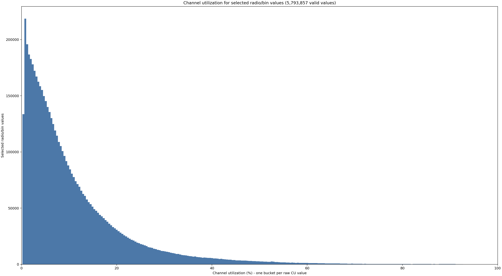
This cumulative distribution combines valid CU measurements, with one measurement for each physical radio and analysis time interval. At a CU level on the horizontal axis, the observed curve gives the fraction of these measurements at or below that level. For example, 0.90 (90%) at 50% CU means nine out of ten usable measurements had CU no higher than 50%. Each CU measurement has equal weight, and missing CU is excluded from the observed curve. Where expected bin counts are available, shading and dashed/dotted curves show minimum/maximum cumulative shares over all expected radio/bins, allowing missing CU to range from 0% to 100%. The labels retain the existing raw-field cutoffs at the 50% and 75% markers. These are possible ranges, not confidence intervals or estimates of missing CU.
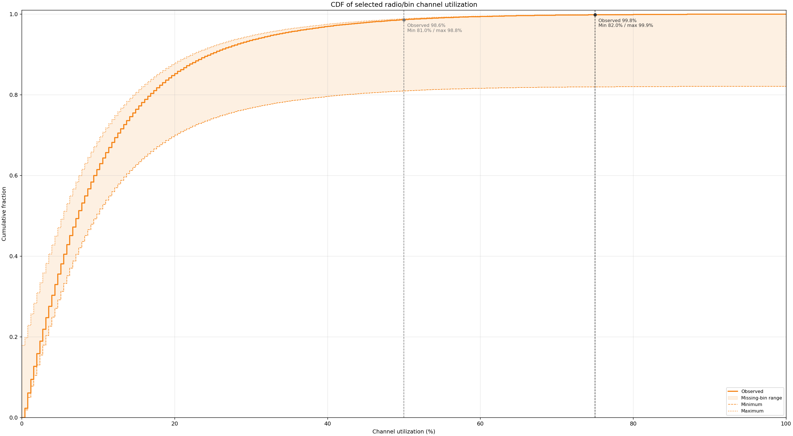
These histograms consider all sampled radios on the APs associated with each classroom. For each classroom class session, the calculation finds each radio's longest high-CU or very-high-CU streak, then retains the longest single-radio streak. The radios do not need to be above the threshold simultaneously, and high periods from different radios are not joined into one streak. CU coverage determines how much can be observed: observed streaks stop at missing CU, while possible-connected streaks can bridge gaps in coverage without proving that CU stayed high during those gaps.
These four values are the longest single-radio streaks across all analyzed class sessions. The histograms show how the classroom class-session maxima are distributed.
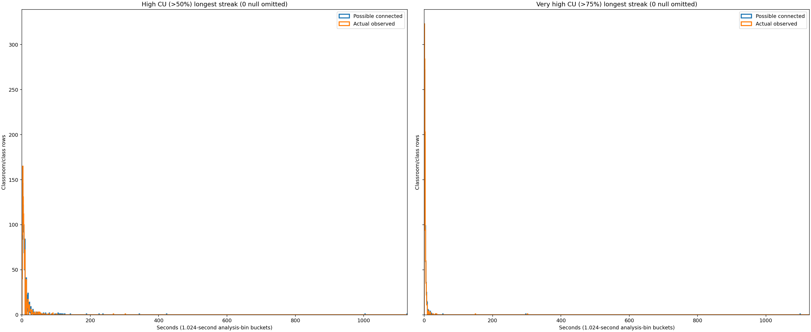
A radio with high channel utilization has the potential to affect more stations when there are more associated to it. Station-time combines associated station counts with duration: 50 stations associated for 10 minutes contributes 500 association-minutes. The metrics below report association-hours and the percentage of measured station-time with high or very high CU.
An association-hour is one associated station counted for one hour. High includes very high. Observed exposure percentages use only periods with both usable CU and station totals; pair coverage and station-count coverage use expected radio time. CU coverage of available station-time weights usable CU by associated station count as well as duration.
High CU starts at raw 128 (about 50%); very high starts at raw 192 (about 75%) and is included in high. Missing CU and unavailable station counts are excluded from observed exposure; accepted stale-assisted station counts participate.
Minimum and maximum exposure use all station-time with available station counts. The minimum assumes CU-missing bins were below the threshold; the maximum assumes they were above it. For example, 30 observed high-CU association-hours out of 80 with usable CU, plus 20 with missing CU, gives 37.5% observed exposure and a possible range of 30% to 50% over the 100 available association-hours. Periods with unknown station counts are outside these bounds. The ranges are not confidence intervals or estimates of missing CU; full CU coverage of available station-time makes them coincide with observed exposure.
Each bar shows the share of that band's paired station-time with the stated CU condition. Where available, whiskers show minimum/maximum percentages over all station-time with known station counts, allowing missing CU to range from 0% to 100%. An unavailable observed value has no bar. Overall combines the sampled bands. Both panels share the same percentage scale.
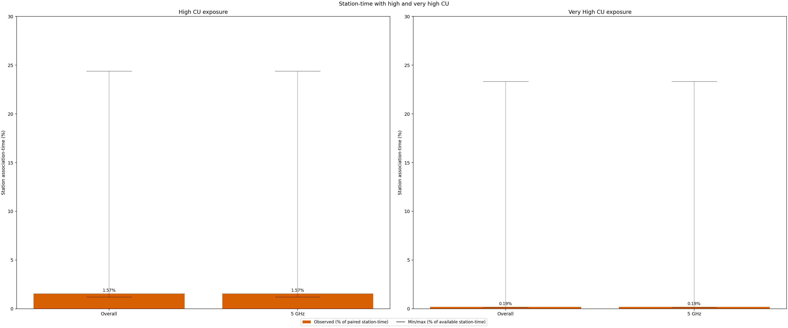
Station counts describe associations across the sampled SSIDs, not unique people or active traffic sources. Mean radio values use the time for which complete station totals are available, including accepted stale assistance up to 30 seconds. Enrollment comparisons use classroom/class-session peaks and combined enrollment. Metrics include mean stations per radio and mean peak stations per enrolled student, with band, SSID and class-session breakdowns.
Mean stations per radio weights complete station totals by their duration. Mean peak stations per enrolled divides the sum of included class-session classroom peaks by the sum of their combined enrollments; larger classes therefore carry more weight.
These are time-weighted mean counts per radio, and the maximum is the highest single radio/bin count. Coverage shows how much expected radio time had a complete count.
| Population | Mean stations/radio | Maximum single-radio count | Station coverage |
|---|---|---|---|
| Overall | 25.16 | 84 | 98.48% |
| 5 GHz | 25.16 | 84 | 98.48% |
The project mean is the sum of eligible class-session classroom peaks divided by the sum of their combined enrollments. For example, 1.5 means 1.5 peak associations per enrolled student, not average concurrent devices per attendee. Zero/missing enrollment is excluded. Each SSID/band row uses its own eligible sessions; their independently timed peaks and ratios should not be added.
| Population | Mean peak stations/enrolled | Eligible class sessions | Stale-assisted peak sessions |
|---|---|---|---|
| Overall | 1.50 | 1,062 | 56 |
| SSID: BYU-WiFi | 0.19 | 1,062 | 29 |
| SSID: ITC-VR-Lab | 0.00 | 3 | 0 |
| SSID: LSB-DNA | 0.00 | 77 | 0 |
| SSID: eduroam | 1.36 | 1,062 | 54 |
| Band: 5 GHz | 1.50 | 1,062 | 56 |
This histogram includes each class session's highest available classroom station count divided by combined enrollment.
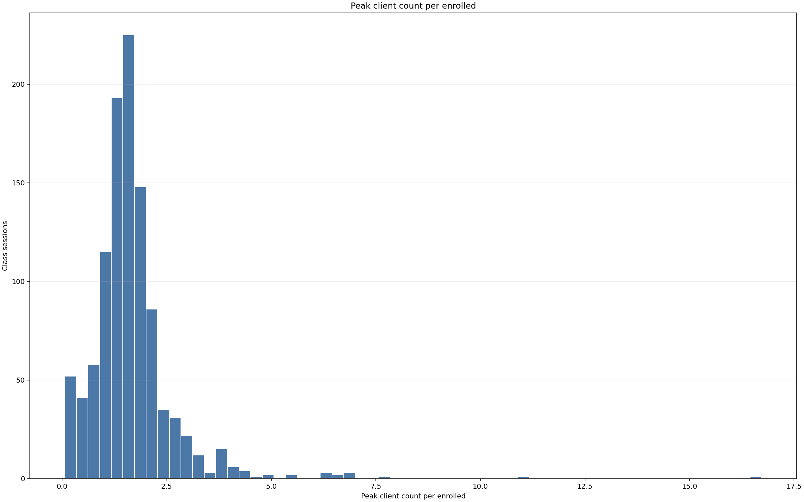
Compares combined enrollment with the maximum available classroom station count in the same class session. Stale-assisted peaks are distinguished. Attendance and the number of associated stations per attendee can vary between class sessions.
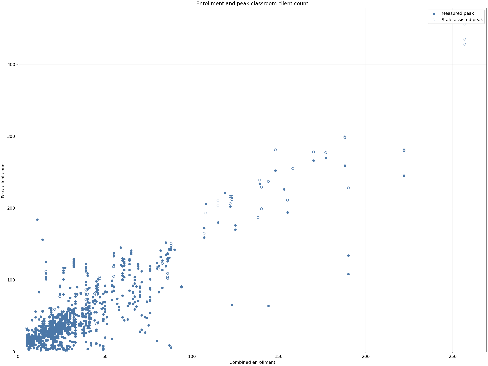
Channel utilization and station count are compared to measure if radios with more associations tend to be busier. Multiple BSSIDs can be broadcast from the same radio; a CU measurement represents one physical radio per time bin, but is expected to be the same value as any BSSID on that channel in the vicinity, especially those on the same radio. Station counts are added across all sampled BSSIDs on that radio in the same bin. Unknown CU and unavailable station counts are excluded; accepted stale-assisted station counts participate. Correlations are listed for CU to station count, and a density plot shows overall which CU and station-count combinations occurred most often; band-specific plots follow in Band comparison.
A pair contains usable CU and a complete station count for the same radio and time bin. Pair coverage and the coefficients below count readings rather than weighting their duration.
Positive values mean higher station counts tend to coincide with higher CU. Pearson r measures linear association; Spearman ρ measures whether the variables tend to rise together in rank. Values near +1 or −1 indicate strong corresponding association; values near zero indicate little of that type of association. Neither establishes that these clients caused the CU.
| Population | Pearson r | Spearman ρ | Valid pairs | Pair coverage | Stale-assisted pairs |
|---|---|---|---|---|---|
| Overall | 0.265 | 0.438 | 5,793,801 | 82.11% | 150,691 |
| 5 GHz | 0.265 | 0.438 | 5,793,801 | 82.11% | 150,691 |
These coefficients use one count per valid radio/bin pair, not duration weighting. Pooling can reflect differences among bands, radios and classrooms. Constant/insufficient data give unavailable coefficients. The density plots summarize observed pairs; no regression model is fitted.
The color scale shows the number of valid same-radio/bin pairs in each occupied cell. The grid is a visual summary; the correlation coefficients use the underlying exact pairs, not the grid cell centers.
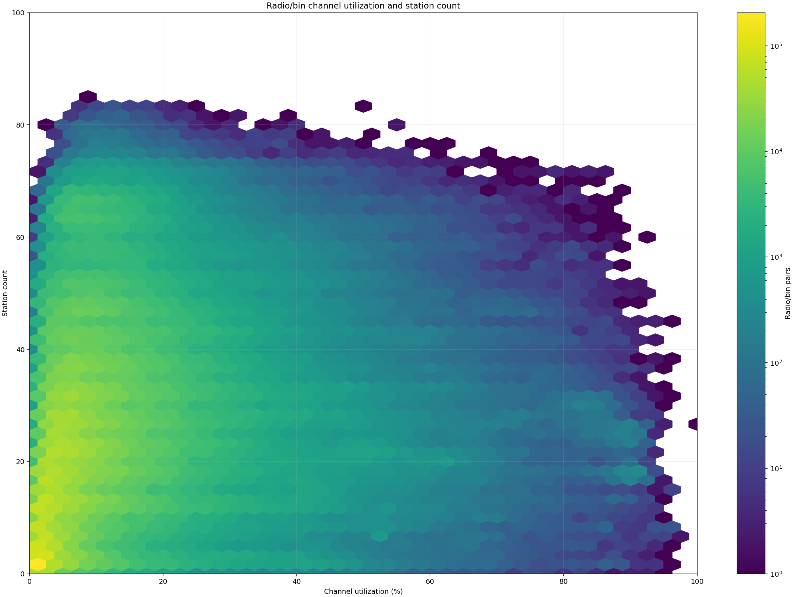
Admission capacity is the radio's advertised remaining QoS medium-admission allowance. CU describes channel activity; this value describes what the radio advertises for admission. A low value may imply low capacity for additional real-time or low latency traffic. Missing capacity is not zero, and capacities are not added across radios. Metrics in this section include admission capacity for the entire sample, as well as comparisons between admission capacity and channel utilization or station count.
The mean gives each valid radio/bin reading equal weight. Capacity percentages are relative to the field's maximum. Coverage is the share of expected radio/bin readings with valid capacity. The band-comparison tables instead weight admission-capacity readings by their duration.
| Relationship | Pearson r | Spearman ρ (rho) | Valid pairs | Pair coverage |
|---|---|---|---|---|
| Capacity and CU | -0.804 | -0.849 | 5,793,857 | 82.11% |
| Capacity and station count | -0.275 | -0.436 | 5,793,801 | 82.11% |
Each pair uses the same radio and time bin. Pearson r measures linear association; Spearman ρ (rho) measures whether values rise or fall together in rank. Both range from −1 to +1: positive values indicate that the two measurements tend to rise together, negative values indicate opposite directions, and values near zero indicate little of that type of association. These are correlation coefficients, not p-values. The detailed source table also separates bands.
This histogram shows the distribution of valid advertised admission capacity, expressed relative to the field's defined maximum. Zero is an observed value, while missing/invalid values are excluded and reported separately.
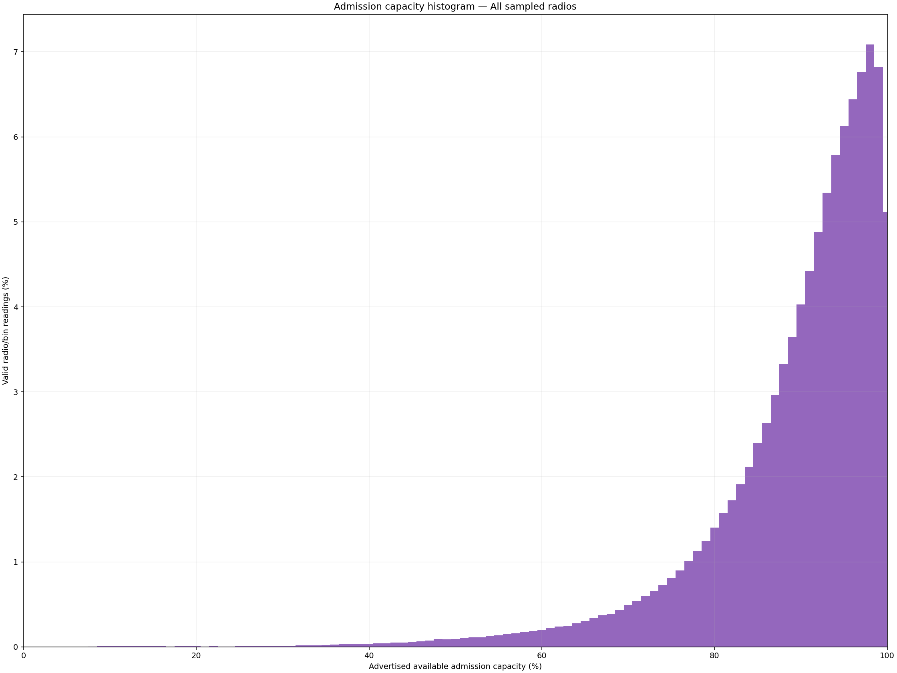
At a capacity value, the curve gives the fraction of valid readings at or below it. A concentration near an endpoint may reflect the AP's advertised behavior; it is not a direct measurement of usable throughput.
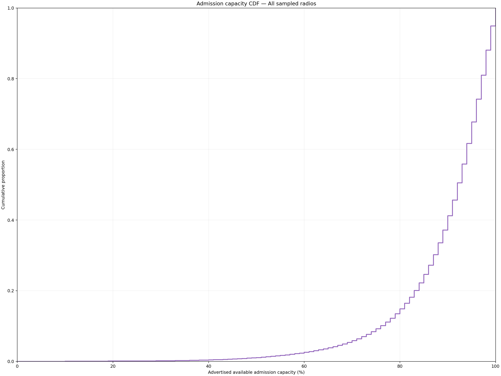
Pairs admission capacity and CU from the same radio/bin. Dense regions show common combinations. A relationship can reflect radio admission policy as well as channel activity; neither axis substitutes for the other.
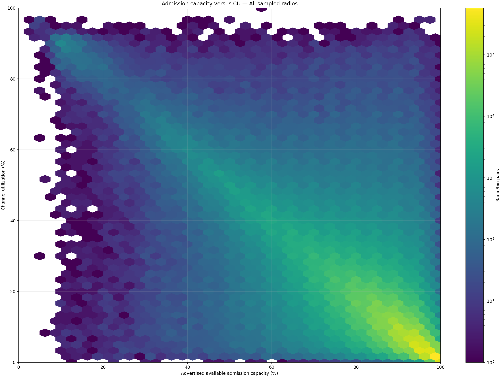
Pairs each valid advertised admission-capacity value with the complete associated station total for the same radio and analysis time bin. The color scale shows how often each capacity/station-count combination occurs. Accepted assisted station counts participate; unavailable pairs are excluded.
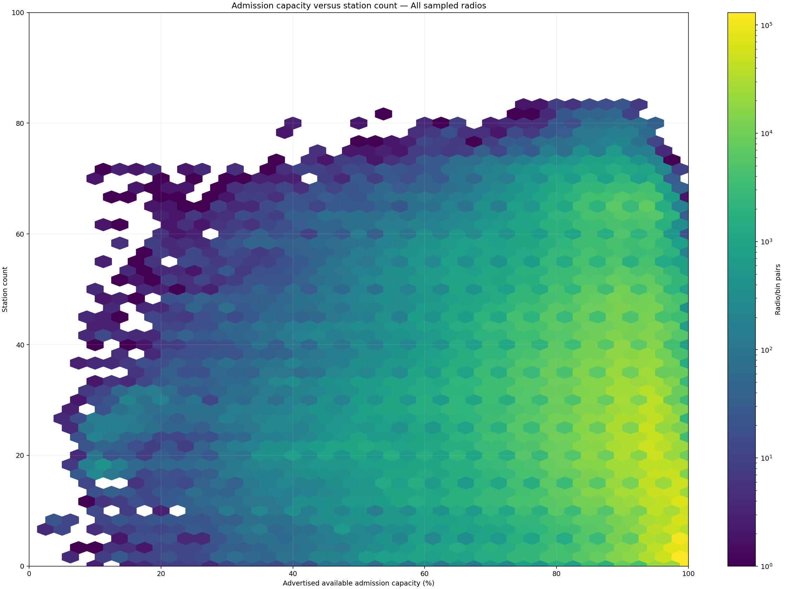
This section measures 6 GHz adoption in infrastructure and client associations, and compares channel utilization and advertised admission capacity across the sampled bands. Metrics include mean CU and associated stations per band, with data also grouped by infrastructure cohort: environments with 5 GHz and no 6 GHz, and those with both bands enabled. These comparisons describe medium use and help investigate how 5 GHz utilization differs as infrastructure adds 6 GHz and client associations transition to the higher band. They show observed relationships rather than isolate the effect of deployment changes.
Station-time percentages use combined 5 and 6 GHz association-time; 6 GHz associated station-time includes all sampled infrastructure, while enabled APs includes only APs that have an enabled 6 GHz radio.
These are distinct observed APs, radios, classrooms and class sessions within each AP infrastructure cohort. The same AP, classroom or class session can appear in more than one band row; counts across rows are not additive.
| AP infrastructure cohort | APs | Radios | Classrooms | Class sessions |
|---|---|---|---|---|
| 5 GHz · AP without 6 GHz | 60 | 83 | 51 | 1,063 |
| Band | Mean CU observed | Mean CU possible | CU coverage | Mean stations/radio | Station coverage | Mean admission capacity |
|---|---|---|---|---|---|---|
| 5 GHz | 10.93% | 8.97%–26.86% | 82.11% | 25.16 | 98.48% | 89.37% |
| AP infrastructure cohort | Mean CU observed | Mean CU possible | CU coverage | Mean stations/radio | Station coverage | Mean admission capacity |
|---|---|---|---|---|---|---|
| 5 GHz · AP without 6 GHz | 10.93% | 8.97%–26.86% | 82.11% | 25.16 | 98.48% | 89.37% |
Mean CU and mean admission-capacity values each weight valid readings by their duration; mean station values use periods with complete station totals, including accepted assisted counts. Mean admission capacity is expressed as a percentage of the field's defined maximum allowance, not available throughput. AP/classroom cohort views coincide in uniform rooms; mixed rooms can differ. All sampled bands, including 2.4 GHz, remain in the source tables.
CU values labeled observed use valid measurements. Their minimum/maximum ranges allow missing CU to be 0% to 100% over the same expected radio time. Ranges do not remove capture bias within bins that contain a reading. Missing supporting components leave bounds unavailable.
Each row describes one band on an AP model with the stated sampled 5/6 GHz radio configuration. Counts are distinct within the row; the same APs and class sessions can contribute to multiple bands. Mean CU and mean admission capacity both weight valid readings by duration. Mean stations/radio weights complete station counts by duration, including accepted assisted counts. The sampled radio configuration is not a complete inventory of the model's hardware.
| AP model | Sampled radios/AP (5 / 6 GHz) | Band | APs | Radios | Class sessions | Mean CU observed | Mean CU possible | CU coverage | Mean stations/radio | Mean admission capacity |
|---|---|---|---|---|---|---|---|---|---|---|
| 515 | 1 / 0 | 5 GHz | 37 | 37 | 687 | 13.44% | 12.26%–20.99% | 91.27% | 22.87 | 86.49% |
| 555 | 2 / 0 | 5 GHz | 23 | 46 | 376 | 8.88% | 6.74%–30.84% | 75.91% | 26.68 | 91.72% |
A radio/class-session is one physical radio measured during one scheduled class or event. Each band's outline histogram counts its observed time-weighted class-session means in CU buckets about 0.78 percentage points wide. Shading shows the possible total count in each bucket after allowing missing CU to range from 0% to 100%. The lower edge counts mean intervals wholly inside the bucket; the upper edge counts all intervals that intersect it. These are separate bucket limits, not one possible histogram: each radio/class-session can occupy only one bucket, so several upper limits may rely on the same sessions and cannot occur together. Other buckets can still exceed their observed counts when different sessions move. An entirely missing radio/class-session contributes a possible range without an observed mean.
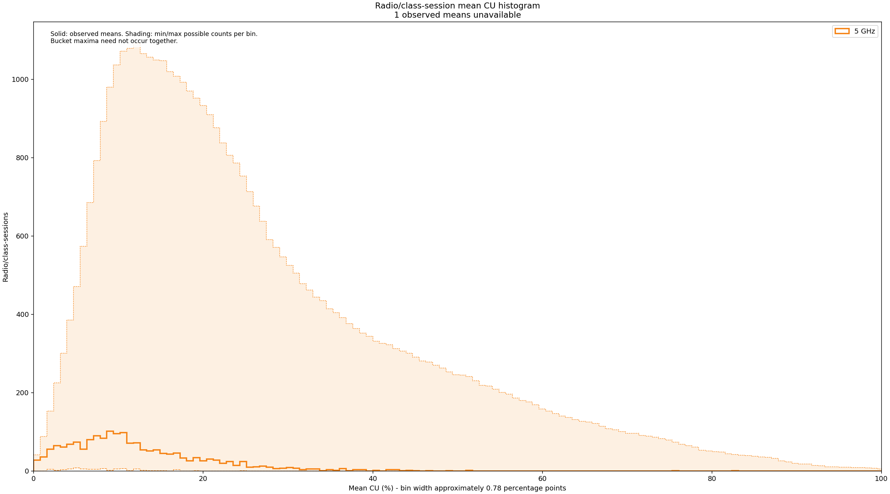
These curves compare overall channel conditions on each band, combining all sampled AP models and 6 GHz deployment groups within that band. At a CU level, each observed curve gives the fraction of valid radio/bin readings at or below it. Each reading has equal weight. Where expected bin counts are available, shading and dashed/dotted curves show minimum/maximum cumulative shares over all expected radio/bins, allowing missing CU to range from 0% to 100%. An absent band is omitted; a present band with entirely missing CU has a possible range without an observed curve. The next figure separates the infrastructure groups and weights radio time.
| Band | Readings at or below 50% CU | Possible readings at or below 50% CU | Readings at or below 75% CU | Possible readings at or below 75% CU | Valid readings |
|---|---|---|---|---|---|
| 5 GHz | 98.60% | 80.95%–98.85% | 99.82% | 81.96%–99.85% | 5,793,857 |
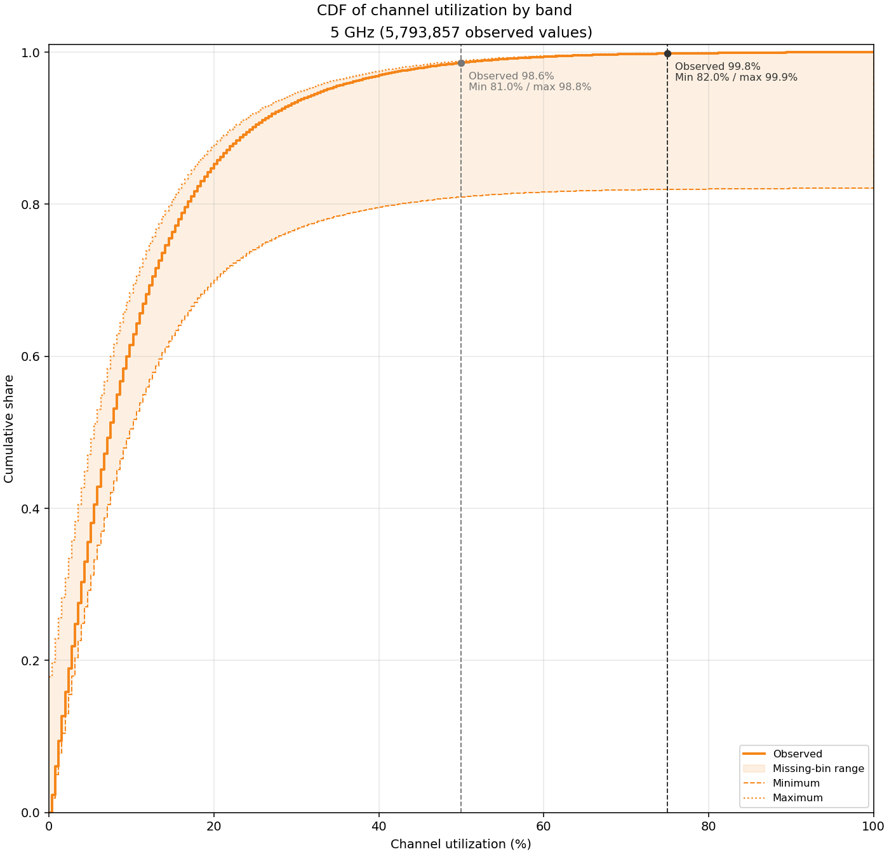
Each panel shows one infrastructure cohort: 5 GHz radios on APs without 6 GHz, 5 GHz radios on APs with 6 GHz, or their 6 GHz radios. Unlike the by-band curves, each observed reading is weighted by its valid duration. The groups describe 6 GHz enablement, not AP model; model-specific results are in the linked AP-model table. A separate classroom-cohort row appears when a room mixes APs with and without 6 GHz. Each panel keeps its observed curve and possible range on the same scale, without overlapping other cohorts. Shading allows missing CU to range from 0% to 100%; it is not a confidence interval. Full coverage makes the possible limits coincide with the observed curve.
| Grouping | Radio group | Radio time at or below 50% CU | Possible radio time at or below 50% CU | Radio time at or below 75% CU | Possible radio time at or below 75% CU |
|---|---|---|---|---|---|
| AP deployment | 5 GHz without 6 GHz | 98.60% | 80.96%–98.85% | 99.82% | 81.96%–99.85% |
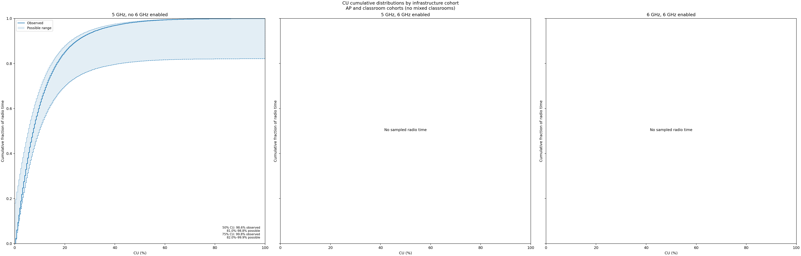
Mean CU uses only periods with valid CU measurements. Where bounds are available, CU whiskers show minimum/maximum mean CU over all expected radio time, allowing missing CU to range from 0% to 100%. Mean stations per radio uses only periods with complete station totals, including accepted assisted counts. Each observed mean weights its usable measurements by duration, so the two mean values may use different parts of a class session. CU relative to station count uses matching periods with valid CU and positive station totals; its unit is CU percentage points per associated station. For example, matching mean values of 40% CU and 20 stations give 2 percentage points per station. This descriptive ratio does not measure an individual station's airtime.
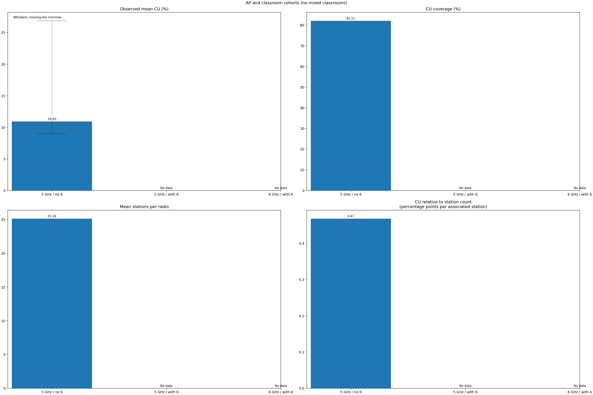
The left panel pairs observed mean CU for 5 and 6 GHz radios on the same AP/class-session, using only time bins with valid CU on both radios. Points below the diagonal have lower mean CU on 6 GHz. The scatter shows observed values only. The right panel shows 6-minus-5 differences in percentage points. Its shading gives possible counts in each bucket for the complete paired-window scenario: common valid readings constrain both radios, and remaining time may have any CU from 0% to 100%. Bucket maxima need not occur together. This broader window differs from the common-valid-only observations. An AP with multiple radios can contribute multiple descriptive pairs, so these are not independent AP-level comparisons.
Each usable radio-pair/class-session comparison has equal weight in this mean. Within each comparison, the two mean CU values weight their common valid bins by duration. A negative difference means lower observed CU on 6 GHz; comparisons without common valid CU are excluded. The separate complete paired-window range uses those same eligible comparisons and equal weights, but allows time without a common valid pair to have any CU from 0% to 100% on each radio.
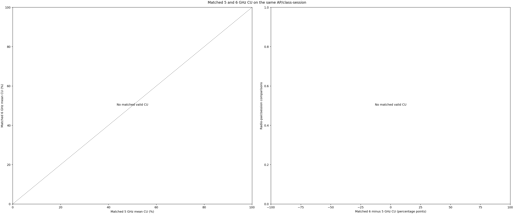
Each panel pairs admission capacity and CU on the same radio and time bin for one band. The color scale shows the number of valid pairs in each density cell.
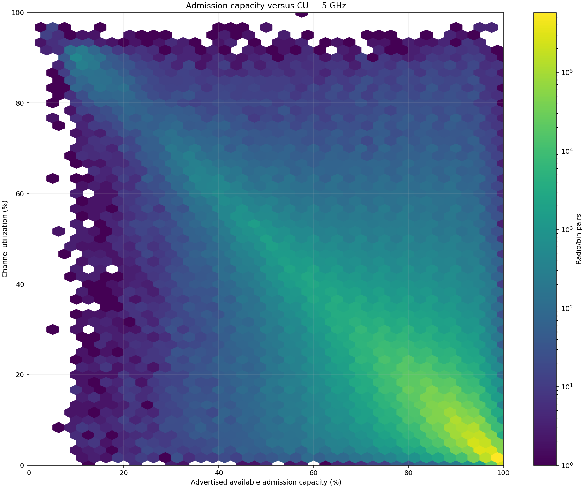
These histograms compare advertised admission capacity across bands. Each panel expresses the frequency of capacity values as a percentage of that band's valid radio/bin readings.
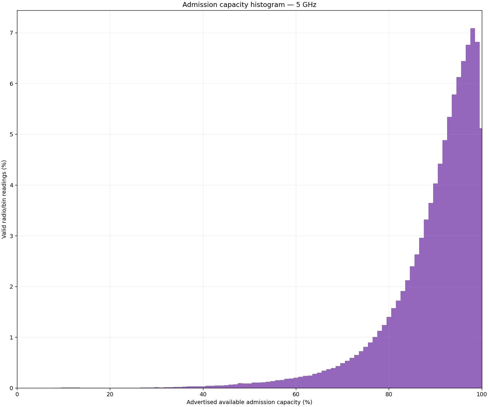
For each band, the curve shows the fraction of valid advertised admission-capacity readings at or below the value on the horizontal axis. Compare how the advertised allowance is distributed across bands.
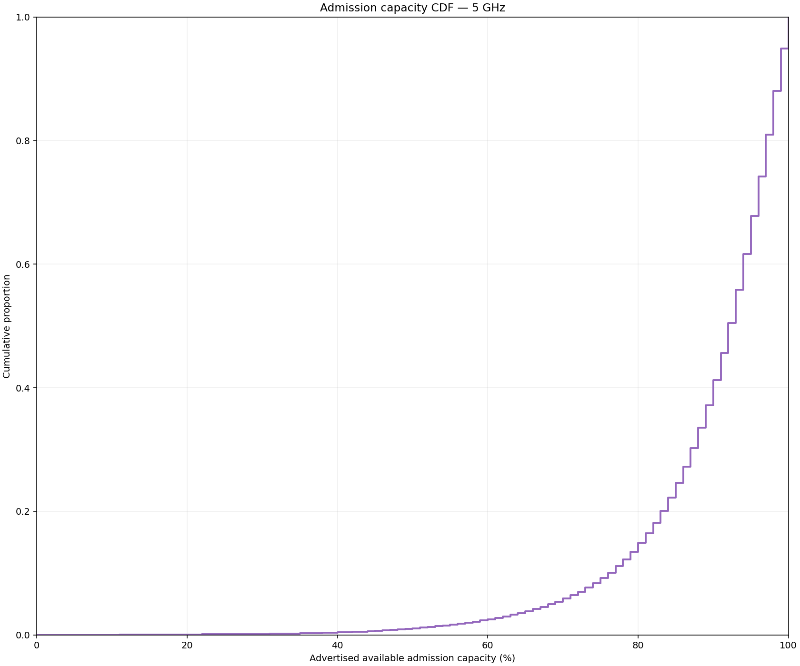
Each panel pairs admission capacity and the associated station total on the same radio and time bin for one band. The color scale shows the number of valid pairs; accepted assisted station counts participate.
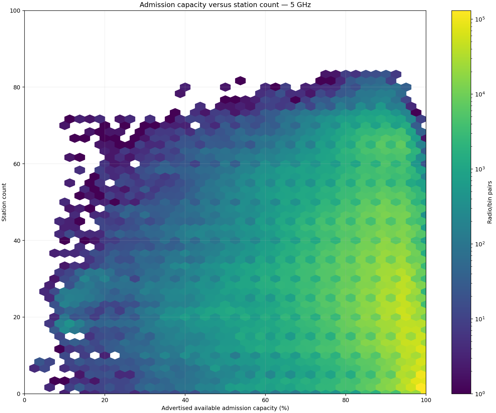
Each histogram counts complete classroom/bin station totals for one band, combining sampled radios across the classroom's APs. The panels share one vertical scale so their observation counts can be compared directly. Available includes stale-assisted observations; the orange outline identifies observations that use assisted station counts.
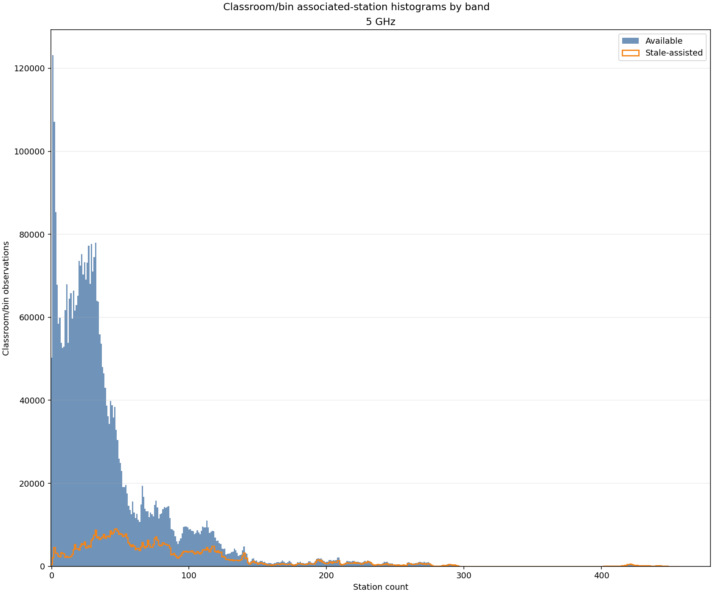
Separates the CU/station relationship by band so a pooled association is not mistaken for a within-band effect. The CU/station relationship section provides the per-band coefficients and pair coverage; the colors here show the frequency of valid radio/bin pairs.
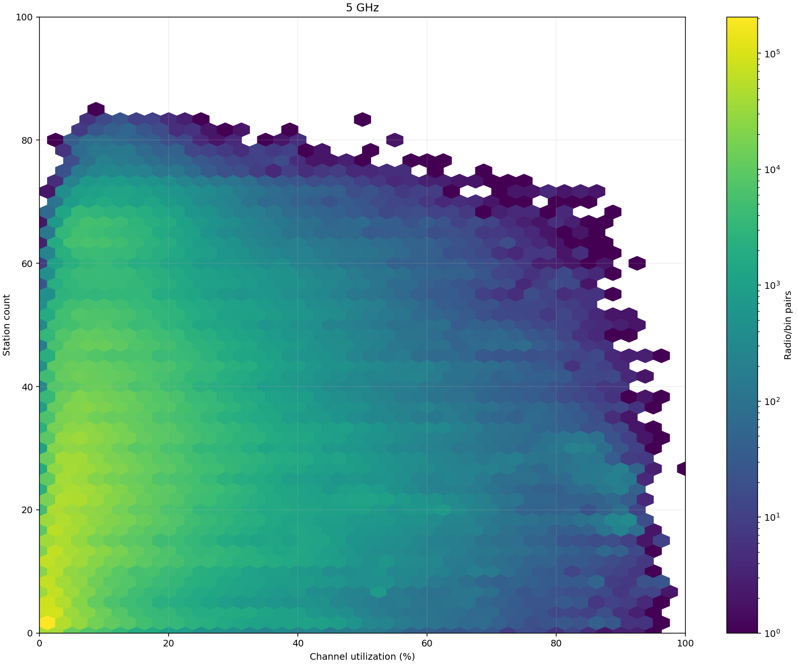
Brighter cells contain a larger share of that cohort's valid paired radio time. The shared color scale compares the shapes of distributions, not total population sizes. Station counts in the final display bucket are grouped; source statistics are not clipped.
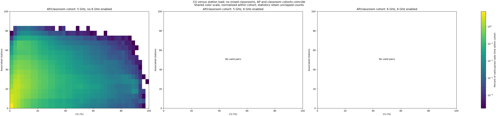
These histograms include one entry per AP/class-session or classroom/class-session with 6 GHz enabled, and the comparison is useful if there are classrooms with mixed APs with and without 6 GHz enabled. The value is the 6 GHz share of combined 5+6 GHz associated station-time over matching observation periods. It measures aggregate association-time, not unique clients; accepted assisted station counts participate. Zero means enabled but unused; APs and classrooms without 6 GHz enabled are excluded.
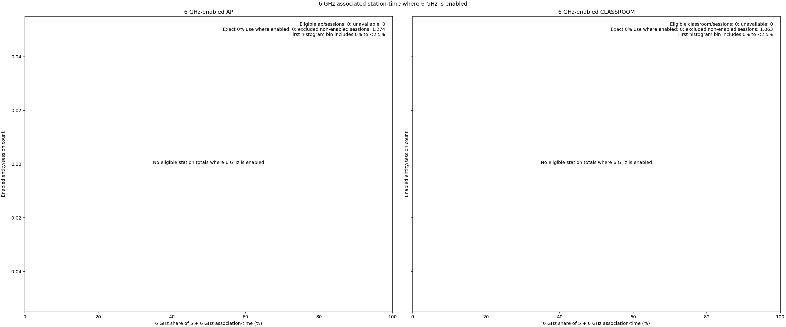
Beacon data may be missing from the dataset for various reasons, including RF contention, local interference, AP-model behavior, or limitations of the capture path such as Encapsulated Remote Mirroring (ERM). This is a significant limitation of the analysis because missing data can bias the measurements, especially when missingness is correlated with high channel utilization or station count. These diagnostics compare CU and station counts from preceding observation windows with subsequent capture-slot availability to look for such patterns. A capture slot is an interval in which the diagnostic expects one beacon per sampled BSSID; an empty slot contains none. They explore whether higher observed CU or station counts are associated with lower observed beacon availability. A repeatable relationship could make capture gaps a useful indicator of channel conditions, but it would need calibration for the AP model and capture path before being used to estimate CU. Missing captured beacons alone do not establish over-the-air beacon loss.
The cadence diagnostic uses a nominal beacon interval of 100 TU (0.1024 seconds). For native captures, this gives approximately 9.77 expected beacon opportunities per second per BSSID. ERM uses one expected capture opportunity per 10 beacon intervals (1.024 seconds), or approximately 0.977 per second per BSSID. This lower baseline describes the capture expectation, not the AP's transmitted beacon rate. Multiple captured beacons within one ERM slot receive only one unit of availability credit.
CU analysis uses 1.024-second bins, with at most one selected CU measurement per radio per bin. CU coverage describes the analysis time with a usable radio measurement; cadence availability describes how many expected per-BSSID capture opportunities were occupied.
Radio-hours sum time across sampled radios and sessions. No-beacon time describes missing observations in the capture; it does not establish why a beacon was missing.
These existing coefficients relate previous-window CU or station count to the following window's empty-slot fraction. Results are separated by capture family, AP model, band and sampled radio configuration.
| Capture family | AP model | Band | Sampled radios per AP (5 / 6 GHz) | Context measurement | Pearson r with empty-slot fraction | Paired windows | Windows with usable context |
|---|---|---|---|---|---|---|---|
| ERM | 515 | 5 GHz | 1 / 0 | Previous-window mean CU | 0.372 | 272,523 | 95.63% |
| ERM | 515 | 5 GHz | 1 / 0 | Previous-window station count | 0.345 | 277,591 | 97.40% |
| ERM | 555 | 5 GHz | 2 / 0 | Previous-window mean CU | 0.389 | 407,987 | 97.00% |
| ERM | 555 | 5 GHz | 2 / 0 | Previous-window station count | 0.297 | 416,721 | 99.07% |
Bars group observation windows by the preceding window's mean CU. Each n= label counts paired radio/capture-family observation windows in that group, not beacons or individual capture slots. The vertical axis is the percentage of expected BSSID capture slots that were empty in the following windows: total empty slots divided by total expected slots. It is not the percentage of windows with missing data or the probability that a single next slot is empty. Models and bands are pooled within each capture-family panel. Missing listening exposure and capture-path congestion limit interpretation; this does not establish a safe CU threshold or fill missing CU.
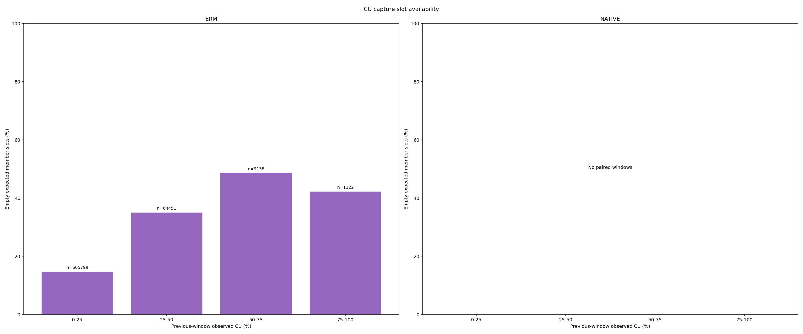
Bars group observation windows by the preceding window's mean station count, including accepted stale assistance. Each n= label counts paired radio/capture-family observation windows in that group, not beacons or individual capture slots. The vertical axis is the percentage of expected BSSID capture slots that were empty in the following windows: total empty slots divided by total expected slots. It is not the percentage of windows with missing data or the probability that a single next slot is empty. Models and bands are pooled within each capture-family panel. This is descriptive evidence for investigation, not a model that corrects missing beacons.
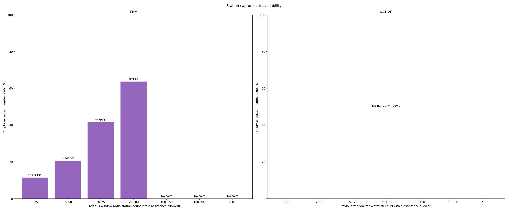
These histograms separate usable CU, beacons without usable CU, and bins without a beacon. Each entry represents one radio/class-session. Low observed CU is less reassuring when much of a radio's observation window is missing.
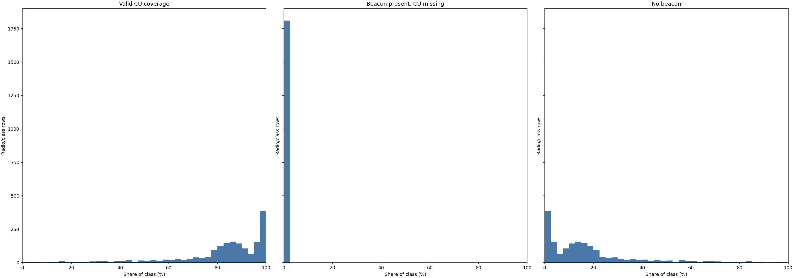
Each point is one radio/class-session, showing its mean observed CU against the percentage of its scheduled radio time with usable CU data. Colors distinguish AP models and sampled radio configurations. Check coverage when interpreting a low CU mean: missing periods may have had different channel conditions. This graph shows observed means only; possible ranges remain in the numeric tables. No point is created when CU is entirely missing.
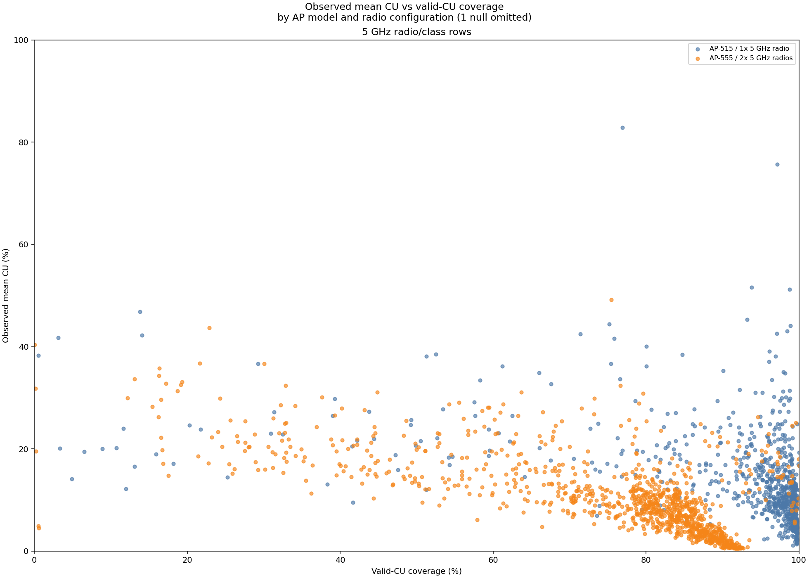
Describes gaps between occupied expected beacon slots. Native and ERM captures use different cadence expectations. Gaps describe what reached the capture, not a proven over-the-air loss rate.
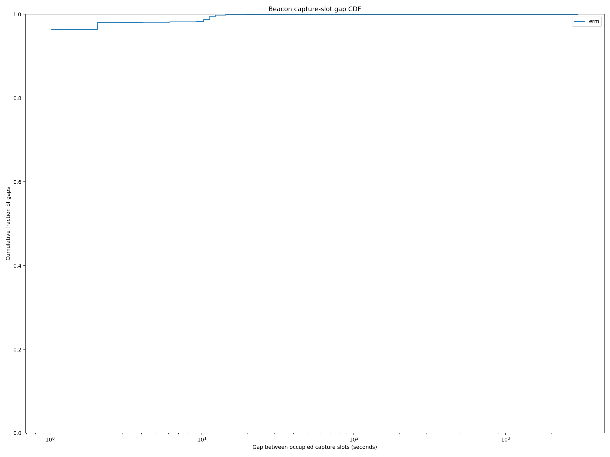
Expand a classroom to review its class sessions. A class session is a scheduled analysis period, including a class or event; a classroom is the configured room or monitored space. The summary counts describe the scheduled sample; each classroom table lists class times, enrollment, mean radio CU, peak station counts and coverage, with optional radio time-series links. Local dates/times use America/Denver with date-specific DST offsets. Peak counts include accepted stale assistance; enrollment combines simultaneous sections. Classroom headings show observed AP/radio counts and seating capacity when known; variable or unavailable counts are identified. Mean radio CU pools valid radio time; it is not a merged classroom/channel CU reading. Each room's band summary pools measurements across its analyzed class sessions: mean CU and mean admission capacity both weight valid readings by duration, while mean station values use the duration with complete counts, including accepted stale assistance. Radio time-series links open the radio/class-session graphs when generated.
CU minimum/maximum values allow missing measurements to range from 0% to 100% over expected radio time. Individual class-session means and bounds pool each radio's exact sums and durations; they do not average radio coverage percentages.
| Band | Class sessions | Mean CU observed | Mean CU possible | CU coverage | Mean stations/radio | Station coverage | Mean admission capacity |
|---|---|---|---|---|---|---|---|
| 5 GHz | 17 | 7.32% | 7.05%–10.79% | 96.26% | 22.68 | 99.67% | 92.55% |
| Local date | Local time | Course / event | Enrollment | Mean radio CU observed | Mean radio CU possible | Peak stations | Min radio CU coverage | Radio time series |
|---|---|---|---|---|---|---|---|---|
| 2024-11-11 | 08:30–09:50 | NURS 296 | 8 | 2.29% | 2.19%–6.77% | 11 | 95.41% | |
| 2024-11-12 | 12:00–12:50 | CHEM 106 | 14 | 8.05% | 7.72%–11.82% | 24 | 95.90% | |
| 2024-11-13 | 09:00–09:50 | CHEM 101 | 26 | 12.25% | 10.29%–26.29% | 47 | 83.99% | |
| 2024-11-13 | 10:00–10:50 | PHSCS 106 | 9 | 8.27% | 8.22%–8.87% | 28 | 99.35% | |
| 2024-11-13 | 11:00–11:50 | PHSCS 106 | 15 | 9.68% | 9.52%–11.16% | 31 | 98.36% | |
| 2024-11-13 | 12:00–12:50 | PHSCS 106 | 19 | 7.60% | 7.17%–12.80% | 29 | 94.37% | |
| 2024-11-13 | 13:00–13:50 | CHEM 101 | 25 | 11.62% | 11.39%–13.39% | 35 | 98.00% | |
| 2024-11-13 | 16:00–16:50 | PHSCS 106 | 11 | 5.09% | 5.07%–5.51% | 18 | 99.56% | |
| 2024-11-14 | 08:00–08:50 | CHEM 105 | 21 | 4.03% | 4.00%–4.71% | 19 | 99.29% | |
| 2024-11-14 | 09:00–09:50 | CHEM 105 | 22 | 9.15% | 8.79%–12.74% | 31 | 96.04% | |
| 2024-11-14 | 10:00–10:50 | CHEM 105 | 21 | 7.88% | 7.65%–10.49% | 32 | 97.17% | |
| 2024-11-14 | 12:00–12:50 | CHEM 106 | 22 | 6.42% | 6.34%–7.47% | 28 | 98.87% | |
| 2024-11-14 | 13:00–13:50 | CHEM 105 | 25 | 8.80% | 8.43%–12.69% | 40 | 95.73% | |
| 2024-11-14 | 14:00–14:50 | CHEM 105 | 23 | 11.07% | 10.62%–14.65% | 34 | 95.97% | |
| 2024-11-14 | 15:00–15:50 | CHEM 105 | 22 | 10.28% | 9.44%–17.62% | 47 | 91.82% | |
| 2024-11-15 | 09:00–09:50 | A HTG 100 | 6 | 3.09% | 3.06%–3.95% | 12 | 99.11% | |
| 2024-11-15 | 14:00–14:50 | CHEM 101 | 18 | 2.86% | 2.80%–4.88% | 61 | 97.92% |
| Band | Class sessions | Mean CU observed | Mean CU possible | CU coverage | Mean stations/radio | Station coverage | Mean admission capacity |
|---|---|---|---|---|---|---|---|
| 5 GHz | 20 | 11.09% | 9.95%–20.26% | 89.69% | 21.70 | 96.91% | 88.81% |
| Local date | Local time | Course / event | Enrollment | Mean radio CU observed | Mean radio CU possible | Peak stations | Min radio CU coverage | Radio time series |
|---|---|---|---|---|---|---|---|---|
| 2024-11-11 | 09:30–10:45 | COMMS 330 | 20 | 13.82% | 13.33%–16.88% | 39 | 96.45% | |
| 2024-11-11 | 11:00–12:15 | COMMS 498 R | 31 | 13.93% | 13.27%–18.06% | 27 | 95.21% | |
| 2024-11-11 | 12:30–13:45 | COMMS 371 R | 15 | 9.24% | 9.03%–11.38% | 29 | 97.64% | |
| 2024-11-11 | 14:00–15:15 | COMMS 238 | 23 | 7.75% | 7.65%–9.00% | 27 | 98.65% | |
| 2024-11-11 | 16:00–18:50 | COMMS 239 | 45 | 14.60% | 11.21%–34.43% | 55 | 76.78% | |
| 2024-11-12 | 09:30–10:45 | EL ED 410 | 24 | 6.85% | 6.80%–7.51% | 4 | 99.28% | |
| 2024-11-12 | 13:00–13:50 | CHEM 105 | 25 | 17.95% | 14.70%–32.82% | 48 | 81.88% | |
| 2024-11-12 | 14:00–15:15 | COMMS 302 | 48 | 18.99% | 3.03%–87.09% | 67 | 15.94% | |
| 2024-11-12 | 15:30–16:45 | ANTHR 341 | 11 | 10.19% | 10.06%–11.35% | 21 | 98.70% | |
| 2024-11-12 | 17:00–19:50 | COMMS 320 | 20 | 9.08% | 8.79%–12.03% | 31 | 96.76% | |
| 2024-11-13 | 09:30–10:45 | COMMS 330 | 20 | 16.45% | 15.58%–20.88% | 36 | 94.70% | |
| 2024-11-13 | 11:00–12:15 | COMMS 498 R | 31 | 11.23% | 11.17%–11.70% | 4 | 99.46% | |
| 2024-11-13 | 12:30–13:45 | COMMS 371 R | 15 | 18.33% | 17.65%–21.34% | 26 | 96.31% | |
| 2024-11-13 | 14:00–15:15 | COMMS 238 | 23 | 20.03% | 19.48%–22.21% | 32 | 97.27% | |
| 2024-11-13 | 17:00–19:50 | COMMS 350 | 15 | 4.86% | 4.84%–5.30% | 22 | 99.54% | |
| 2024-11-14 | 09:30–10:45 | COMMS 307 | 39 | 10.69% | 10.48%–12.51% | 14 | 97.96% | |
| 2024-11-14 | 13:00–13:50 | CHEM 105 | 25 | 13.57% | 12.99%–17.26% | 36 | 95.73% | |
| 2024-11-14 | 14:00–15:15 | COMMS 302 | 48 | 20.49% | 8.51%–66.96% | 60 | 41.55% | |
| 2024-11-14 | 15:30–16:45 | ANTHR 341 | 11 | 2.84% | 2.82%–3.55% | 6 | 99.27% | |
| 2024-11-14 | 17:00–19:50 | COMMS 481 | 23 | 8.60% | 8.44%–10.25% | 24 | 98.19% |
| Band | Class sessions | Mean CU observed | Mean CU possible | CU coverage | Mean stations/radio | Station coverage | Mean admission capacity |
|---|---|---|---|---|---|---|---|
| 5 GHz | 23 | 11.01% | 10.93%–11.67% | 99.26% | 12.73 | 100.00% | 88.86% |
| Local date | Local time | Course / event | Enrollment | Mean radio CU observed | Mean radio CU possible | Peak stations | Min radio CU coverage | Radio time series |
|---|---|---|---|---|---|---|---|---|
| 2024-11-11 | 09:00–09:50 | CE 560 | 6 | 8.12% | 8.08%–8.59% | 12 | 99.49% | |
| 2024-11-11 | 10:00–10:50 | CE 580 | 8 | 9.17% | 9.13%–9.51% | 15 | 99.62% | |
| 2024-11-11 | 11:00–11:50 | EC EN 667 | 12 | 12.04% | 12.00%–12.34% | 16 | 99.66% | |
| 2024-11-11 | 12:00–12:50 | STDEV 141 R | 24 | 12.07% | 12.04%–12.34% | 4 | 99.69% | |
| 2024-11-11 | 13:00–13:50 | IHUM 280 R | 9 | 14.98% | 14.92%–15.30% | 17 | 99.62% | |
| 2024-11-11 | 16:00–18:50 | STDEV 150 | 20 | 9.91% | 9.85%–10.53% | 28 | 99.32% | |
| 2024-11-13 | 09:00–09:50 | CE 560 | 6 | 10.47% | 10.44%–10.78% | 3 | 99.66% | |
| 2024-11-13 | 10:00–10:50 | CE 580 | 8 | 12.60% | 12.54%–12.99% | 15 | 99.56% | |
| 2024-11-13 | 11:00–11:50 | EC EN 667 | 12 | 14.23% | 14.13%–14.81% | 12 | 99.32% | |
| 2024-11-13 | 12:00–12:50 | STDEV 141 R | 24 | 22.76% | 22.27%–24.42% | 31 | 97.85% | |
| 2024-11-13 | 13:00–13:50 | IHUM 280 R | 9 | 14.69% | 13.73%–20.28% | 16 | 93.45% | |
| 2024-11-13 | 14:00–14:50 | PHY S 100 | 33 | 8.87% | 8.84%–9.21% | 24 | 99.62% | |
| 2024-11-13 | 17:00–18:50 | STDEV 317 | 18 | 11.98% | 11.91%–12.51% | 32 | 99.41% | |
| 2024-11-14 | 08:00–09:15 | CH EN 535 | 13 | 7.34% | 7.29%–7.94% | 17 | 99.35% | |
| 2024-11-14 | 10:00–10:50 | CH EN 481 | 17 | 12.80% | 12.75%–13.16% | 24 | 99.59% | |
| 2024-11-14 | 12:00–12:50 | CHEM 105 | 27 | 12.65% | 12.59%–13.07% | 2 | 99.52% | |
| 2024-11-14 | 13:00–14:50 | CE 555 | 6 | 10.94% | 10.89%–11.36% | 7 | 99.53% | |
| 2024-11-14 | 15:00–15:50 | PHSCS 105 | 32 | 8.35% | 8.31%–8.79% | 40 | 99.52% | |
| 2024-11-14 | 16:00–18:50 | STDEV 150 | 21 | 7.65% | 7.62%–8.04% | 28 | 99.58% | |
| 2024-11-15 | 09:00–09:50 | CE 560 | 6 | 7.96% | 7.92%–8.40% | 14 | 99.52% | |
| 2024-11-15 | 10:00–10:50 | CE 580 | 8 | 9.87% | 9.84%–10.20% | 12 | 99.64% | |
| 2024-11-15 | 11:00–11:50 | EC EN 667 | 12 | 13.16% | 13.11%–13.55% | 14 | 99.56% | |
| 2024-11-15 | 13:00–13:50 | IHUM 280 R | 9 | 12.50% | 12.45%–12.86% | 14 | 99.59% |
| Band | Class sessions | Mean CU observed | Mean CU possible | CU coverage | Mean stations/radio | Station coverage | Mean admission capacity |
|---|---|---|---|---|---|---|---|
| 5 GHz | 24 | 14.49% | 13.56%–20.00% | 93.56% | 27.25 | 99.11% | 85.47% |
| Local date | Local time | Course / event | Enrollment | Mean radio CU observed | Mean radio CU possible | Peak stations | Min radio CU coverage | Radio time series |
|---|---|---|---|---|---|---|---|---|
| 2024-11-11 | 09:00–09:50 | STDEV 143 | 25 | 17.26% | 16.55%–20.71% | 28 | 95.84% | |
| 2024-11-11 | 10:00–10:50 | STDEV 141 R | 26 | 17.88% | 16.51%–24.19% | 37 | 92.32% | |
| 2024-11-11 | 11:00–11:50 | STDEV 141 R | 31 | 14.75% | 14.13%–18.33% | 40 | 95.80% | |
| 2024-11-11 | 12:00–12:50 | UNIV 101 | 25 | 18.89% | 16.89%–27.49% | 40 | 89.40% | |
| 2024-11-11 | 13:00–13:50 | STDEV 109 | 29 | 14.25% | 14.02%–15.59% | 31 | 98.43% | |
| 2024-11-11 | 14:00–14:50 | STDEV 143 | 27 | 15.68% | 14.80%–20.40% | 32 | 94.40% | |
| 2024-11-11 | 17:30–18:20 | STDEV 145 | 38 | 15.74% | 12.86%–31.17% | 50 | 81.68% | |
| 2024-11-12 | 17:00–18:50 | STDEV 117 | 20 | 9.52% | 9.43%–10.43% | 22 | 99.00% | |
| 2024-11-13 | 09:00–09:50 | STDEV 143 | 25 | 10.85% | 10.70%–12.09% | 25 | 98.61% | |
| 2024-11-13 | 10:00–10:50 | STDEV 141 R | 26 | 14.71% | 13.50%–21.70% | 40 | 91.81% | |
| 2024-11-13 | 11:00–11:50 | STDEV 141 R | 31 | 15.49% | 15.06%–17.85% | 38 | 97.20% | |
| 2024-11-13 | 12:00–12:50 | UNIV 101 | 25 | 12.14% | 11.74%–15.08% | 37 | 96.65% | |
| 2024-11-13 | 13:00–13:50 | STDEV 109 | 29 | 12.16% | 11.69%–15.60% | 38 | 96.09% | |
| 2024-11-13 | 14:00–14:50 | STDEV 143 | 27 | 20.98% | 19.67%–25.91% | 38 | 93.75% | |
| 2024-11-13 | 15:00–15:50 | STDEV 278 R | 32 | 21.54% | 18.06%–34.21% | 54 | 83.85% | |
| 2024-11-13 | 17:00–18:50 | STDEV 117 | 24 | 8.17% | 7.21%–18.89% | 30 | 88.33% | |
| 2024-11-14 | 09:00–09:50 | STDEV 117 | 24 | 24.86% | 21.40%–35.30% | 43 | 86.11% | |
| 2024-11-14 | 10:00–10:50 | STDEV 117 | 22 | 21.56% | 19.85%–27.79% | 39 | 92.06% | |
| 2024-11-14 | 12:00–12:50 | STDEV 109 | 20 | 8.45% | 8.12%–11.98% | 28 | 96.14% | |
| 2024-11-14 | 13:00–13:50 | STDEV 109 | 24 | 10.73% | 10.59%–11.92% | 32 | 98.67% | |
| 2024-11-14 | 15:00–15:50 | STDEV 140 | 23 | 13.18% | 13.10%–13.67% | 24 | 99.43% | |
| 2024-11-14 | 16:00–16:50 | UNIV 101 | 15 | 8.84% | 8.77%–9.59% | 6 | 99.18% | |
| 2024-11-14 | 17:00–18:50 | STDEV 109 | 27 | 12.28% | 12.12%–13.39% | 29 | 98.74% | |
| 2024-11-15 | 10:00–11:50 | STDEV 117 | 23 | 20.91% | 17.83%–32.55% | 39 | 85.29% |
| Band | Class sessions | Mean CU observed | Mean CU possible | CU coverage | Mean stations/radio | Station coverage | Mean admission capacity |
|---|---|---|---|---|---|---|---|
| 5 GHz | 3 | 8.27% | 8.17%–9.33% | 98.84% | 12.88 | 99.80% | 91.45% |
| Local date | Local time | Course / event | Enrollment | Mean radio CU observed | Mean radio CU possible | Peak stations | Min radio CU coverage | Radio time series |
|---|---|---|---|---|---|---|---|---|
| 2024-11-11 | 15:30–16:45 | IT&C 562 | 17 | 8.33% | 8.29%–8.83% | 16 | 99.45% | |
| 2024-11-13 | 15:30–16:45 | IT&C 562 | 17 | 10.94% | 10.79%–12.15% | 25 | 98.63% | |
| 2024-11-15 | 10:00–11:50 | MFGEN 431 | 9 | 6.39% | 6.30%–7.75% | 16 | 98.55% |
| Band | Class sessions | Mean CU observed | Mean CU possible | CU coverage | Mean stations/radio | Station coverage | Mean admission capacity |
|---|---|---|---|---|---|---|---|
| 5 GHz | 30 | 9.82% | 7.60%–30.20% | 77.40% | 24.47 | 99.99% | 90.81% |
| Local date | Local time | Course / event | Enrollment | Mean radio CU observed | Mean radio CU possible | Peak stations | Min radio CU coverage | Radio time series |
|---|---|---|---|---|---|---|---|---|
| 2024-11-11 | 08:00–08:50 | CE 529 | 14 | 8.87% | 7.19%–26.10% | 35 | 80.78% | |
| 2024-11-11 | 09:00–09:50 | CE 232 | 64 | 11.24% | 7.76%–38.69% | 114 | 69.02% | |
| 2024-11-11 | 10:00–10:50 | UNIV 101 | 25 | 12.53% | 9.06%–36.78% | 40 | 72.01% | |
| 2024-11-11 | 11:00–11:50 | CE 361 | 36 | 11.26% | 7.99%–36.99% | 81 | 70.47% | |
| 2024-11-11 | 12:00–12:50 | CCE 103 | 55 | 11.95% | 8.11%–40.24% | 91 | 67.23% | |
| 2024-11-11 | 13:00–13:50 | CE 424 | 40 | 14.80% | 8.70%–49.91% | 73 | 58.54% | |
| 2024-11-11 | 14:00–14:50 | CE 331 | 29 | 9.81% | 7.90%–27.42% | 57 | 80.41% | |
| 2024-11-11 | 15:00–15:50 | CE 594 R | 12 | 11.94% | 8.93%–34.15% | 83 | 74.67% | |
| 2024-11-11 | 16:00–17:50 | CFM 420 | 30 | 11.92% | 9.07%–32.98% | 53 | 75.81% | |
| 2024-11-12 | 16:00–16:50 | CE 498 R | 8 | 7.76% | 6.69%–20.46% | 15 | 86.01% | |
| 2024-11-13 | 08:00–08:50 | CE 529 | 14 | 6.46% | 5.37%–22.22% | 36 | 83.14% | |
| 2024-11-13 | 09:00–09:50 | CE 232 | 64 | 10.42% | 8.19%–29.60% | 85 | 78.30% | |
| 2024-11-13 | 10:00–10:50 | UNIV 101 | 25 | 9.64% | 8.12%–23.89% | 31 | 84.13% | |
| 2024-11-13 | 11:00–11:50 | CE 361 | 36 | 13.45% | 9.52%–38.74% | 82 | 70.71% | |
| 2024-11-13 | 12:00–12:50 | CCE 103 | 55 | 13.07% | 9.01%–40.09% | 90 | 68.49% | |
| 2024-11-13 | 13:00–13:50 | CE 424 | 40 | 11.43% | 8.98%–30.44% | 74 | 78.34% | |
| 2024-11-13 | 14:00–14:50 | CE 331 | 29 | 12.06% | 9.54%–30.46% | 61 | 79.02% | |
| 2024-11-13 | 15:00–15:50 | CE 594 R | 12 | 10.30% | 8.21%–28.53% | 45 | 79.62% | |
| 2024-11-13 | 16:00–17:50 | CFM 420 | 30 | 9.67% | 7.84%–26.75% | 51 | 80.88% | |
| 2024-11-14 | 08:00–08:50 | UNIV 101 | 25 | 3.06% | 2.65%–16.12% | 13 | 86.52% | |
| 2024-11-14 | 09:00–09:50 | UNIV 101 | 25 | 6.64% | 5.41%–23.86% | 53 | 81.43% | |
| 2024-11-14 | 10:00–10:50 | UNIV 101 | 25 | 12.43% | 8.90%–37.27% | 56 | 70.61% | |
| 2024-11-14 | 11:00–11:50 | CFM 291 R | 32 | 6.90% | 5.82%–21.50% | 26 | 84.09% | |
| 2024-11-14 | 12:00–13:50 | CE 525 | 13 | 6.77% | 5.70%–21.51% | 49 | 84.17% | |
| 2024-11-15 | 08:00–08:50 | CE 529 | 14 | 8.90% | 7.21%–26.18% | 42 | 80.76% | |
| 2024-11-15 | 09:00–09:50 | CE 232 | 64 | 11.02% | 7.39%–40.38% | 107 | 66.62% | |
| 2024-11-15 | 11:00–11:50 | CE 361 | 36 | 10.09% | 7.68%–31.61% | 82 | 75.81% | |
| 2024-11-15 | 12:00–12:50 | CCE 103 | 55 | 10.19% | 7.39%–34.80% | 85 | 72.59% | |
| 2024-11-15 | 13:00–13:50 | CE 424 | 40 | 9.16% | 7.29%–27.74% | 69 | 79.25% | |
| 2024-11-15 | 15:00–15:50 | CE 594 R | 12 | 7.80% | 6.61%–21.83% | 36 | 84.78% |
| Band | Class sessions | Mean CU observed | Mean CU possible | CU coverage | Mean stations/radio | Station coverage | Mean admission capacity |
|---|---|---|---|---|---|---|---|
| 5 GHz | 16 | 12.14% | 9.60%–30.58% | 79.02% | 23.76 | 90.49% | 87.95% |
| Local date | Local time | Course / event | Enrollment | Mean radio CU observed | Mean radio CU possible | Peak stations | Min radio CU coverage | Radio time series |
|---|---|---|---|---|---|---|---|---|
| 2024-11-11 | 09:30–10:45 | NDFS 458 | 43 | 14.40% | 3.64%–78.38% | 61 | 25.26% | |
| 2024-11-11 | 11:00–11:50 | NDFS 361 | 15 | 18.91% | 15.95%–31.59% | 37 | 84.37% | |
| 2024-11-11 | 12:00–12:50 | NDFS 150 | 30 | 17.10% | 12.81%–37.89% | 50 | 74.92% | |
| 2024-11-11 | 13:00–13:50 | UNIV 101 | 25 | 24.23% | 23.50%–26.54% | 30 | 96.96% | |
| 2024-11-11 | 14:00–15:50 | NDFS 374 | 40 | 8.18% | 8.10%–9.11% | 4 | 98.99% | |
| 2024-11-12 | 12:00–12:50 | NDFS 191 | 38 | 23.93% | 2.79%–91.15% | 60 | 11.64% | |
| 2024-11-13 | 09:30–10:45 | NDFS 458 | 43 | 16.57% | 2.17%–89.07% | 76 | 13.10% | |
| 2024-11-13 | 11:00–11:50 | NDFS 361 | 15 | 13.57% | 13.08%–16.70% | 22 | 96.38% | |
| 2024-11-13 | 12:00–12:50 | NDFS 150 | 30 | 18.64% | 11.08%–51.63% | 49 | 59.45% | |
| 2024-11-13 | 13:00–13:50 | UNIV 101 | 25 | 12.80% | 12.31%–16.14% | 29 | 96.18% | |
| 2024-11-13 | 14:00–15:50 | NDFS 374 | 40 | 13.09% | 11.28%–25.11% | 61 | 86.17% | |
| 2024-11-14 | 08:00–09:15 | NDFS 201 | 26 | 9.35% | 9.05%–12.25% | 32 | 96.80% | |
| 2024-11-14 | 09:30–10:45 | NDFS 410 | 18 | 12.34% | 11.96%–14.99% | 21 | 96.97% | |
| 2024-11-14 | 17:30–18:20 | PHY S 100 | 27 | 8.03% | 7.99%–8.50% | 19 | 99.49% | |
| 2024-11-15 | 08:00–10:50 | NDFS 405 | 41 | 7.71% | 7.44%–10.96% | 28 | 96.48% | |
| 2024-11-15 | 12:00–12:50 | NDFS 150 | 30 | 11.27% | 11.12%–12.51% | 7 | 98.61% |
| Band | Class sessions | Mean CU observed | Mean CU possible | CU coverage | Mean stations/radio | Station coverage | Mean admission capacity |
|---|---|---|---|---|---|---|---|
| 5 GHz | 7 | 6.35% | 6.26%–7.70% | 98.56% | 14.68 | 100.00% | 93.38% |
| Local date | Local time | Course / event | Enrollment | Mean radio CU observed | Mean radio CU possible | Peak stations | Min radio CU coverage | Radio time series |
|---|---|---|---|---|---|---|---|---|
| 2024-11-11 | 10:00–10:50 | GEOL 351 | 14 | 4.61% | 4.57%–5.42% | 22 | 99.15% | |
| 2024-11-11 | 13:00–13:50 | GEOL 531 | 7 | 4.61% | 4.59%–4.99% | 18 | 99.60% | |
| 2024-11-13 | 10:00–10:50 | GEOL 351 | 14 | 4.62% | 4.57%–5.72% | 21 | 98.85% | |
| 2024-11-13 | 13:00–13:50 | GEOL 531 | 7 | 9.58% | 9.43%–11.00% | 18 | 98.43% | |
| 2024-11-14 | 09:30–10:45 | GEOL 230 | 19 | 7.05% | 6.86%–9.46% | 23 | 97.41% | |
| 2024-11-15 | 10:00–10:50 | GEOL 351 | 14 | 4.37% | 4.33%–5.08% | 7 | 99.25% | |
| 2024-11-15 | 13:00–13:50 | GEOL 531 | 7 | 9.38% | 9.18%–11.33% | 15 | 97.85% |
| Band | Class sessions | Mean CU observed | Mean CU possible | CU coverage | Mean stations/radio | Station coverage | Mean admission capacity |
|---|---|---|---|---|---|---|---|
| 5 GHz | 25 | 5.61% | 5.53%–6.98% | 98.55% | 15.59 | 99.91% | 94.20% |
| Local date | Local time | Course / event | Enrollment | Mean radio CU observed | Mean radio CU possible | Peak stations | Min radio CU coverage | Radio time series |
|---|---|---|---|---|---|---|---|---|
| 2024-11-11 | 09:00–09:50 | WRTG 316 | 21 | 1.12% | 1.11%–1.89% | 6 | 99.21% | |
| 2024-11-11 | 10:00–10:50 | WRTG 311 | 22 | 6.70% | 6.59%–8.16% | 31 | 98.43% | |
| 2024-11-11 | 11:00–11:50 | WRTG 311 | 23 | 6.12% | 6.09%–6.47% | 25 | 99.62% | |
| 2024-11-11 | 12:00–12:50 | WRTG 311 | 23 | 6.96% | 6.83%–8.67% | 27 | 98.16% | |
| 2024-11-11 | 13:00–13:50 | WRTG 311 | 18 | 4.87% | 4.83%–5.58% | 26 | 99.25% | |
| 2024-11-11 | 14:00–14:50 | KOREA 201 | 21 | 1.96% | 1.95%–2.25% | 15 | 99.70% | |
| 2024-11-12 | 17:00–19:50 | IAS 351 R | 75 | 1.82% | 1.81%–2.35% | 37 | 99.46% | |
| 2024-11-13 | 09:00–09:50 | WRTG 316 | 21 | 3.00% | 2.99%–3.30% | 5 | 99.69% | |
| 2024-11-13 | 10:00–10:50 | WRTG 311 | 22 | 2.40% | 2.39%–2.62% | 3 | 99.77% | |
| 2024-11-13 | 11:00–11:50 | WRTG 311 | 23 | 2.24% | 2.23%–2.49% | 4 | 99.74% | |
| 2024-11-13 | 12:00–12:50 | WRTG 311 | 23 | 5.61% | 5.58%–6.23% | 31 | 99.35% | |
| 2024-11-13 | 13:00–13:50 | WRTG 311 | 18 | 5.93% | 5.82%–7.72% | 23 | 98.10% | |
| 2024-11-13 | 14:00–14:50 | KOREA 201 | 21 | 4.05% | 4.04%–4.35% | 17 | 99.69% | |
| 2024-11-14 | 09:30–10:45 | ENGL 303 | 15 | 24.64% | 23.08%–29.41% | 23 | 93.67% | |
| 2024-11-14 | 12:00–12:50 | UNIV 101 | 20 | 4.59% | 4.53%–5.93% | 30 | 98.60% | |
| 2024-11-14 | 13:00–13:50 | UNIV 101 | 21 | 1.35% | 1.35%–1.65% | 8 | 99.69% | |
| 2024-11-14 | 14:00–15:15 | ENGL 302 | 17 | 9.08% | 8.93%–10.65% | 29 | 98.27% | |
| 2024-11-14 | 15:30–16:45 | WRTG 311 | 20 | 1.53% | 1.52%–1.84% | 5 | 99.68% | |
| 2024-11-14 | 17:00–17:50 | ENGL 394 R | 18 | 6.58% | 6.19%–12.18% | 27 | 94.00% | |
| 2024-11-15 | 09:00–09:50 | WRTG 316 | 21 | 7.40% | 7.19%–10.06% | 29 | 97.13% | |
| 2024-11-15 | 10:00–10:50 | WRTG 311 | 22 | 7.65% | 7.57%–8.69% | 30 | 98.87% | |
| 2024-11-15 | 11:00–11:50 | WRTG 311 | 23 | 6.32% | 6.23%–7.62% | 19 | 98.61% | |
| 2024-11-15 | 12:00–12:50 | WRTG 311 | 23 | 10.28% | 9.83%–14.22% | 32 | 95.61% | |
| 2024-11-15 | 13:00–13:50 | WRTG 311 | 18 | 8.00% | 7.96%–8.40% | 22 | 99.56% | |
| 2024-11-15 | 14:00–14:50 | KOREA 201 | 21 | 2.16% | 2.16%–2.52% | 14 | 99.64% |
| Band | Class sessions | Mean CU observed | Mean CU possible | CU coverage | Mean stations/radio | Station coverage | Mean admission capacity |
|---|---|---|---|---|---|---|---|
| 5 GHz | 19 | 18.68% | 13.60%–40.79% | 72.81% | 31.48 | 90.74% | 81.43% |
| Local date | Local time | Course / event | Enrollment | Mean radio CU observed | Mean radio CU possible | Peak stations | Min radio CU coverage | Radio time series |
|---|---|---|---|---|---|---|---|---|
| 2024-11-11 | 08:00–09:15 | PHIL 110 | 31 | 21.48% | 13.35%–51.19% | 55 | 62.16% | |
| 2024-11-11 | 09:30–10:45 | ARTHC 304 | 23 | 14.01% | 13.49%–17.16% | 41 | 96.34% | |
| 2024-11-11 | 11:00–12:15 | ARTHC 201 | 43 | 20.15% | 2.16%–91.44% | 71 | 10.72% | |
| 2024-11-11 | 12:30–13:45 | IHUM 260 | 41 | 23.79% | 5.18%–83.41% | 61 | 21.77% | |
| 2024-11-11 | 14:00–15:15 | IHUM 201 | 39 | 24.69% | 12.16%–62.92% | 53 | 49.24% | |
| 2024-11-11 | 16:00–18:50 | ARTHC 202 | 32 | 5.06% | 5.00%–6.14% | 14 | 98.86% | |
| 2024-11-13 | 08:00–09:15 | PHIL 110 | 31 | 22.54% | 19.17%–34.11% | 54 | 85.06% | |
| 2024-11-13 | 09:30–10:45 | ARTHC 304 | 23 | 26.89% | 22.27%–39.45% | 40 | 82.82% | |
| 2024-11-13 | 11:00–12:15 | ARTHC 201 | 43 | 46.80% | 6.46%–92.65% | 70 | 13.81% | |
| 2024-11-13 | 12:30–13:45 | IHUM 260 | 41 | 33.64% | 25.77%–49.17% | 46 | 76.60% | |
| 2024-11-13 | 14:00–15:15 | IHUM 201 | 39 | 36.67% | 10.74%–81.46% | 59 | 29.28% | |
| 2024-11-13 | 16:00–18:50 | ARTHC 111 | 33 | 20.46% | 19.05%–25.91% | 41 | 93.14% | |
| 2024-11-14 | 09:30–10:45 | ARTHC 201 | 44 | 27.02% | 22.66%–38.81% | 44 | 83.85% | |
| 2024-11-14 | 12:30–13:45 | IHUM 262 | 30 | 24.32% | 20.02%–37.69% | 47 | 82.33% | |
| 2024-11-14 | 14:00–15:15 | CMLIT 201 | 39 | 27.79% | 23.98%–37.70% | 41 | 86.28% | |
| 2024-11-14 | 16:00–17:15 | HIST 221 | 41 | 21.14% | 17.55%–34.54% | 50 | 83.01% | |
| 2024-11-14 | 18:00–19:50 | THAI 101 | 6 | 7.87% | 7.80%–8.77% | 13 | 99.02% | |
| 2024-11-14 | 20:00–21:15 | LAO 330 | 5 | 8.14% | 6.47%–27.00% | 10 | 79.46% | |
| 2024-11-15 | 11:00–12:15 | IHUM 243 | 35 | 14.95% | 11.75%–33.17% | 50 | 78.57% |
| Band | Class sessions | Mean CU observed | Mean CU possible | CU coverage | Mean stations/radio | Station coverage | Mean admission capacity |
|---|---|---|---|---|---|---|---|
| 5 GHz | 30 | 18.51% | 14.05%–38.12% | 75.93% | 23.70 | 82.85% | 81.96% |
| Local date | Local time | Course / event | Enrollment | Mean radio CU observed | Mean radio CU possible | Peak stations | Min radio CU coverage | Radio time series |
|---|---|---|---|---|---|---|---|---|
| 2024-11-11 | 08:00–08:50 | WRTG 313 | 23 | 11.52% | 11.09%–14.85% | 29 | 96.25% | |
| 2024-11-11 | 09:00–09:50 | WRTG 313 | 25 | 14.50% | 9.30%–45.17% | 52 | 64.14% | |
| 2024-11-11 | 10:00–10:50 | UNIV 101 | 20 | 12.07% | 9.99%–27.19% | 38 | 82.81% | |
| 2024-11-11 | 11:00–11:50 | WRTG 316 | 25 | 27.30% | 26.62%–29.13% | 37 | 97.48% | |
| 2024-11-11 | 12:00–12:50 | WRTG 313 | 25 | 23.05% | 13.99%–53.27% | 46 | 60.72% | |
| 2024-11-11 | 13:00–13:50 | WRTG 313 | 25 | 26.47% | 15.26%–57.62% | 46 | 57.64% | |
| 2024-11-11 | 14:00–14:50 | WRTG 316 | 22 | 18.61% | 17.38%–23.97% | 38 | 93.41% | |
| 2024-11-11 | 16:00–17:15 | MUSIC 203 | 28 | 10.88% | 10.85%–11.16% | 8 | 99.68% | |
| 2024-11-11 | 17:30–18:45 | MUSIC 203 | 28 | 5.71% | 5.70%–5.96% | 2 | 99.74% | |
| 2024-11-13 | 08:00–08:50 | WRTG 313 | 23 | 13.49% | 12.07%–22.58% | 35 | 89.49% | |
| 2024-11-13 | 09:00–09:50 | WRTG 313 | 25 | 13.03% | 4.99%–66.66% | 51 | 38.33% | |
| 2024-11-13 | 10:00–10:50 | UNIV 101 | 20 | 12.56% | 12.18%–15.22% | 23 | 96.96% | |
| 2024-11-13 | 11:00–11:50 | WRTG 316 | 25 | 51.59% | 48.39%–54.60% | 28 | 93.79% | |
| 2024-11-13 | 12:00–12:50 | WRTG 313 | 25 | 82.84% | 63.70%–86.80% | 32 | 76.89% | |
| 2024-11-13 | 13:00–13:50 | WRTG 313 | 25 | 75.70% | 73.56%–76.39% | 32 | 97.17% | |
| 2024-11-13 | 14:00–14:50 | WRTG 316 | 22 | 16.84% | 16.57%–18.16% | 31 | 98.41% | |
| 2024-11-13 | 16:00–17:15 | MUSIC 203 | 28 | 10.82% | 10.73%–11.59% | 6 | 99.14% | |
| 2024-11-13 | 17:30–18:45 | MUSIC 203 | 28 | 10.10% | 10.07%–10.37% | 3 | 99.70% | |
| 2024-11-14 | 09:30–10:45 | ENGL 384 R | 10 | 9.60% | 9.39%–11.63% | 28 | 97.76% | |
| 2024-11-14 | 12:30–13:45 | ENGL 218 | 21 | 9.49% | 3.95%–62.31% | 26 | 41.64% | |
| 2024-11-14 | 14:00–15:15 | WRTG 313 | 24 | 38.27% | 0.21%–99.66% | 30 | 0.55% | |
| 2024-11-14 | 16:00–17:15 | WRTG 313 | 24 | 8.52% | 8.31%–10.70% | 40 | 97.61% | |
| 2024-11-14 | 17:30–18:45 | PORT 321 | 23 | 7.42% | 7.19%–10.24% | 34 | 96.95% | |
| 2024-11-15 | 08:00–08:50 | WRTG 313 | 23 | 7.87% | 7.57%–11.39% | 31 | 96.18% | |
| 2024-11-15 | 09:00–09:50 | WRTG 313 | 25 | 14.08% | 0.69%–95.78% | 36 | 4.92% | |
| 2024-11-15 | 10:00–10:50 | WRTG 150 | 20 | 41.72% | 1.31%–98.17% | 27 | 3.14% | |
| 2024-11-15 | 11:00–11:50 | WRTG 316 | 25 | 12.20% | 1.46%–89.46% | 35 | 12.00% | |
| 2024-11-15 | 12:00–12:50 | WRTG 313 | 25 | 16.59% | 12.63%–36.52% | 40 | 76.11% | |
| 2024-11-15 | 13:00–13:50 | WRTG 313 | 25 | 16.90% | 14.94%–26.54% | 40 | 88.41% | |
| 2024-11-15 | 14:00–14:50 | WRTG 316 | 22 | 11.93% | 11.48%–15.21% | 35 | 96.28% |
| Band | Class sessions | Mean CU observed | Mean CU possible | CU coverage | Mean stations/radio | Station coverage | Mean admission capacity |
|---|---|---|---|---|---|---|---|
| 5 GHz | 37 | 13.09% | 12.35%–18.03% | 94.32% | 27.66 | 99.61% | 86.87% |
| Local date | Local time | Course / event | Enrollment | Mean radio CU observed | Mean radio CU possible | Peak stations | Min radio CU coverage | Radio time series |
|---|---|---|---|---|---|---|---|---|
| 2024-11-11 | 08:00–08:50 | SPAN 321 | 28 | 8.92% | 8.76%–10.54% | 47 | 98.23% | |
| 2024-11-11 | 09:00–09:50 | SPAN 321 | 30 | 17.51% | 14.94%–29.65% | 52 | 85.29% | |
| 2024-11-11 | 10:00–10:50 | UNIV 101 | 24 | 12.85% | 12.55%–14.90% | 42 | 97.64% | |
| 2024-11-11 | 11:00–11:50 | SPAN 322 | 19 | 11.26% | 10.95%–13.65% | 43 | 97.30% | |
| 2024-11-11 | 12:00–12:50 | SPAN 106 | 8 | 16.56% | 15.28%–22.99% | 30 | 92.29% | |
| 2024-11-11 | 13:00–13:50 | SPAN 321 | 24 | 15.54% | 14.26%–22.51% | 53 | 91.75% | |
| 2024-11-11 | 14:00–14:50 | SPAN 321 | 25 | 12.53% | 12.03%–16.05% | 41 | 95.97% | |
| 2024-11-11 | 15:00–15:50 | SPAN 321 | 25 | 15.37% | 15.19%–16.36% | 38 | 98.84% | |
| 2024-11-11 | 16:00–16:50 | SPAN 206 | 21 | 14.72% | 14.38%–16.69% | 31 | 97.69% | |
| 2024-11-11 | 17:30–18:45 | MALAG 330 | 6 | 4.75% | 4.74%–4.98% | 12 | 99.76% | |
| 2024-11-12 | 12:00–12:50 | SPAN 106 | 8 | 17.17% | 14.26%–31.21% | 23 | 83.05% | |
| 2024-11-12 | 16:00–16:50 | SPAN 206 | 21 | 15.48% | 14.74%–19.51% | 34 | 95.23% | |
| 2024-11-13 | 08:00–08:50 | SPAN 321 | 28 | 11.34% | 10.38%–18.82% | 45 | 91.57% | |
| 2024-11-13 | 09:00–09:50 | SPAN 321 | 30 | 18.44% | 14.98%–33.75% | 51 | 81.23% | |
| 2024-11-13 | 10:00–10:50 | UNIV 101 | 24 | 16.58% | 16.21%–18.43% | 43 | 97.78% | |
| 2024-11-13 | 11:00–11:50 | SPAN 322 | 19 | 22.77% | 19.61%–33.50% | 39 | 86.11% | |
| 2024-11-13 | 12:00–12:50 | SPAN 106 | 8 | 36.14% | 28.93%–48.87% | 23 | 80.07% | |
| 2024-11-13 | 13:00–13:50 | SPAN 321 | 24 | 21.22% | 19.05%–29.28% | 42 | 89.77% | |
| 2024-11-13 | 14:00–14:50 | SPAN 321 | 25 | 14.08% | 13.65%–16.69% | 41 | 96.96% | |
| 2024-11-13 | 15:00–15:50 | SPAN 321 | 25 | 14.18% | 13.63%–17.52% | 44 | 96.11% | |
| 2024-11-13 | 16:00–16:50 | SPAN 206 | 21 | 10.24% | 9.96%–12.75% | 30 | 97.21% | |
| 2024-11-13 | 17:30–18:45 | MALAG 330 | 6 | 5.76% | 5.75%–6.01% | 11 | 99.74% | |
| 2024-11-14 | 08:00–09:15 | PORT 355 | 24 | 10.72% | 10.51%–12.48% | 32 | 98.03% | |
| 2024-11-14 | 09:30–10:45 | PORT 355 | 20 | 16.87% | 15.25%–24.89% | 32 | 90.36% | |
| 2024-11-14 | 12:00–12:50 | SPAN 106 | 8 | 12.89% | 12.78%–13.64% | 20 | 99.15% | |
| 2024-11-14 | 13:00–13:50 | C S 110 | 39 | 11.07% | 10.88%–12.55% | 26 | 98.33% | |
| 2024-11-14 | 14:00–15:15 | SPAN 330 | 24 | 9.20% | 9.05%–10.68% | 41 | 98.37% | |
| 2024-11-14 | 16:00–16:50 | SPAN 206 | 21 | 6.49% | 6.43%–7.35% | 25 | 99.08% | |
| 2024-11-15 | 08:00–08:50 | SPAN 321 | 28 | 7.22% | 7.04%–9.53% | 44 | 97.51% | |
| 2024-11-15 | 09:00–09:50 | SPAN 321 | 30 | 14.87% | 14.12%–19.14% | 46 | 94.98% | |
| 2024-11-15 | 10:00–10:50 | ASL 201 | 5 | 10.61% | 10.52%–11.39% | 18 | 99.12% | |
| 2024-11-15 | 11:00–11:50 | SPAN 322 | 19 | 16.44% | 15.87%–19.31% | 43 | 96.56% | |
| 2024-11-15 | 12:00–12:50 | SPAN 106 | 8 | 10.48% | 9.78%–16.44% | 18 | 93.34% | |
| 2024-11-15 | 13:00–13:50 | SPAN 321 | 24 | 10.01% | 9.85%–11.49% | 41 | 98.36% | |
| 2024-11-15 | 14:00–14:50 | SPAN 321 | 25 | 9.95% | 9.69%–12.32% | 33 | 97.37% | |
| 2024-11-15 | 15:00–15:50 | SPAN 321 | 25 | 15.98% | 11.72%–38.38% | 32 | 73.34% | |
| 2024-11-15 | 16:00–16:50 | SPAN 206 | 21 | 7.48% | 7.39%–8.55% | 21 | 98.84% |
| Band | Class sessions | Mean CU observed | Mean CU possible | CU coverage | Mean stations/radio | Station coverage | Mean admission capacity |
|---|---|---|---|---|---|---|---|
| 5 GHz | 17 | 13.18% | 11.13%–26.68% | 84.45% | 27.88 | 98.46% | 86.88% |
| Local date | Local time | Course / event | Enrollment | Mean radio CU observed | Mean radio CU possible | Peak stations | Min radio CU coverage | Radio time series |
|---|---|---|---|---|---|---|---|---|
| 2024-11-11 | 09:00–09:50 | ELING 350 | 9 | 7.39% | 7.32%–8.28% | 18 | 99.04% | |
| 2024-11-11 | 10:00–10:50 | ELING 325 | 15 | 8.75% | 8.58%–10.56% | 24 | 98.02% | |
| 2024-11-11 | 11:00–11:50 | ELING 223 | 40 | 19.70% | 11.73%–52.18% | 58 | 59.55% | |
| 2024-11-11 | 12:00–12:50 | PHIL 110 | 37 | 21.56% | 10.90%–60.36% | 53 | 50.54% | |
| 2024-11-13 | 09:00–09:50 | ELING 350 | 9 | 12.44% | 11.97%–15.79% | 22 | 96.18% | |
| 2024-11-13 | 10:00–10:50 | ELING 325 | 15 | 8.84% | 8.59%–11.42% | 29 | 97.17% | |
| 2024-11-13 | 11:00–11:50 | ELING 223 | 40 | 17.72% | 11.96%–44.46% | 54 | 67.51% | |
| 2024-11-13 | 12:00–12:50 | PHIL 110 | 37 | 18.47% | 10.10%–55.45% | 58 | 54.65% | |
| 2024-11-14 | 08:00–09:15 | SPAN 321 | 25 | 17.99% | 15.20%–30.71% | 38 | 84.49% | |
| 2024-11-14 | 09:30–10:45 | SPAN 322 | 5 | 13.82% | 13.64%–14.93% | 15 | 98.71% | |
| 2024-11-14 | 12:30–13:45 | SPAN 351 | 22 | 15.51% | 15.32%–16.54% | 30 | 98.78% | |
| 2024-11-14 | 14:00–15:15 | LING 581 | 10 | 21.89% | 21.30%–24.02% | 19 | 97.28% | |
| 2024-11-14 | 16:00–17:50 | ASL 201 | 19 | 4.03% | 4.00%–4.82% | 24 | 99.18% | |
| 2024-11-15 | 09:00–09:50 | ELING 350 | 9 | 8.20% | 8.08%–9.51% | 18 | 98.58% | |
| 2024-11-15 | 10:00–10:50 | ELING 325 | 15 | 8.37% | 8.17%–10.52% | 24 | 97.66% | |
| 2024-11-15 | 11:00–11:50 | ELING 223 | 40 | 18.77% | 8.87%–61.64% | 59 | 47.23% | |
| 2024-11-15 | 12:00–12:50 | PHIL 110 | 37 | 22.13% | 11.66%–58.96% | 49 | 52.70% |
| Band | Class sessions | Mean CU observed | Mean CU possible | CU coverage | Mean stations/radio | Station coverage | Mean admission capacity |
|---|---|---|---|---|---|---|---|
| 5 GHz | 35 | 8.44% | 8.10%–12.14% | 95.95% | 17.48 | 99.60% | 91.45% |
| Local date | Local time | Course / event | Enrollment | Mean radio CU observed | Mean radio CU possible | Peak stations | Min radio CU coverage | Radio time series |
|---|---|---|---|---|---|---|---|---|
| 2024-11-11 | 08:00–08:50 | SPAN 205 | 9 | 2.52% | 2.42%–6.57% | 14 | 95.85% | |
| 2024-11-11 | 09:00–09:50 | SPAN 206 | 19 | 7.21% | 7.01%–9.73% | 32 | 97.28% | |
| 2024-11-11 | 10:00–10:50 | SPAN 206 | 22 | 13.13% | 12.41%–17.89% | 37 | 94.52% | |
| 2024-11-11 | 11:00–11:50 | ELING 375 | 10 | 7.23% | 7.15%–8.37% | 31 | 98.77% | |
| 2024-11-11 | 12:00–12:50 | PORT 201 | 6 | 3.08% | 3.00%–5.63% | 14 | 97.37% | |
| 2024-11-11 | 13:00–13:50 | SPAN 659 R | 5 | 17.04% | 16.70%–18.71% | 16 | 98.00% | |
| 2024-11-11 | 14:00–14:50 | SPAN 351 | 23 | 16.73% | 16.11%–19.85% | 38 | 96.26% | |
| 2024-11-11 | 15:00–15:50 | SPAN 206 | 12 | 7.33% | 7.24%–8.47% | 20 | 98.77% | |
| 2024-11-12 | 08:00–08:50 | SPAN 205 | 9 | 2.75% | 2.70%–4.37% | 9 | 98.33% | |
| 2024-11-12 | 09:00–09:50 | SPAN 206 | 19 | 8.71% | 8.38%–12.17% | 33 | 96.21% | |
| 2024-11-12 | 10:00–10:50 | SPAN 206 | 22 | 11.50% | 10.90%–16.09% | 30 | 94.81% | |
| 2024-11-12 | 15:00–15:50 | SPAN 206 | 12 | 5.06% | 5.02%–5.83% | 20 | 99.19% | |
| 2024-11-13 | 08:00–08:50 | SPAN 205 | 9 | 11.95% | 11.16%–17.75% | 22 | 93.41% | |
| 2024-11-13 | 09:00–09:50 | SPAN 206 | 19 | 10.52% | 8.87%–24.53% | 27 | 84.34% | |
| 2024-11-13 | 10:00–10:50 | SPAN 206 | 22 | 10.81% | 9.96%–17.80% | 31 | 92.16% | |
| 2024-11-13 | 11:00–11:50 | ELING 375 | 10 | 9.07% | 8.82%–11.52% | 27 | 97.30% | |
| 2024-11-13 | 12:00–12:50 | PORT 201 | 6 | 3.63% | 3.56%–5.46% | 23 | 98.10% | |
| 2024-11-13 | 13:00–13:50 | SPAN 659 R | 5 | 4.98% | 4.86%–7.18% | 21 | 97.68% | |
| 2024-11-13 | 14:00–14:50 | SPAN 351 | 23 | 6.99% | 6.91%–8.10% | 36 | 98.82% | |
| 2024-11-13 | 15:00–15:50 | SPAN 206 | 12 | 5.57% | 5.53%–6.28% | 23 | 99.25% | |
| 2024-11-13 | 17:00–19:50 | WELSH 330 | 7 | 11.69% | 11.60%–12.38% | 12 | 99.22% | |
| 2024-11-14 | 08:00–08:50 | SPAN 205 | 9 | 2.70% | 2.66%–4.08% | 10 | 98.58% | |
| 2024-11-14 | 09:00–09:50 | SPAN 206 | 19 | 10.59% | 10.19%–14.00% | 27 | 96.19% | |
| 2024-11-14 | 10:00–10:50 | SPAN 206 | 22 | 11.23% | 10.44%–17.44% | 32 | 93.00% | |
| 2024-11-14 | 12:30–13:45 | SPAN 321 | 26 | 8.91% | 7.29%–25.46% | 36 | 81.83% | |
| 2024-11-14 | 14:00–14:50 | C S 110 | 37 | 7.23% | 7.13%–8.52% | 39 | 98.61% | |
| 2024-11-14 | 15:00–15:50 | SPAN 206 | 12 | 5.26% | 5.17%–6.73% | 25 | 98.44% | |
| 2024-11-15 | 08:00–08:50 | SPAN 205 | 9 | 6.38% | 6.31%–7.49% | 15 | 98.82% | |
| 2024-11-15 | 09:00–09:50 | SPAN 206 | 19 | 9.99% | 8.76%–21.01% | 28 | 87.76% | |
| 2024-11-15 | 10:00–10:50 | SPAN 206 | 22 | 14.07% | 13.25%–19.07% | 32 | 94.17% | |
| 2024-11-15 | 11:00–11:50 | ELING 375 | 10 | 6.31% | 6.05%–10.23% | 23 | 95.81% | |
| 2024-11-15 | 12:00–12:50 | PORT 201 | 6 | 2.52% | 2.47%–4.72% | 17 | 97.75% | |
| 2024-11-15 | 13:00–13:50 | SPAN 659 R | 5 | 4.74% | 4.57%–8.08% | 11 | 96.48% | |
| 2024-11-15 | 14:00–14:50 | SPAN 351 | 23 | 17.62% | 16.80%–21.45% | 26 | 95.36% | |
| 2024-11-15 | 15:00–15:50 | SPAN 206 | 12 | 4.08% | 4.05%–4.82% | 17 | 99.23% |
| Band | Class sessions | Mean CU observed | Mean CU possible | CU coverage | Mean stations/radio | Station coverage | Mean admission capacity |
|---|---|---|---|---|---|---|---|
| 5 GHz | 26 | 13.49% | 12.22%–21.69% | 90.52% | 28.44 | 99.14% | 86.56% |
| Local date | Local time | Course / event | Enrollment | Mean radio CU observed | Mean radio CU possible | Peak stations | Min radio CU coverage | Radio time series |
|---|---|---|---|---|---|---|---|---|
| 2024-11-11 | 08:00–08:50 | WRTG 150 | 20 | 9.53% | 9.02%–14.34% | 26 | 94.69% | |
| 2024-11-11 | 09:00–09:50 | WRTG 150 | 19 | 19.19% | 17.85%–24.84% | 35 | 93.00% | |
| 2024-11-11 | 10:00–10:50 | WRTG 150 | 20 | 19.68% | 18.09%–26.15% | 31 | 91.94% | |
| 2024-11-11 | 11:00–11:50 | WRTG 150 | 19 | 19.94% | 16.67%–33.06% | 37 | 83.62% | |
| 2024-11-11 | 12:00–12:50 | WRTG 150 | 20 | 11.38% | 10.72%–16.56% | 36 | 94.16% | |
| 2024-11-11 | 13:00–13:50 | WRTG 150 | 20 | 13.18% | 11.65%–23.29% | 45 | 88.36% | |
| 2024-11-11 | 14:00–15:15 | WRTG 150 | 20 | 24.23% | 21.23%–33.60% | 49 | 87.63% | |
| 2024-11-13 | 08:00–08:50 | WRTG 150 | 20 | 8.06% | 6.63%–24.31% | 26 | 82.32% | |
| 2024-11-13 | 09:00–09:50 | WRTG 150 | 19 | 9.40% | 8.82%–15.05% | 33 | 93.76% | |
| 2024-11-13 | 10:00–10:50 | WRTG 150 | 20 | 14.70% | 13.64%–20.90% | 43 | 92.74% | |
| 2024-11-13 | 11:00–11:50 | WRTG 150 | 19 | 19.72% | 15.54%–36.74% | 42 | 78.80% | |
| 2024-11-13 | 12:00–12:50 | WRTG 150 | 20 | 13.79% | 13.65%–14.61% | 24 | 99.04% | |
| 2024-11-13 | 13:00–13:50 | WRTG 150 | 20 | 18.98% | 18.76%–19.95% | 34 | 98.81% | |
| 2024-11-13 | 14:00–15:15 | WRTG 150 | 20 | 24.94% | 23.67%–28.78% | 51 | 94.89% | |
| 2024-11-14 | 08:00–09:15 | WRTG 150 | 20 | 7.34% | 6.98%–11.89% | 26 | 95.08% | |
| 2024-11-14 | 09:30–10:45 | WRTG 150 | 20 | 12.13% | 10.92%–20.90% | 35 | 90.02% | |
| 2024-11-14 | 12:30–13:45 | WRTG 150 | 20 | 8.13% | 7.76%–12.36% | 26 | 95.40% | |
| 2024-11-14 | 14:00–15:15 | WRTG 150 | 22 | 10.33% | 9.45%–17.99% | 37 | 91.45% | |
| 2024-11-14 | 16:00–17:15 | WRTG 150 | 21 | 11.80% | 10.68%–20.14% | 32 | 90.54% | |
| 2024-11-15 | 08:00–08:50 | WRTG 150 | 20 | 5.35% | 4.72%–16.39% | 12 | 88.34% | |
| 2024-11-15 | 09:00–09:50 | WRTG 150 | 19 | 7.37% | 7.02%–11.83% | 36 | 95.19% | |
| 2024-11-15 | 10:00–10:50 | WRTG 150 | 20 | 11.91% | 10.25%–24.20% | 36 | 86.05% | |
| 2024-11-15 | 11:00–11:50 | WRTG 150 | 19 | 8.87% | 6.55%–32.69% | 37 | 73.86% | |
| 2024-11-15 | 12:00–12:50 | WRTG 150 | 20 | 13.86% | 11.53%–28.36% | 39 | 83.17% | |
| 2024-11-15 | 13:00–13:50 | WRTG 150 | 20 | 10.87% | 9.99%–18.08% | 40 | 91.91% | |
| 2024-11-15 | 14:00–14:50 | WRTG 150 | 20 | 14.20% | 13.22%–20.12% | 34 | 93.11% |
| Band | Class sessions | Mean CU observed | Mean CU possible | CU coverage | Mean stations/radio | Station coverage | Mean admission capacity |
|---|---|---|---|---|---|---|---|
| 5 GHz | 25 | 12.40% | 11.92%–15.74% | 96.18% | 15.26 | 99.94% | 87.43% |
| Local date | Local time | Course / event | Enrollment | Mean radio CU observed | Mean radio CU possible | Peak stations | Min radio CU coverage | Radio time series |
|---|---|---|---|---|---|---|---|---|
| 2024-11-11 | 09:00–09:50 | PHSCS 571 | 5 | 14.95% | 14.15%–19.48% | 23 | 94.68% | |
| 2024-11-11 | 10:00–10:50 | ITAL 101 | 15 | 15.30% | 13.64%–24.53% | 42 | 89.11% | |
| 2024-11-11 | 11:00–11:50 | ITAL 322 | 6 | 18.46% | 18.16%–19.79% | 20 | 98.36% | |
| 2024-11-11 | 12:00–12:50 | ITAL 361 | 11 | 21.45% | 21.06%–22.87% | 19 | 98.19% | |
| 2024-11-11 | 13:00–13:50 | LING 110 | 23 | 16.85% | 14.80%–26.99% | 37 | 87.81% | |
| 2024-11-11 | 17:00–18:50 | WELSH 201 | 6 | 4.24% | 4.20%–5.21% | 14 | 98.99% | |
| 2024-11-12 | 10:00–10:50 | ITAL 101 | 15 | 16.45% | 15.67%–20.41% | 20 | 95.26% | |
| 2024-11-12 | 14:00–15:50 | TAGAL 101 | 7 | 14.55% | 14.32%–15.94% | 12 | 98.38% | |
| 2024-11-12 | 16:00–17:15 | TAGAL 330 | 18 | 10.83% | 9.68%–20.30% | 23 | 89.38% | |
| 2024-11-13 | 09:00–09:50 | PHSCS 571 | 5 | 8.80% | 8.52%–11.63% | 16 | 96.89% | |
| 2024-11-13 | 10:00–10:50 | ITAL 101 | 15 | 19.76% | 18.63%–24.36% | 33 | 94.27% | |
| 2024-11-13 | 11:00–11:50 | ITAL 322 | 6 | 15.95% | 15.54%–18.09% | 16 | 97.45% | |
| 2024-11-13 | 12:00–12:50 | ITAL 361 | 11 | 10.50% | 10.49%–10.59% | 15 | 99.90% | |
| 2024-11-13 | 13:00–13:50 | LING 110 | 23 | 17.61% | 17.40%–18.62% | 32 | 98.77% | |
| 2024-11-13 | 16:00–16:50 | WELSH 305 | 8 | 3.51% | 3.43%–5.92% | 8 | 97.51% | |
| 2024-11-13 | 17:00–18:50 | WELSH 201 | 6 | 2.30% | 2.29%–2.70% | 5 | 99.59% | |
| 2024-11-14 | 10:00–10:50 | ITAL 101 | 15 | 15.78% | 15.50%–17.27% | 21 | 98.23% | |
| 2024-11-14 | 12:30–13:45 | SPAN 321 | 28 | 10.83% | 10.43%–14.15% | 26 | 96.28% | |
| 2024-11-14 | 15:00–15:50 | PHY S 100 | 23 | 13.17% | 12.81%–15.54% | 21 | 97.27% | |
| 2024-11-15 | 09:00–09:50 | PHSCS 571 | 5 | 9.18% | 8.87%–12.24% | 16 | 96.63% | |
| 2024-11-15 | 10:00–10:50 | ITAL 101 | 15 | 17.32% | 16.47%–21.38% | 29 | 95.10% | |
| 2024-11-15 | 11:00–11:50 | ITAL 322 | 6 | 19.44% | 18.94%–21.52% | 22 | 97.42% | |
| 2024-11-15 | 12:00–12:50 | ITAL 361 | 11 | 8.67% | 8.51%–10.28% | 15 | 98.24% | |
| 2024-11-15 | 13:00–13:50 | LING 110 | 23 | 17.16% | 15.07%–27.25% | 31 | 87.83% | |
| 2024-11-15 | 14:00–14:50 | WRTG 150 | 20 | 9.68% | 9.31%–13.12% | 30 | 96.19% |
| Band | Class sessions | Mean CU observed | Mean CU possible | CU coverage | Mean stations/radio | Station coverage | Mean admission capacity |
|---|---|---|---|---|---|---|---|
| 5 GHz | 20 | 25.11% | 20.07%–40.12% | 79.95% | 33.63 | 92.65% | 74.90% |
| Local date | Local time | Course / event | Enrollment | Mean radio CU observed | Mean radio CU possible | Peak stations | Min radio CU coverage | Radio time series |
|---|---|---|---|---|---|---|---|---|
| 2024-11-11 | 09:00–09:50 | HIST 220 | 76 | 23.87% | 21.02%–32.96% | 101 | 79.55% | |
| 2024-11-11 | 11:00–11:50 | MUSIC 101 | 86 | 34.45% | 20.33%–61.32% | 102 | 42.18% | |
| 2024-11-11 | 12:00–12:50 | ANTHR 201 | 37 | 24.40% | 23.12%–28.36% | 49 | 92.80% | |
| 2024-11-11 | 13:00–13:50 | HIST 220 | 81 | 39.27% | 16.38%–74.68% | 115 | 3.33% | |
| 2024-11-11 | 14:00–15:15 | SOC 323 | 70 | 21.88% | 15.84%–43.44% | 84 | 47.57% | |
| 2024-11-11 | 16:00–17:15 | HIST 220 | 83 | 48.63% | 26.18%–72.34% | 89 | 8.87% | |
| 2024-11-12 | 12:00–14:50 | NURS 301 | 64 | 32.61% | 26.13%–45.99% | 122 | 66.01% | |
| 2024-11-12 | 15:00–16:50 | NURS 339 | 22 | 17.48% | 17.17%–18.93% | 15 | 98.13% | |
| 2024-11-13 | 09:00–09:50 | HIST 220 | 76 | 24.65% | 17.70%–45.89% | 113 | 54.31% | |
| 2024-11-13 | 11:00–11:50 | MUSIC 101 | 86 | 32.24% | 18.48%–61.16% | 109 | 53.41% | |
| 2024-11-13 | 12:00–12:50 | ANTHR 201 | 37 | 25.96% | 24.88%–29.04% | 61 | 94.13% | |
| 2024-11-13 | 13:00–13:50 | HIST 220 | 81 | 37.09% | 16.92%–71.31% | 119 | 6.51% | |
| 2024-11-13 | 14:00–15:15 | SOC 323 | 70 | 24.66% | 22.67%–30.75% | 79 | 86.33% | |
| 2024-11-13 | 16:00–17:15 | HIST 220 | 83 | 24.99% | 16.31%–51.04% | 114 | 49.88% | |
| 2024-11-14 | 09:30–10:45 | COMD 450 | 37 | 20.00% | 19.57%–21.72% | 53 | 97.54% | |
| 2024-11-14 | 12:00–14:50 | CPSE 442 | 18 | 19.77% | 19.36%–21.44% | 42 | 97.78% | |
| 2024-11-15 | 09:00–09:50 | HIST 220 | 76 | 18.58% | 17.29%–24.24% | 89 | 92.56% | |
| 2024-11-15 | 11:00–11:50 | MUSIC 101 | 86 | 23.69% | 15.39%–50.43% | 104 | 32.48% | |
| 2024-11-15 | 12:00–12:50 | ANTHR 201 | 37 | 20.58% | 19.66%–24.12% | 54 | 95.15% | |
| 2024-11-15 | 13:00–13:50 | HIST 220 | 81 | 22.74% | 17.64%–40.08% | 83 | 73.72% |
| Band | Class sessions | Mean CU observed | Mean CU possible | CU coverage | Mean stations/radio | Station coverage | Mean admission capacity |
|---|---|---|---|---|---|---|---|
| 5 GHz | 30 | 15.87% | 15.10%–19.92% | 95.18% | 25.77 | 99.63% | 84.12% |
| Local date | Local time | Course / event | Enrollment | Mean radio CU observed | Mean radio CU possible | Peak stations | Min radio CU coverage | Radio time series |
|---|---|---|---|---|---|---|---|---|
| 2024-11-11 | 09:00–09:50 | MATH 334 | 35 | 8.11% | 8.00%–9.39% | 37 | 98.37% | |
| 2024-11-11 | 10:00–10:50 | MATH 314 | 67 | 14.98% | 13.08%–25.76% | 100 | 76.93% | |
| 2024-11-11 | 11:00–11:50 | MATH 213 | 68 | 19.12% | 16.61%–29.75% | 91 | 81.47% | |
| 2024-11-11 | 12:00–12:50 | MATH 314 | 70 | 22.19% | 20.21%–29.13% | 89 | 90.78% | |
| 2024-11-11 | 13:00–13:50 | MATH 334 | 49 | 21.32% | 20.98%–22.58% | 52 | 98.10% | |
| 2024-11-11 | 14:00–14:50 | MATH 213 | 50 | 14.14% | 13.64%–17.18% | 69 | 94.82% | |
| 2024-11-11 | 15:00–15:50 | MATH 303 | 20 | 10.78% | 10.34%–14.42% | 23 | 92.66% | |
| 2024-11-11 | 16:00–17:15 | MUSIC 204 | 76 | 16.65% | 15.11%–24.31% | 76 | 88.58% | |
| 2024-11-12 | 15:00–15:50 | MATH 303 | 20 | 12.06% | 11.80%–13.90% | 25 | 97.14% | |
| 2024-11-13 | 09:00–09:50 | MATH 334 | 35 | 11.53% | 11.44%–12.21% | 39 | 99.21% | |
| 2024-11-13 | 10:00–10:50 | MATH 314 | 67 | 23.82% | 19.17%–38.68% | 104 | 66.07% | |
| 2024-11-13 | 11:00–11:50 | MATH 213 | 68 | 20.64% | 19.55%–24.86% | 63 | 90.78% | |
| 2024-11-13 | 12:00–12:50 | MATH 314 | 70 | 21.85% | 18.46%–34.00% | 91 | 76.76% | |
| 2024-11-13 | 13:00–13:50 | MATH 334 | 49 | 16.30% | 15.68%–19.45% | 61 | 94.33% | |
| 2024-11-13 | 14:00–14:50 | MATH 213 | 50 | 17.11% | 16.36%–20.77% | 64 | 93.80% | |
| 2024-11-13 | 15:00–15:50 | MATH 303 | 20 | 10.52% | 10.39%–11.67% | 24 | 98.19% | |
| 2024-11-13 | 16:00–17:15 | MUSIC 204 | 76 | 16.00% | 14.58%–23.47% | 87 | 89.74% | |
| 2024-11-14 | 09:00–09:50 | MATH 213 | 69 | 15.08% | 14.66%–17.44% | 71 | 96.28% | |
| 2024-11-14 | 10:00–10:50 | MATH 213 | 74 | 17.53% | 16.91%–20.45% | 70 | 96.09% | |
| 2024-11-14 | 12:00–12:50 | MATH 213 | 74 | 14.96% | 14.82%–15.77% | 47 | 99.04% | |
| 2024-11-14 | 13:00–13:50 | MATH 213 | 71 | 18.17% | 18.17%–18.20% | 51 | 99.93% | |
| 2024-11-14 | 14:00–14:50 | MATH 213 | 73 | 17.26% | 17.21%–17.50% | 48 | 99.69% | |
| 2024-11-14 | 15:00–15:50 | MATH 303 | 20 | 14.31% | 14.31%–14.31% | 28 | 100.00% | |
| 2024-11-14 | 16:00–18:50 | ARTHC 202 | 43 | 20.12% | 19.64%–22.03% | 70 | 97.58% | |
| 2024-11-15 | 09:00–09:50 | MATH 334 | 35 | 9.37% | 9.24%–10.63% | 37 | 97.95% | |
| 2024-11-15 | 10:00–10:50 | MATH 314 | 67 | 15.82% | 15.09%–19.70% | 77 | 92.49% | |
| 2024-11-15 | 12:00–12:50 | MATH 314 | 70 | 16.28% | 15.69%–19.33% | 77 | 96.01% | |
| 2024-11-15 | 13:00–13:50 | MATH 334 | 49 | 16.71% | 16.46%–17.92% | 46 | 98.05% | |
| 2024-11-15 | 14:00–14:50 | MATH 215 | 50 | 8.38% | 7.74%–15.39% | 20 | 85.29% | |
| 2024-11-15 | 15:00–15:50 | MATH 303 | 20 | 7.17% | 7.08%–8.27% | 19 | 98.58% |
| Band | Class sessions | Mean CU observed | Mean CU possible | CU coverage | Mean stations/radio | Station coverage | Mean admission capacity |
|---|---|---|---|---|---|---|---|
| 5 GHz | 11 | 9.69% | 9.53%–11.19% | 98.34% | 19.64 | 99.99% | 90.12% |
| Local date | Local time | Course / event | Enrollment | Mean radio CU observed | Mean radio CU possible | Peak stations | Min radio CU coverage | Radio time series |
|---|---|---|---|---|---|---|---|---|
| 2024-11-11 | 11:00–11:50 | UNIV 101 | 25 | 10.33% | 10.00%–13.21% | 38 | 96.79% | |
| 2024-11-12 | 08:50–09:45 | LAW 545 | 20 | 10.81% | 10.56%–12.86% | 47 | 97.70% | |
| 2024-11-12 | 16:20–18:10 | LAW 795 R | 12 | 13.62% | 13.45%–14.75% | 22 | 98.69% | |
| 2024-11-13 | 08:50–09:45 | LAW 545 | 20 | 14.11% | 13.58%–17.38% | 37 | 96.19% | |
| 2024-11-13 | 11:00–11:50 | UNIV 101 | 25 | 8.91% | 8.71%–11.02% | 37 | 97.69% | |
| 2024-11-13 | 13:10–14:05 | LAW 545 | 20 | 13.55% | 12.98%–17.18% | 37 | 95.79% | |
| 2024-11-13 | 16:20–18:10 | LAW 795 R | 16 | 6.66% | 6.63%–7.14% | 22 | 99.48% | |
| 2024-11-14 | 08:50–09:45 | LAW 545 | 20 | 8.87% | 8.81%–9.45% | 7 | 99.36% | |
| 2024-11-14 | 09:55–10:50 | LAW 545 | 20 | 6.17% | 6.13%–6.72% | 8 | 99.41% | |
| 2024-11-14 | 13:10–14:35 | LAW 605 | 8 | 6.19% | 6.13%–7.18% | 18 | 98.95% | |
| 2024-11-15 | 09:00–10:50 | LAW 788 R | 7 | 9.18% | 9.08%–10.11% | 13 | 98.98% |
| Band | Class sessions | Mean CU observed | Mean CU possible | CU coverage | Mean stations/radio | Station coverage | Mean admission capacity |
|---|---|---|---|---|---|---|---|
| 5 GHz | 11 | 16.20% | 13.73%–29.00% | 84.73% | 35.60 | 96.87% | 83.79% |
| Local date | Local time | Course / event | Enrollment | Mean radio CU observed | Mean radio CU possible | Peak stations | Min radio CU coverage | Radio time series |
|---|---|---|---|---|---|---|---|---|
| 2024-11-11 | 11:00–11:50 | UNIV 101 | 25 | 13.86% | 13.49%–16.18% | 41 | 97.31% | |
| 2024-11-11 | 13:10–14:35 | LAW 795 R | 24 | 21.40% | 20.56%–24.49% | 46 | 96.08% | |
| 2024-11-11 | 14:45–17:45 | LAW 723 | 40 | 29.81% | 11.71%–72.44% | 62 | 39.27% | |
| 2024-11-13 | 11:00–11:50 | UNIV 101 | 25 | 15.94% | 15.65%–17.46% | 36 | 98.19% | |
| 2024-11-13 | 13:10–14:35 | LAW 795 R | 24 | 14.16% | 13.69%–16.97% | 46 | 96.73% | |
| 2024-11-13 | 14:45–17:30 | LAW 724 | 21 | 14.98% | 13.87%–21.27% | 48 | 92.60% | |
| 2024-11-14 | 09:25–10:50 | LAW 659 | 37 | 32.73% | 22.12%–54.55% | 61 | 67.56% | |
| 2024-11-14 | 13:10–14:35 | LAW 698 R | 7 | 11.28% | 11.17%–12.13% | 21 | 99.05% | |
| 2024-11-14 | 14:45–16:10 | LAW 613 | 17 | 15.09% | 14.47%–18.61% | 36 | 95.86% | |
| 2024-11-14 | 16:20–17:45 | LAW 795 R | 14 | 9.46% | 9.43%–9.84% | 29 | 99.59% | |
| 2024-11-15 | 09:00–10:50 | LAW 788 R | 5 | 9.09% | 9.05%–9.49% | 8 | 99.57% |
| Band | Class sessions | Mean CU observed | Mean CU possible | CU coverage | Mean stations/radio | Station coverage | Mean admission capacity |
|---|---|---|---|---|---|---|---|
| 5 GHz | 10 | 4.80% | 4.12%–18.32% | 85.80% | 17.81 | 100.00% | 95.84% |
| Local date | Local time | Course / event | Enrollment | Mean radio CU observed | Mean radio CU possible | Peak stations | Min radio CU coverage | Radio time series |
|---|---|---|---|---|---|---|---|---|
| 2024-11-11 | 09:00–10:25 | LAW 795 R | 19 | 2.50% | 2.24%–12.60% | 37 | 89.35% | |
| 2024-11-11 | 10:35–11:30 | LAW 795 R | 31 | 3.12% | 2.80%–13.01% | 58 | 89.51% | |
| 2024-11-11 | 13:10–14:35 | LAW 662 | 13 | 2.98% | 2.64%–13.90% | 28 | 88.37% | |
| 2024-11-11 | 14:45–16:35 | LAW 505 | 39 | 4.15% | 3.65%–15.64% | 80 | 87.31% | |
| 2024-11-12 | 13:05–14:00 | LAW 552 | 119 | 13.14% | 8.87%–41.36% | 221 | 56.54% | |
| 2024-11-13 | 09:00–10:25 | LAW 795 R | 19 | 2.50% | 2.23%–12.72% | 38 | 89.12% | |
| 2024-11-13 | 13:10–14:35 | LAW 662 | 13 | 2.97% | 2.67%–12.88% | 27 | 89.60% | |
| 2024-11-13 | 14:45–16:35 | LAW 505 | 39 | 4.11% | 3.61%–15.91% | 93 | 86.00% | |
| 2024-11-14 | 09:25–10:50 | LAW 660 | 54 | 9.43% | 7.33%–29.59% | 99 | 73.98% | |
| 2024-11-14 | 14:45–16:35 | LAW 520 | 59 | 7.24% | 6.07%–22.23% | 121 | 83.66% |
| Band | Class sessions | Mean CU observed | Mean CU possible | CU coverage | Mean stations/radio | Station coverage | Mean admission capacity |
|---|---|---|---|---|---|---|---|
| 5 GHz | 23 | 9.51% | 9.45%–10.11% | 99.33% | 24.57 | 100.00% | 90.25% |
| Local date | Local time | Course / event | Enrollment | Mean radio CU observed | Mean radio CU possible | Peak stations | Min radio CU coverage | Radio time series |
|---|---|---|---|---|---|---|---|---|
| 2024-11-11 | 08:00–08:50 | REL C 225 | 41 | 12.64% | 12.53%–13.45% | 42 | 99.08% | |
| 2024-11-11 | 09:00–09:50 | REL C 225 | 42 | 16.94% | 16.78%–17.74% | 54 | 99.04% | |
| 2024-11-11 | 10:00–10:50 | REL C 320 | 40 | 9.35% | 9.30%–9.81% | 33 | 99.49% | |
| 2024-11-11 | 11:00–11:50 | REL C 320 | 38 | 7.76% | 7.68%–8.74% | 29 | 98.94% | |
| 2024-11-11 | 14:00–14:50 | REL C 130 | 17 | 10.30% | 10.25%–10.75% | 25 | 99.50% | |
| 2024-11-11 | 17:00–18:50 | REL C 225 | 38 | 7.86% | 7.82%–8.43% | 24 | 99.39% | |
| 2024-11-12 | 08:00–08:50 | REL C 225 | 42 | 14.18% | 14.09%–14.73% | 46 | 99.36% | |
| 2024-11-12 | 09:00–09:50 | REL C 225 | 42 | 13.46% | 13.36%–14.11% | 47 | 99.25% | |
| 2024-11-13 | 08:00–08:50 | REL C 225 | 41 | 13.33% | 13.23%–13.98% | 39 | 99.25% | |
| 2024-11-13 | 09:00–09:50 | REL C 225 | 42 | 14.97% | 14.85%–15.67% | 53 | 99.18% | |
| 2024-11-13 | 10:00–10:50 | REL C 320 | 40 | 12.48% | 12.26%–14.06% | 36 | 98.20% | |
| 2024-11-13 | 11:00–11:50 | REL C 320 | 38 | 10.26% | 10.21%–10.72% | 32 | 99.49% | |
| 2024-11-13 | 14:00–14:50 | REL C 130 | 17 | 8.33% | 8.29%–8.70% | 22 | 99.59% | |
| 2024-11-14 | 08:00–08:50 | REL C 225 | 42 | 9.16% | 9.12%–9.50% | 29 | 99.62% | |
| 2024-11-14 | 10:00–10:50 | REL C 225 | 42 | 4.45% | 4.44%–4.68% | 9 | 99.76% | |
| 2024-11-14 | 12:00–12:50 | REL C 358 | 41 | 12.72% | 12.58%–13.66% | 41 | 98.92% | |
| 2024-11-14 | 13:00–13:50 | REL C 358 | 41 | 8.24% | 8.20%–8.78% | 37 | 99.42% | |
| 2024-11-14 | 14:00–14:50 | PHY S 100 | 29 | 13.37% | 13.29%–13.94% | 32 | 99.35% | |
| 2024-11-15 | 09:00–09:50 | A HTG 100 | 15 | 2.14% | 2.14%–2.34% | 12 | 99.80% | |
| 2024-11-15 | 10:00–10:50 | ANTHR 101 | 23 | 1.58% | 1.57%–1.87% | 4 | 99.70% | |
| 2024-11-15 | 11:00–11:50 | A HTG 100 | 30 | 6.31% | 6.29%–6.60% | 15 | 99.69% | |
| 2024-11-15 | 12:00–12:50 | A HTG 100 | 22 | 5.42% | 5.36%–6.46% | 14 | 98.91% | |
| 2024-11-15 | 13:00–13:50 | A HTG 100 | 16 | 5.63% | 5.61%–5.92% | 15 | 99.69% |
| Band | Class sessions | Mean CU observed | Mean CU possible | CU coverage | Mean stations/radio | Station coverage | Mean admission capacity |
|---|---|---|---|---|---|---|---|
| 5 GHz | 10 | 12.89% | 12.60%–14.85% | 97.74% | 15.78 | 99.98% | 86.99% |
| Local date | Local time | Course / event | Enrollment | Mean radio CU observed | Mean radio CU possible | Peak stations | Min radio CU coverage | Radio time series |
|---|---|---|---|---|---|---|---|---|
| 2024-11-11 | 08:00–09:50 | SOC W 603 | 20 | 13.68% | 13.31%–16.00% | 35 | 97.31% | |
| 2024-11-12 | 12:00–12:50 | FHSS 251 R | 18 | 22.53% | 21.59%–25.79% | 23 | 95.80% | |
| 2024-11-13 | 09:00–11:50 | PSYCH 501 | 15 | 16.71% | 16.14%–19.56% | 29 | 96.58% | |
| 2024-11-13 | 14:00–14:50 | FHSS 251 R | 15 | 12.48% | 12.38%–13.20% | 26 | 99.18% | |
| 2024-11-14 | 08:00–10:50 | MFHD 605 | 18 | 6.35% | 6.33%–6.68% | 4 | 99.65% | |
| 2024-11-14 | 12:00–13:50 | SOC W 606 | 22 | 15.93% | 15.46%–18.42% | 20 | 97.05% | |
| 2024-11-14 | 14:00–15:50 | SOC W 606 | 22 | 10.99% | 10.80%–12.54% | 22 | 98.26% | |
| 2024-11-15 | 09:00–09:50 | POLI 300 | 14 | 10.04% | 9.94%–10.93% | 19 | 99.01% | |
| 2024-11-15 | 10:00–10:50 | POLI 300 | 10 | 12.59% | 12.32%–14.46% | 18 | 97.86% | |
| 2024-11-15 | 11:00–11:50 | POLI 300 | 9 | 12.60% | 12.06%–16.36% | 14 | 95.70% |
| Band | Class sessions | Mean CU observed | Mean CU possible | CU coverage | Mean stations/radio | Station coverage | Mean admission capacity |
|---|---|---|---|---|---|---|---|
| 5 GHz | 18 | 6.41% | 6.29%–8.20% | 98.09% | 13.59 | 100.00% | 93.37% |
| Local date | Local time | Course / event | Enrollment | Mean radio CU observed | Mean radio CU possible | Peak stations | Min radio CU coverage | Radio time series |
|---|---|---|---|---|---|---|---|---|
| 2024-11-11 | 10:00–10:50 | GEOG 280 | 16 | 8.88% | 8.59%–11.83% | 24 | 96.76% | |
| 2024-11-11 | 11:00–11:50 | LING 201 | 15 | 7.17% | 7.14%–7.52% | 28 | 99.62% | |
| 2024-11-11 | 12:30–13:45 | GEOG 305 | 6 | 4.65% | 4.64%–4.98% | 19 | 99.66% | |
| 2024-11-11 | 14:00–14:50 | ANTHR 543 | 16 | 4.59% | 4.56%–5.30% | 17 | 99.26% | |
| 2024-11-11 | 17:00–18:50 | UNIV 101 | 25 | 2.86% | 2.85%–3.29% | 26 | 99.56% | |
| 2024-11-12 | 18:00–20:50 | GEOG 101 | 18 | 9.31% | 9.04%–11.88% | 29 | 97.16% | |
| 2024-11-13 | 10:00–10:50 | GEOG 280 | 16 | 9.76% | 9.51%–12.14% | 28 | 97.37% | |
| 2024-11-13 | 11:00–11:50 | LING 201 | 15 | 8.79% | 8.66%–10.16% | 39 | 98.50% | |
| 2024-11-13 | 12:30–13:45 | GEOG 305 | 6 | 6.72% | 6.31%–12.41% | 25 | 93.90% | |
| 2024-11-13 | 14:00–14:50 | ANTHR 543 | 16 | 6.95% | 6.89%–7.73% | 22 | 99.16% | |
| 2024-11-13 | 17:00–19:50 | GEOG 120 | 20 | 3.66% | 3.64%–4.11% | 15 | 99.53% | |
| 2024-11-14 | 09:30–10:45 | GEOG 424 | 16 | 8.74% | 8.57%–10.53% | 32 | 98.04% | |
| 2024-11-14 | 11:00–11:50 | A HTG 100 | 26 | 6.50% | 6.45%–7.17% | 50 | 99.28% | |
| 2024-11-14 | 12:30–13:45 | PSYCH 354 | 10 | 5.06% | 5.01%–5.92% | 21 | 99.09% | |
| 2024-11-14 | 14:00–15:50 | FHSS 300 | 20 | 5.67% | 5.60%–6.89% | 21 | 98.71% | |
| 2024-11-15 | 10:00–10:50 | GEOG 280 | 16 | 13.74% | 12.25%–23.13% | 27 | 89.11% | |
| 2024-11-15 | 11:00–11:50 | LING 201 | 15 | 4.19% | 4.12%–5.86% | 9 | 98.26% | |
| 2024-11-15 | 14:00–14:50 | ANTHR 543 | 16 | 4.41% | 4.39%–4.77% | 22 | 99.62% |
| Band | Class sessions | Mean CU observed | Mean CU possible | CU coverage | Mean stations/radio | Station coverage | Mean admission capacity |
|---|---|---|---|---|---|---|---|
| 5 GHz | 21 | 13.43% | 11.17%–27.97% | 83.20% | 30.59 | 94.51% | 86.68% |
| Local date | Local time | Course / event | Enrollment | Mean radio CU observed | Mean radio CU possible | Peak stations | Min radio CU coverage | Radio time series |
|---|---|---|---|---|---|---|---|---|
| 2024-11-11 | 09:00–09:50 | WRTG 312 | 21 | 22.10% | 16.85%–40.61% | 33 | 76.24% | |
| 2024-11-11 | 10:00–10:50 | POLI 376 | 32 | 18.30% | 9.92%–55.71% | 60 | 54.20% | |
| 2024-11-11 | 11:00–12:15 | POLI 367 | 13 | 10.43% | 10.21%–12.36% | 31 | 97.85% | |
| 2024-11-11 | 12:30–13:45 | POLI 270 | 27 | 15.53% | 12.68%–30.99% | 50 | 81.69% | |
| 2024-11-11 | 14:00–15:15 | POLI 210 | 30 | 11.86% | 11.10%–17.53% | 54 | 93.57% | |
| 2024-11-11 | 15:30–16:45 | POLI 250 | 26 | 15.61% | 11.55%–37.59% | 56 | 73.96% | |
| 2024-11-13 | 09:00–09:50 | WRTG 312 | 21 | 17.09% | 3.11%–84.92% | 32 | 18.19% | |
| 2024-11-13 | 10:00–10:50 | POLI 376 | 32 | 20.85% | 19.52%–25.90% | 43 | 93.63% | |
| 2024-11-13 | 11:00–12:15 | POLI 367 | 13 | 11.11% | 11.02%–11.88% | 17 | 99.14% | |
| 2024-11-13 | 12:30–13:45 | POLI 270 | 27 | 20.14% | 16.62%–34.11% | 42 | 82.51% | |
| 2024-11-13 | 14:00–15:15 | POLI 210 | 30 | 9.73% | 9.58%–11.08% | 41 | 98.50% | |
| 2024-11-13 | 15:30–16:45 | POLI 250 | 26 | 5.95% | 5.90%–6.78% | 3 | 99.12% | |
| 2024-11-14 | 08:00–09:15 | POLI 475 | 28 | 12.01% | 6.16%–54.89% | 33 | 51.27% | |
| 2024-11-14 | 09:30–10:45 | POLI 312 | 34 | 18.10% | 12.77%–42.21% | 51 | 70.56% | |
| 2024-11-14 | 12:30–13:45 | POLI 379 R | 20 | 8.78% | 8.57%–10.96% | 26 | 97.61% | |
| 2024-11-14 | 14:00–15:15 | POLI 421 | 22 | 17.33% | 12.64%–39.71% | 34 | 72.93% | |
| 2024-11-14 | 15:30–16:45 | POLI 315 | 18 | 10.28% | 9.94%–13.24% | 30 | 96.70% | |
| 2024-11-15 | 09:00–09:50 | WRTG 312 | 21 | 13.50% | 12.93%–17.16% | 25 | 95.77% | |
| 2024-11-15 | 10:00–10:50 | POLI 376 | 32 | 20.53% | 17.00%–34.22% | 53 | 82.77% | |
| 2024-11-15 | 13:00–13:50 | POLI 200 | 10 | 9.59% | 9.11%–14.08% | 19 | 95.03% | |
| 2024-11-15 | 14:00–14:50 | POLI 200 | 13 | 10.78% | 10.67%–11.69% | 20 | 98.98% |
| Band | Class sessions | Mean CU observed | Mean CU possible | CU coverage | Mean stations/radio | Station coverage | Mean admission capacity |
|---|---|---|---|---|---|---|---|
| 5 GHz | 14 | 9.52% | 9.41%–10.59% | 98.82% | 9.15 | 99.94% | 90.25% |
| Local date | Local time | Course / event | Enrollment | Mean radio CU observed | Mean radio CU possible | Peak stations | Min radio CU coverage | Radio time series |
|---|---|---|---|---|---|---|---|---|
| 2024-11-11 | 09:00–09:50 | GEOG 347 | 16 | 5.04% | 5.01%–5.53% | 3 | 99.49% | |
| 2024-11-11 | 13:00–13:50 | GEOG 210 | 24 | 14.63% | 14.36%–16.24% | 28 | 98.12% | |
| 2024-11-12 | 17:00–19:50 | GEOG 350 | 8 | 7.90% | 7.82%–8.82% | 13 | 99.01% | |
| 2024-11-13 | 09:00–09:50 | GEOG 347 | 16 | 11.75% | 11.49%–13.70% | 15 | 97.79% | |
| 2024-11-13 | 13:00–13:50 | GEOG 210 | 24 | 13.57% | 13.46%–14.27% | 25 | 99.19% | |
| 2024-11-13 | 16:00–17:50 | GEOG 422 | 17 | 5.89% | 5.86%–6.29% | 4 | 99.58% | |
| 2024-11-14 | 09:30–10:45 | GEOG 331 | 13 | 6.57% | 6.54%–6.93% | 2 | 99.61% | |
| 2024-11-14 | 11:00–11:50 | A HTG 100 | 29 | 11.36% | 11.04%–13.84% | 33 | 97.20% | |
| 2024-11-14 | 12:30–13:45 | GEOG 250 | 20 | 9.50% | 9.30%–11.41% | 13 | 97.89% | |
| 2024-11-14 | 14:00–14:50 | UNIV 101 | 25 | 20.23% | 19.83%–21.80% | 31 | 98.03% | |
| 2024-11-14 | 15:00–16:50 | GEOG 510 | 11 | 5.64% | 5.62%–6.10% | 4 | 99.52% | |
| 2024-11-15 | 09:00–09:50 | GEOG 347 | 16 | 5.81% | 5.73%–7.10% | 10 | 98.63% | |
| 2024-11-15 | 10:00–12:50 | GEOG 421 | 14 | 12.52% | 12.34%–13.80% | 15 | 98.54% | |
| 2024-11-15 | 13:00–13:50 | GEOG 210 | 24 | 10.41% | 10.34%–11.01% | 9 | 99.33% |
| Band | Class sessions | Mean CU observed | Mean CU possible | CU coverage | Mean stations/radio | Station coverage | Mean admission capacity |
|---|---|---|---|---|---|---|---|
| 5 GHz | 27 | 5.92% | 4.96%–21.22% | 83.74% | 23.46 | 100.00% | 94.70% |
| Band | Class sessions | Mean CU observed | Mean CU possible | CU coverage | Mean stations/radio | Station coverage | Mean admission capacity |
|---|---|---|---|---|---|---|---|
| 5 GHz | 8 | 7.33% | 7.04%–11.02% | 96.02% | 33.73 | 99.88% | 92.65% |
| Local date | Local time | Course / event | Enrollment | Mean radio CU observed | Mean radio CU possible | Peak stations | Min radio CU coverage | Radio time series |
|---|---|---|---|---|---|---|---|---|
| 2024-11-11 | 15:00–17:50 | MMBIO 122 | 23 | 9.75% | 9.10%–15.78% | 52 | 93.31% | |
| 2024-11-12 | 08:00–10:50 | MMBIO 241 | 23 | 6.65% | 6.44%–9.60% | 51 | 96.84% | |
| 2024-11-12 | 12:00–14:50 | MMBIO 241 | 22 | 7.57% | 7.31%–10.76% | 49 | 96.55% | |
| 2024-11-12 | 15:00–17:50 | MMBIO 122 | 21 | 8.03% | 7.67%–12.17% | 40 | 95.50% | |
| 2024-11-13 | 14:00–16:50 | MMBIO 122 | 24 | 9.02% | 8.30%–16.28% | 52 | 92.02% | |
| 2024-11-14 | 08:00–10:50 | MMBIO 241 | 13 | 5.03% | 4.92%–7.17% | 36 | 97.75% | |
| 2024-11-14 | 12:00–14:50 | MMBIO 241 | 19 | 7.62% | 7.46%–9.53% | 36 | 97.93% | |
| 2024-11-15 | 09:00–11:50 | MMBIO 241 | 18 | 5.20% | 5.11%–6.83% | 37 | 98.27% |
| Band | Class sessions | Mean CU observed | Mean CU possible | CU coverage | Mean stations/radio | Station coverage | Mean admission capacity |
|---|---|---|---|---|---|---|---|
| 5 GHz | 16 | 6.09% | 5.17%–20.30% | 84.87% | 20.30 | 100.00% | 94.48% |
| Local date | Local time | Course / event | Enrollment | Mean radio CU observed | Mean radio CU possible | Peak stations | Min radio CU coverage | Radio time series |
|---|---|---|---|---|---|---|---|---|
| 2024-11-11 | 09:00–09:50 | PWS 419 | 38 | 6.90% | 5.81%–21.66% | 43 | 84.10% | |
| 2024-11-11 | 10:00–10:50 | UNIV 101 | 26 | 4.75% | 4.17%–16.38% | 49 | 87.78% | |
| 2024-11-11 | 12:00–12:50 | PWS 357 | 29 | 5.47% | 4.71%–18.55% | 41 | 86.07% | |
| 2024-11-11 | 15:00–16:50 | PWS 447 | 31 | 7.80% | 6.56%–22.48% | 65 | 84.07% | |
| 2024-11-11 | 17:00–18:50 | PWS 447 | 24 | 3.74% | 3.30%–15.12% | 38 | 88.05% | |
| 2024-11-12 | 09:30–10:45 | PWS 554 | 21 | 7.98% | 6.66%–23.27% | 43 | 83.23% | |
| 2024-11-12 | 12:00–13:50 | PWS 112 | 54 | 5.66% | 4.79%–20.23% | 93 | 84.43% | |
| 2024-11-12 | 14:00–15:50 | PWS 112 | 51 | 5.87% | 5.05%–19.03% | 83 | 85.94% | |
| 2024-11-12 | 16:00–17:50 | PWS 112 | 50 | 4.16% | 3.60%–17.14% | 92 | 86.37% | |
| 2024-11-13 | 09:00–09:50 | PWS 419 | 38 | 17.08% | 13.61%–33.90% | 49 | 79.59% | |
| 2024-11-13 | 10:00–10:50 | UNIV 101 | 26 | 8.66% | 7.44%–21.47% | 46 | 85.83% | |
| 2024-11-13 | 12:00–12:50 | PWS 357 | 29 | 6.55% | 5.61%–19.98% | 59 | 85.60% | |
| 2024-11-13 | 14:00–16:50 | PWS 324 | 20 | 4.92% | 4.30%–16.97% | 44 | 87.31% | |
| 2024-11-14 | 09:30–10:45 | PWS 554 | 21 | 8.49% | 6.18%–33.33% | 42 | 72.76% | |
| 2024-11-14 | 14:00–16:50 | PWS 357 | 29 | 2.91% | 2.57%–14.09% | 44 | 88.38% | |
| 2024-11-15 | 10:00–11:50 | PWS 481 | 23 | 8.41% | 6.69%–27.09% | 50 | 79.58% |
| Band | Class sessions | Mean CU observed | Mean CU possible | CU coverage | Mean stations/radio | Station coverage | Mean admission capacity |
|---|---|---|---|---|---|---|---|
| 5 GHz | 23 | 19.21% | 18.42%–22.49% | 95.93% | 18.67 | 99.99% | 80.72% |
| Local date | Local time | Course / event | Enrollment | Mean radio CU observed | Mean radio CU possible | Peak stations | Min radio CU coverage | Radio time series |
|---|---|---|---|---|---|---|---|---|
| 2024-11-11 | 09:00–09:50 | HIST 252 | 32 | 17.45% | 16.66%–21.23% | 36 | 95.43% | |
| 2024-11-11 | 10:00–10:50 | HIST 217 | 10 | 31.00% | 29.52%–34.29% | 26 | 95.23% | |
| 2024-11-11 | 11:00–11:50 | HIST 217 | 7 | 17.77% | 17.59%–18.58% | 21 | 99.01% | |
| 2024-11-11 | 12:00–12:50 | REL A 250 | 41 | 27.11% | 24.77%–33.40% | 48 | 91.36% | |
| 2024-11-11 | 13:00–13:50 | HIST 350 | 12 | 18.68% | 18.49%–19.54% | 23 | 98.94% | |
| 2024-11-11 | 14:00–14:50 | HIST 341 | 8 | 14.65% | 14.47%–15.69% | 15 | 98.78% | |
| 2024-11-12 | 09:30–10:45 | HIST 330 | 16 | 35.30% | 31.79%–41.72% | 23 | 90.07% | |
| 2024-11-12 | 12:30–13:45 | HIST 314 | 18 | 24.82% | 23.87%–27.71% | 29 | 96.16% | |
| 2024-11-12 | 14:00–15:15 | HIST 289 R | 5 | 10.77% | 10.70%–11.40% | 13 | 99.29% | |
| 2024-11-13 | 09:00–09:50 | HIST 252 | 32 | 17.98% | 17.18%–21.64% | 37 | 95.54% | |
| 2024-11-13 | 10:00–10:50 | HIST 217 | 10 | 23.78% | 23.02%–26.23% | 24 | 96.79% | |
| 2024-11-13 | 11:00–11:50 | HIST 217 | 7 | 13.94% | 13.65%–15.72% | 21 | 97.93% | |
| 2024-11-13 | 12:00–12:50 | REL A 250 | 41 | 29.38% | 23.09%–44.49% | 57 | 78.60% | |
| 2024-11-13 | 13:00–13:50 | HIST 350 | 12 | 15.61% | 15.40%–16.70% | 29 | 98.70% | |
| 2024-11-13 | 14:00–14:50 | HIST 341 | 8 | 16.45% | 16.00%–18.73% | 20 | 97.27% | |
| 2024-11-14 | 09:30–10:45 | HIST 330 | 16 | 24.45% | 23.23%–28.23% | 29 | 94.99% | |
| 2024-11-14 | 12:30–13:45 | HIST 314 | 18 | 21.45% | 20.77%–23.97% | 29 | 96.79% | |
| 2024-11-14 | 14:00–15:15 | HIST 289 R | 5 | 11.50% | 11.43%–12.03% | 17 | 99.41% | |
| 2024-11-15 | 09:00–09:50 | HIST 252 | 32 | 18.34% | 17.11%–23.82% | 39 | 93.29% | |
| 2024-11-15 | 10:00–10:50 | HIST 217 | 10 | 19.95% | 19.50%–21.78% | 25 | 97.72% | |
| 2024-11-15 | 11:00–11:50 | HIST 217 | 7 | 10.31% | 9.97%–13.24% | 21 | 96.73% | |
| 2024-11-15 | 13:00–13:50 | HIST 350 | 12 | 9.47% | 9.43%–9.93% | 8 | 99.50% | |
| 2024-11-15 | 14:00–14:50 | HIST 341 | 8 | 10.70% | 10.52%–12.25% | 10 | 98.27% |
| Band | Class sessions | Mean CU observed | Mean CU possible | CU coverage | Mean stations/radio | Station coverage | Mean admission capacity |
|---|---|---|---|---|---|---|---|
| 5 GHz | 26 | 11.23% | 8.94%–29.38% | 79.55% | 24.94 | 99.99% | 89.36% |
| Band | Class sessions | Mean CU observed | Mean CU possible | CU coverage | Mean stations/radio | Station coverage | Mean admission capacity |
|---|---|---|---|---|---|---|---|
| 5 GHz | 24 | 3.99% | 3.48%–16.09% | 87.40% | 16.45 | 100.00% | 96.63% |
| Local date | Local time | Course / event | Enrollment | Mean radio CU observed | Mean radio CU possible | Peak stations | Min radio CU coverage | Radio time series |
|---|---|---|---|---|---|---|---|---|
| 2024-11-11 | 09:00–09:50 | NDFS 362 | 16 | 2.80% | 2.53%–12.16% | 6 | 90.24% | |
| 2024-11-11 | 10:00–10:50 | PSYCH 350 | 32 | 6.73% | 5.64%–21.85% | 52 | 83.65% | |
| 2024-11-11 | 11:00–11:50 | PWS 110 | 49 | 8.93% | 7.32%–25.39% | 81 | 81.84% | |
| 2024-11-11 | 12:00–12:50 | MUSIC 201 | 54 | 9.99% | 7.64%–31.12% | 84 | 76.49% | |
| 2024-11-11 | 13:00–13:50 | PWS 350 | 47 | 6.00% | 5.14%–19.47% | 76 | 85.19% | |
| 2024-11-11 | 14:00–15:15 | PWS 316 | 9 | 1.07% | 0.99%–8.80% | 19 | 92.11% | |
| 2024-11-12 | 09:30–10:45 | PWS 325 | 20 | 1.36% | 1.23%–10.84% | 7 | 90.27% | |
| 2024-11-12 | 12:30–13:45 | PWS 368 | 44 | 6.28% | 5.23%–21.81% | 67 | 83.38% | |
| 2024-11-13 | 09:00–09:50 | NDFS 362 | 16 | 3.59% | 3.14%–15.76% | 32 | 87.37% | |
| 2024-11-13 | 10:00–10:50 | PSYCH 350 | 32 | 5.31% | 4.67%–16.85% | 39 | 87.54% | |
| 2024-11-13 | 11:00–11:50 | PWS 110 | 49 | 7.95% | 6.73%–22.07% | 69 | 84.37% | |
| 2024-11-13 | 12:00–12:50 | MUSIC 201 | 54 | 8.83% | 7.12%–26.41% | 72 | 80.48% | |
| 2024-11-13 | 13:00–13:50 | PWS 350 | 47 | 0.90% | 0.81%–9.97% | 9 | 90.69% | |
| 2024-11-13 | 14:00–15:15 | PWS 316 | 9 | 0.94% | 0.86%–9.47% | 5 | 91.38% | |
| 2024-11-13 | 17:00–19:50 | HLTH 330 | 20 | 2.61% | 2.35%–12.12% | 34 | 90.20% | |
| 2024-11-14 | 09:30–10:45 | PWS 325 | 20 | 1.39% | 1.26%–10.11% | 7 | 91.13% | |
| 2024-11-14 | 12:30–13:45 | PWS 368 | 44 | 4.28% | 3.73%–16.56% | 55 | 87.03% | |
| 2024-11-14 | 14:00–14:50 | PWS 191 | 23 | 3.60% | 3.16%–15.40% | 41 | 87.61% | |
| 2024-11-14 | 15:00–15:50 | PWS 155 | 50 | 7.59% | 5.80%–29.37% | 84 | 76.00% | |
| 2024-11-14 | 16:00–16:50 | LFSCI 190 R | 19 | 5.62% | 4.80%–19.36% | 61 | 85.36% | |
| 2024-11-15 | 10:00–10:50 | PSYCH 350 | 32 | 1.63% | 1.48%–10.54% | 9 | 90.89% | |
| 2024-11-15 | 11:00–11:50 | PWS 110 | 49 | 0.64% | 0.59%–7.98% | 3 | 92.49% | |
| 2024-11-15 | 12:00–12:50 | MUSIC 201 | 54 | 2.44% | 2.25%–10.42% | 18 | 91.81% | |
| 2024-11-15 | 13:00–13:50 | PWS 350 | 47 | 6.71% | 5.66%–21.27% | 68 | 84.31% |
| Band | Class sessions | Mean CU observed | Mean CU possible | CU coverage | Mean stations/radio | Station coverage | Mean admission capacity |
|---|---|---|---|---|---|---|---|
| 5 GHz | 16 | 5.12% | 4.08%–24.47% | 79.61% | 19.42 | 100.00% | 95.47% |
| Local date | Local time | Course / event | Enrollment | Mean radio CU observed | Mean radio CU possible | Peak stations | Min radio CU coverage | Radio time series |
|---|---|---|---|---|---|---|---|---|
| 2024-11-11 | 09:30–10:45 | HLTH 315 | 54 | 6.14% | 4.73%–27.65% | 92 | 76.99% | |
| 2024-11-11 | 11:00–12:15 | HLTH 611 | 29 | 9.25% | 6.44%–36.78% | 71 | 69.13% | |
| 2024-11-11 | 12:30–13:45 | HLTH 447 | 33 | 9.86% | 5.95%–45.57% | 67 | 59.89% | |
| 2024-11-11 | 14:00–15:15 | HLTH 447 | 9 | 3.74% | 3.24%–16.66% | 22 | 86.49% | |
| 2024-11-11 | 17:30–18:45 | HLTH 466 | 13 | 3.53% | 3.04%–16.90% | 21 | 85.72% | |
| 2024-11-12 | 09:30–10:45 | HLTH 322 | 33 | 6.82% | 5.20%–28.98% | 61 | 76.16% | |
| 2024-11-12 | 12:30–13:45 | HLTH 314 | 60 | 9.49% | 6.32%–39.70% | 101 | 66.53% | |
| 2024-11-12 | 14:00–15:15 | HLTH 431 | 19 | 2.18% | 1.96%–11.89% | 6 | 90.00% | |
| 2024-11-13 | 09:30–10:45 | HLTH 315 | 54 | 8.43% | 5.94%–35.48% | 93 | 70.42% | |
| 2024-11-13 | 11:00–12:15 | HLTH 611 | 29 | 6.06% | 5.03%–22.14% | 35 | 82.68% | |
| 2024-11-13 | 12:30–13:45 | HLTH 447 | 33 | 1.67% | 1.48%–13.12% | 21 | 88.25% | |
| 2024-11-13 | 14:00–15:15 | HLTH 447 | 9 | 1.94% | 1.72%–13.06% | 11 | 88.60% | |
| 2024-11-13 | 17:30–18:45 | HLTH 466 | 13 | 0.68% | 0.61%–10.34% | 3 | 90.26% | |
| 2024-11-14 | 09:30–10:45 | HLTH 322 | 33 | 6.17% | 4.72%–28.17% | 45 | 76.02% | |
| 2024-11-14 | 12:30–13:45 | HLTH 314 | 60 | 10.15% | 7.38%–34.67% | 78 | 72.24% | |
| 2024-11-14 | 14:00–15:15 | HLTH 431 | 19 | 1.60% | 1.46%–10.43% | 6 | 91.00% |
| Band | Class sessions | Mean CU observed | Mean CU possible | CU coverage | Mean stations/radio | Station coverage | Mean admission capacity |
|---|---|---|---|---|---|---|---|
| 5 GHz | 20 | 5.24% | 4.39%–20.67% | 83.72% | 25.32 | 100.00% | 95.38% |
| Local date | Local time | Course / event | Enrollment | Mean radio CU observed | Mean radio CU possible | Peak stations | Min radio CU coverage | Radio time series |
|---|---|---|---|---|---|---|---|---|
| 2024-11-11 | 09:00–09:50 | NDFS 250 | 32 | 4.91% | 4.01%–22.22% | 53 | 81.40% | |
| 2024-11-11 | 10:00–10:50 | C S 236 | 76 | 7.28% | 6.13%–22.00% | 72 | 84.09% | |
| 2024-11-11 | 11:00–12:15 | NDFS 400 | 55 | 11.12% | 7.78%–37.81% | 105 | 69.44% | |
| 2024-11-11 | 12:30–13:45 | SFL 336 | 66 | 5.04% | 4.37%–17.69% | 92 | 86.67% | |
| 2024-11-11 | 14:00–14:50 | C S 110 | 30 | 2.50% | 2.23%–13.07% | 32 | 89.01% | |
| 2024-11-12 | 09:30–10:45 | NDFS 462 | 19 | 4.38% | 3.81%–16.91% | 25 | 86.77% | |
| 2024-11-12 | 12:30–13:45 | NDFS 200 | 31 | 3.85% | 3.42%–14.53% | 14 | 88.81% | |
| 2024-11-12 | 14:00–15:50 | NDFS 300 | 41 | 5.53% | 4.59%–21.52% | 89 | 83.01% | |
| 2024-11-13 | 09:00–09:50 | NDFS 250 | 32 | 7.05% | 5.77%–23.88% | 57 | 81.88% | |
| 2024-11-13 | 10:00–10:50 | C S 236 | 76 | 9.03% | 7.25%–27.03% | 71 | 80.07% | |
| 2024-11-13 | 11:00–12:15 | NDFS 400 | 55 | 12.90% | 8.34%–43.70% | 119 | 64.49% | |
| 2024-11-13 | 12:30–13:45 | SFL 336 | 66 | 4.30% | 3.75%–16.61% | 82 | 87.10% | |
| 2024-11-13 | 14:00–14:50 | C S 110 | 30 | 3.10% | 2.70%–15.67% | 31 | 87.03% | |
| 2024-11-14 | 09:30–10:45 | NDFS 462 | 19 | 2.95% | 2.61%–14.24% | 32 | 88.35% | |
| 2024-11-14 | 11:00–11:50 | NDFS 491 | 46 | 7.82% | 6.42%–24.34% | 86 | 81.88% | |
| 2024-11-14 | 12:30–13:45 | NDFS 200 | 31 | 3.97% | 3.48%–15.86% | 36 | 87.55% | |
| 2024-11-14 | 14:00–15:50 | NDFS 300 | 41 | 2.62% | 2.32%–13.81% | 68 | 88.47% | |
| 2024-11-15 | 09:00–09:50 | NDFS 250 | 32 | 4.14% | 3.54%–18.18% | 48 | 85.12% | |
| 2024-11-15 | 10:00–10:50 | C S 236 | 76 | 8.02% | 6.29%–27.88% | 54 | 78.05% | |
| 2024-11-15 | 13:00–14:50 | NDFS 691 R | 19 | 2.72% | 2.38%–14.71% | 52 | 87.63% |
| Band | Class sessions | Mean CU observed | Mean CU possible | CU coverage | Mean stations/radio | Station coverage | Mean admission capacity |
|---|---|---|---|---|---|---|---|
| 5 GHz | 26 | 10.18% | 5.63%–50.35% | 55.28% | 48.96 | 99.95% | 90.31% |
| Local date | Local time | Course / event | Enrollment | Mean radio CU observed | Mean radio CU possible | Peak stations | Min radio CU coverage | Radio time series |
|---|---|---|---|---|---|---|---|---|
| 2024-11-11 | 08:00–08:50 | REL C 333 | 80 | 15.75% | 6.31%–66.23% | 124 | 39.48% | |
| 2024-11-11 | 09:00–09:50 | REL C 333 | 76 | 13.35% | 6.83%–55.68% | 115 | 50.69% | |
| 2024-11-11 | 10:00–10:50 | REL C 333 | 86 | 14.20% | 6.97%–57.88% | 137 | 48.42% | |
| 2024-11-11 | 11:00–11:50 | REL C 225 | 88 | 18.21% | 5.45%–75.53% | 144 | 29.24% | |
| 2024-11-11 | 12:00–12:50 | REL C 225 | 88 | 18.87% | 4.95%–78.73% | 151 | 25.91% | |
| 2024-11-11 | 13:00–13:50 | REL C 225 | 87 | 14.83% | 6.37%–63.42% | 143 | 42.83% | |
| 2024-11-11 | 14:00–14:50 | REL C 225 | 67 | 11.22% | 7.95%–37.14% | 104 | 70.49% | |
| 2024-11-11 | 15:00–15:50 | REL C 225 | 66 | 9.27% | 6.76%–33.77% | 83 | 72.98% | |
| 2024-11-12 | 09:00–09:50 | REL A 211 | 80 | 13.48% | 7.47%–52.04% | 117 | 54.94% | |
| 2024-11-12 | 10:00–10:50 | REL A 211 | 87 | 16.35% | 6.57%–66.40% | 131 | 39.89% | |
| 2024-11-12 | 12:00–13:50 | REL A 122 | 85 | 15.46% | 6.83%–62.64% | 152 | 43.80% | |
| 2024-11-12 | 14:00–14:50 | REL A 122 | 86 | 13.04% | 6.50%–56.66% | 129 | 49.39% | |
| 2024-11-12 | 15:00–15:50 | REL A 122 | 85 | 25.57% | 4.23%–87.68% | 135 | 16.28% | |
| 2024-11-13 | 08:00–08:50 | REL C 333 | 80 | 14.14% | 6.57%–60.09% | 116 | 46.04% | |
| 2024-11-13 | 09:00–09:50 | REL C 333 | 76 | 12.14% | 7.67%–44.47% | 119 | 62.83% | |
| 2024-11-13 | 10:00–10:50 | REL C 333 | 86 | 15.95% | 7.12%–62.45% | 136 | 44.60% | |
| 2024-11-13 | 11:00–11:50 | REL C 225 | 88 | 18.39% | 6.06%–73.10% | 142 | 32.93% | |
| 2024-11-13 | 12:00–12:50 | REL C 225 | 88 | 18.73% | 4.94%–78.57% | 148 | 26.17% | |
| 2024-11-13 | 13:00–13:50 | REL C 225 | 87 | 15.29% | 6.44%–64.33% | 142 | 41.46% | |
| 2024-11-13 | 14:00–14:50 | REL C 225 | 67 | 8.37% | 6.26%–31.40% | 95 | 74.84% | |
| 2024-11-13 | 15:00–15:50 | REL C 225 | 66 | 8.44% | 6.67%–27.72% | 74 | 78.27% | |
| 2024-11-14 | 09:00–10:50 | REL A 250 | 87 | 2.18% | 1.95%–12.23% | 9 | 89.57% | |
| 2024-11-14 | 12:00–13:50 | REL A 250 | 88 | 1.70% | 1.53%–11.45% | 6 | 90.04% | |
| 2024-11-14 | 14:00–14:50 | REL A 122 | 86 | 13.75% | 6.54%–58.99% | 130 | 46.85% | |
| 2024-11-14 | 15:00–15:50 | REL A 122 | 85 | 16.10% | 4.94%–74.26% | 119 | 30.17% | |
| 2024-11-15 | 09:00–10:50 | REL C 130 | 41 | 6.30% | 5.07%–24.68% | 64 | 80.20% |
| Band | Class sessions | Mean CU observed | Mean CU possible | CU coverage | Mean stations/radio | Station coverage | Mean admission capacity |
|---|---|---|---|---|---|---|---|
| 5 GHz | 26 | 1.65% | 1.48%–11.84% | 89.64% | 12.43 | 100.00% | 98.94% |
| Local date | Local time | Course / event | Enrollment | Mean radio CU observed | Mean radio CU possible | Peak stations | Min radio CU coverage | Radio time series |
|---|---|---|---|---|---|---|---|---|
| 2024-11-11 | 09:00–09:50 | MUSIC 380 C | 14 | 1.14% | 1.04%–9.78% | 26 | 91.17% | |
| 2024-11-11 | 10:00–10:50 | MUSIC 380 B | 15 | 0.91% | 0.84%–9.30% | 27 | 91.43% | |
| 2024-11-11 | 11:00–11:50 | MUSIC 282 | 28 | 5.49% | 4.63%–20.34% | 55 | 84.28% | |
| 2024-11-11 | 12:00–12:50 | MUSIC 283 | 29 | 0.66% | 0.61%–8.49% | 4 | 92.05% | |
| 2024-11-11 | 13:00–14:50 | MUSIC 337 R | 94 | 2.77% | 2.43%–14.53% | 91 | 87.86% | |
| 2024-11-11 | 15:00–16:50 | MUSIC 334 R | 18 | 1.46% | 1.32%–10.63% | 33 | 90.69% | |
| 2024-11-11 | 17:00–18:50 | MUSIC 260 R | 8 | 1.02% | 0.92%–10.11% | 21 | 90.77% | |
| 2024-11-12 | 10:00–10:50 | MUSIC 284 | 15 | 1.47% | 1.37%–8.01% | 25 | 93.24% | |
| 2024-11-12 | 12:00–12:50 | MUSIC 346 R | 14 | 0.60% | 0.55%–8.09% | 9 | 92.36% | |
| 2024-11-12 | 13:00–14:50 | MUSIC 326 R | 49 | 0.65% | 0.59%–8.91% | 5 | 91.52% | |
| 2024-11-12 | 17:00–18:50 | MUSIC 333 R | 18 | 1.23% | 1.12%–10.44% | 26 | 90.66% | |
| 2024-11-12 | 19:00–20:50 | MUSIC 333 R | 19 | 1.09% | 0.99%–9.71% | 20 | 91.23% | |
| 2024-11-13 | 09:00–09:50 | MUSIC 380 C | 14 | 0.91% | 0.82%–10.72% | 20 | 90.03% | |
| 2024-11-13 | 10:00–10:50 | MUSIC 380 B | 15 | 0.77% | 0.69%–10.79% | 22 | 89.79% | |
| 2024-11-13 | 11:00–11:50 | MUSIC 282 | 28 | 4.73% | 3.89%–21.69% | 51 | 81.81% | |
| 2024-11-13 | 12:00–12:50 | MUSIC 283 | 29 | 3.16% | 2.76%–15.38% | 24 | 87.11% | |
| 2024-11-13 | 13:00–14:50 | MUSIC 337 R | 94 | 2.51% | 2.19%–14.98% | 90 | 87.10% | |
| 2024-11-13 | 15:00–16:50 | MUSIC 334 R | 18 | 1.76% | 1.56%–13.20% | 39 | 88.31% | |
| 2024-11-13 | 17:00–17:50 | MUSIC 260 R | 73 | 2.74% | 2.41%–14.27% | 27 | 88.00% | |
| 2024-11-13 | 18:00–18:50 | MUSIC 262 R | 13 | 4.29% | 3.34%–25.45% | 35 | 77.64% | |
| 2024-11-14 | 10:00–10:50 | MUSIC 284 | 15 | 4.71% | 4.07%–17.49% | 23 | 86.35% | |
| 2024-11-14 | 12:00–12:50 | MUSIC 346 R | 14 | 0.61% | 0.56%–8.29% | 11 | 92.12% | |
| 2024-11-14 | 13:00–14:50 | MUSIC 326 R | 49 | 0.60% | 0.55%–8.92% | 8 | 91.49% | |
| 2024-11-14 | 17:00–18:50 | MUSIC 333 R | 18 | 0.50% | 0.46%–8.75% | 4 | 91.66% | |
| 2024-11-15 | 11:00–11:50 | MUSIC 282 | 28 | 1.57% | 1.42%–11.04% | 29 | 90.34% | |
| 2024-11-15 | 12:00–12:50 | MUSIC 283 | 29 | 0.61% | 0.56%–8.34% | 8 | 92.01% |
| Band | Class sessions | Mean CU observed | Mean CU possible | CU coverage | Mean stations/radio | Station coverage | Mean admission capacity |
|---|---|---|---|---|---|---|---|
| 5 GHz | 15 | 7.46% | 7.43%–7.92% | 99.51% | 11.77 | 100.00% | 92.28% |
| Local date | Local time | Course / event | Enrollment | Mean radio CU observed | Mean radio CU possible | Peak stations | Min radio CU coverage | Radio time series |
|---|---|---|---|---|---|---|---|---|
| 2024-11-11 | 10:00–11:50 | EL ED 203 | 29 | 12.78% | 12.57%–14.21% | 27 | 98.35% | |
| 2024-11-11 | 12:00–13:50 | EL ED 203 | 28 | 12.17% | 12.08%–12.78% | 41 | 99.30% | |
| 2024-11-11 | 15:45–17:00 | ECE 355 | 21 | 8.05% | 8.00%–8.68% | 32 | 99.32% | |
| 2024-11-12 | 09:00–10:50 | EL ED 333 | 17 | 5.42% | 5.40%–5.64% | 3 | 99.76% | |
| 2024-11-12 | 12:00–13:50 | EL ED 447 | 28 | 4.96% | 4.95%–5.26% | 6 | 99.68% | |
| 2024-11-12 | 14:00–15:50 | EL ED 447 | 26 | 4.60% | 4.59%–4.79% | 5 | 99.79% | |
| 2024-11-13 | 09:00–10:50 | ECE 446 | 13 | 5.18% | 5.16%–5.47% | 5 | 99.69% | |
| 2024-11-13 | 11:00–11:50 | HONRS 120 | 12 | 9.52% | 9.48%–9.92% | 20 | 99.56% | |
| 2024-11-13 | 12:00–14:50 | EL ED 310 | 25 | 5.32% | 5.29%–5.71% | 7 | 99.58% | |
| 2024-11-13 | 15:45–17:00 | ECE 355 | 21 | 10.67% | 10.63%–11.04% | 32 | 99.59% | |
| 2024-11-14 | 09:00–10:50 | EL ED 333 | 17 | 8.44% | 8.41%–8.74% | 3 | 99.67% | |
| 2024-11-14 | 12:00–13:50 | EL ED 447 | 28 | 4.31% | 4.30%–4.60% | 6 | 99.70% | |
| 2024-11-14 | 14:00–15:50 | EL ED 447 | 26 | 5.99% | 5.97%–6.31% | 20 | 99.66% | |
| 2024-11-14 | 16:30–18:20 | ECE 430 | 14 | 10.74% | 10.68%–11.27% | 29 | 99.41% | |
| 2024-11-15 | 09:00–10:50 | ECE 446 | 13 | 7.42% | 7.39%–7.82% | 29 | 99.57% |
| Band | Class sessions | Mean CU observed | Mean CU possible | CU coverage | Mean stations/radio | Station coverage | Mean admission capacity |
|---|---|---|---|---|---|---|---|
| 5 GHz | 19 | 6.18% | 6.13%–6.81% | 99.32% | 14.36 | 99.95% | 93.55% |
| Local date | Local time | Course / event | Enrollment | Mean radio CU observed | Mean radio CU possible | Peak stations | Min radio CU coverage | Radio time series |
|---|---|---|---|---|---|---|---|---|
| 2024-11-11 | 08:00–08:50 | UNIV 101 | 24 | 3.96% | 3.93%–4.65% | 36 | 99.28% | |
| 2024-11-11 | 11:00–12:20 | NURS 296 | 8 | 6.12% | 6.11%–6.38% | 11 | 99.72% | |
| 2024-11-11 | 14:00–15:15 | WRTG 316 | 24 | 4.79% | 4.78%–5.07% | 11 | 99.70% | |
| 2024-11-11 | 16:00–16:50 | UNIV 101 | 21 | 8.31% | 8.28%–8.56% | 32 | 99.73% | |
| 2024-11-11 | 17:00–17:50 | EDLF 411 | 11 | 11.03% | 10.94%–11.78% | 31 | 99.16% | |
| 2024-11-12 | 13:00–13:50 | UNIV 101 | 20 | 4.50% | 4.49%–4.73% | 11 | 99.76% | |
| 2024-11-12 | 14:00–15:15 | SFL 315 | 18 | 8.35% | 8.27%–9.27% | 28 | 99.00% | |
| 2024-11-13 | 08:00–08:50 | UNIV 101 | 24 | 9.40% | 9.34%–10.01% | 33 | 99.33% | |
| 2024-11-13 | 09:00–11:50 | CPSE 744 | 7 | 4.54% | 4.49%–5.61% | 11 | 98.89% | |
| 2024-11-13 | 12:00–12:50 | CPSE 646 | 20 | 2.67% | 2.67%–2.94% | 18 | 99.73% | |
| 2024-11-13 | 14:00–15:15 | WRTG 316 | 24 | 4.13% | 4.12%–4.38% | 14 | 99.74% | |
| 2024-11-13 | 16:00–16:50 | UNIV 101 | 21 | 10.71% | 10.64%–11.25% | 33 | 99.40% | |
| 2024-11-13 | 17:00–18:50 | CPSE 300 | 14 | 2.16% | 2.16%–2.45% | 7 | 99.71% | |
| 2024-11-14 | 08:00–10:50 | CPSE 420 | 18 | 9.91% | 9.87%–10.33% | 37 | 99.54% | |
| 2024-11-14 | 11:00–12:50 | UNIV 101 | 25 | 4.93% | 4.91%–5.28% | 26 | 99.64% | |
| 2024-11-14 | 13:00–13:50 | UNIV 101 | 20 | 10.11% | 9.56%–14.99% | 30 | 94.57% | |
| 2024-11-14 | 14:00–15:15 | SFL 315 | 18 | 10.69% | 10.60%–11.42% | 31 | 99.18% | |
| 2024-11-15 | 08:00–09:50 | UNIV 101 | 25 | 3.52% | 3.51%–3.77% | 9 | 99.74% | |
| 2024-11-15 | 12:00–13:50 | UNIV 101 | 24 | 3.66% | 3.65%–3.97% | 11 | 99.68% |
| Band | Class sessions | Mean CU observed | Mean CU possible | CU coverage | Mean stations/radio | Station coverage | Mean admission capacity |
|---|---|---|---|---|---|---|---|
| 5 GHz | 19 | 7.32% | 5.32%–32.63% | 72.69% | 29.78 | 99.99% | 93.27% |
| Local date | Local time | Course / event | Enrollment | Mean radio CU observed | Mean radio CU possible | Peak stations | Min radio CU coverage | Radio time series |
|---|---|---|---|---|---|---|---|---|
| 2024-11-11 | 09:00–09:50 | HONRS 120 | 90 | 5.57% | 4.57%–22.62% | 142 | 77.57% | |
| 2024-11-11 | 10:00–10:50 | CL CV 110 | 107 | 10.46% | 6.86%–41.28% | 159 | 49.96% | |
| 2024-11-11 | 11:00–11:50 | HONRS 120 | 14 | 5.99% | 5.01%–21.48% | 156 | 80.31% | |
| 2024-11-11 | 13:00–13:50 | HIST 202 | 44 | 4.28% | 3.71%–17.08% | 71 | 83.35% | |
| 2024-11-12 | 09:30–10:45 | HIST 202 | 140 | 13.95% | 5.35%–67.00% | 199 | 16.57% | |
| 2024-11-12 | 12:30–13:45 | PSYCH 381 | 57 | 4.47% | 3.74%–20.09% | 74 | 78.21% | |
| 2024-11-12 | 14:00–15:15 | PSYCH 111 | 71 | 5.14% | 4.24%–21.73% | 112 | 77.75% | |
| 2024-11-13 | 09:00–09:50 | HONRS 120 | 15 | 2.71% | 2.42%–13.29% | 46 | 88.87% | |
| 2024-11-13 | 10:00–10:50 | CL CV 110 | 107 | 11.92% | 8.44%–37.63% | 172 | 70.27% | |
| 2024-11-13 | 11:00–11:50 | HONRS 120 | 15 | 3.01% | 2.66%–14.24% | 43 | 85.73% | |
| 2024-11-13 | 13:00–13:50 | HIST 202 | 44 | 9.07% | 6.78%–32.04% | 81 | 61.10% | |
| 2024-11-14 | 09:30–10:45 | HIST 202 | 140 | 21.76% | 5.76%–79.31% | 229 | 24.29% | |
| 2024-11-14 | 11:00–12:15 | ANTHR 450 | 11 | 10.10% | 6.87%–38.84% | 184 | 52.96% | |
| 2024-11-14 | 12:30–13:45 | PSYCH 381 | 57 | 4.07% | 3.57%–15.90% | 67 | 85.55% | |
| 2024-11-14 | 14:00–15:15 | PSYCH 111 | 71 | 5.20% | 4.45%–18.90% | 97 | 82.98% | |
| 2024-11-15 | 09:00–09:50 | HONRS 110 | 138 | 12.73% | 7.97%–45.34% | 187 | 61.80% | |
| 2024-11-15 | 10:00–10:50 | CL CV 110 | 107 | 11.30% | 8.43%–33.86% | 165 | 68.56% | |
| 2024-11-15 | 11:00–11:50 | HONRS 110 | 153 | 12.21% | 7.75%–44.34% | 226 | 55.93% | |
| 2024-11-15 | 13:00–13:50 | HIST 202 | 44 | 4.88% | 4.18%–18.39% | 72 | 82.90% |
| Band | Class sessions | Mean CU observed | Mean CU possible | CU coverage | Mean stations/radio | Station coverage | Mean admission capacity |
|---|---|---|---|---|---|---|---|
| 5 GHz | 17 | 7.64% | 7.54%–8.77% | 98.78% | 11.56 | 100.00% | 92.12% |
| Local date | Local time | Course / event | Enrollment | Mean radio CU observed | Mean radio CU possible | Peak stations | Min radio CU coverage | Radio time series |
|---|---|---|---|---|---|---|---|---|
| 2024-11-11 | 09:00–10:50 | PETE 377 | 14 | 17.91% | 17.11%–21.54% | 32 | 95.58% | |
| 2024-11-11 | 11:00–11:50 | PETE 300 | 27 | 16.11% | 15.19%–20.92% | 41 | 94.27% | |
| 2024-11-11 | 12:00–12:50 | PETE 364 | 13 | 9.74% | 9.48%–12.11% | 20 | 97.37% | |
| 2024-11-11 | 13:00–13:50 | PETE 227 | 28 | 7.30% | 7.25%–8.00% | 30 | 99.25% | |
| 2024-11-11 | 14:00–14:50 | EXSC 466 | 20 | 7.79% | 7.71%–8.74% | 28 | 98.98% | |
| 2024-11-11 | 16:00–17:50 | PETE 430 | 6 | 6.40% | 6.37%–6.82% | 13 | 99.55% | |
| 2024-11-12 | 09:00–10:50 | PETE 274 | 19 | 4.66% | 4.64%–5.12% | 9 | 99.52% | |
| 2024-11-12 | 13:00–13:50 | PETE 366 | 13 | 9.64% | 9.55%–10.44% | 16 | 99.11% | |
| 2024-11-12 | 17:30–18:45 | SAMOA 330 | 16 | 3.31% | 3.30%–3.56% | 3 | 99.74% | |
| 2024-11-13 | 09:00–10:50 | PETE 377 | 14 | 4.68% | 4.66%–5.02% | 8 | 99.64% | |
| 2024-11-13 | 11:00–11:50 | PETE 300 | 27 | 12.52% | 12.30%–14.01% | 33 | 98.29% | |
| 2024-11-13 | 12:00–12:50 | PETE 364 | 13 | 11.90% | 11.78%–12.79% | 19 | 98.99% | |
| 2024-11-13 | 13:00–13:50 | C S 224 | 13 | 5.00% | 4.98%–5.32% | 10 | 99.66% | |
| 2024-11-13 | 14:00–14:50 | EXSC 466 | 20 | 3.55% | 3.54%–3.74% | 4 | 99.80% | |
| 2024-11-14 | 09:00–10:50 | PETE 274 | 19 | 4.83% | 4.81%–5.15% | 6 | 99.66% | |
| 2024-11-14 | 13:00–13:50 | PETE 366 | 13 | 6.20% | 6.15%–6.99% | 13 | 99.16% | |
| 2024-11-14 | 17:30–18:45 | SAMOA 330 | 16 | 3.66% | 3.65%–3.99% | 5 | 99.66% |
| Band | Class sessions | Mean CU observed | Mean CU possible | CU coverage | Mean stations/radio | Station coverage | Mean admission capacity |
|---|---|---|---|---|---|---|---|
| 5 GHz | 34 | 10.74% | 10.18%–15.39% | 94.79% | 27.66 | 98.79% | 89.12% |
| Local date | Local time | Course / event | Enrollment | Mean radio CU observed | Mean radio CU possible | Peak stations | Min radio CU coverage | Radio time series |
|---|---|---|---|---|---|---|---|---|
| 2024-11-11 | 09:00–09:50 | MATH 402 | 27 | 10.51% | 10.28%–12.46% | 44 | 97.83% | |
| 2024-11-11 | 10:00–10:50 | MATH 436 | 27 | 9.85% | 9.65%–11.66% | 52 | 97.99% | |
| 2024-11-11 | 11:00–11:50 | MATH 522 | 29 | 12.85% | 11.07%–24.95% | 43 | 86.12% | |
| 2024-11-11 | 12:00–12:50 | WRTG 150 | 20 | 16.70% | 15.55%–22.41% | 29 | 93.14% | |
| 2024-11-11 | 13:00–13:50 | MATH 541 | 19 | 24.40% | 24.19%–25.04% | 23 | 99.15% | |
| 2024-11-11 | 14:00–14:50 | MATH 352 | 9 | 5.66% | 5.62%–6.43% | 14 | 99.19% | |
| 2024-11-11 | 15:00–15:50 | PHSCS 220 | 27 | 7.00% | 6.88%–8.51% | 19 | 98.37% | |
| 2024-11-12 | 08:00–08:50 | MATH 113 | 38 | 9.57% | 9.26%–12.53% | 35 | 96.72% | |
| 2024-11-12 | 09:00–09:50 | MATH 113 | 39 | 8.47% | 8.22%–11.25% | 39 | 96.96% | |
| 2024-11-12 | 10:00–10:50 | MATH 113 | 37 | 8.39% | 8.21%–10.36% | 31 | 97.85% | |
| 2024-11-12 | 12:00–12:50 | MATH 113 | 39 | 21.97% | 9.76%–65.32% | 52 | 44.44% | |
| 2024-11-12 | 13:00–13:50 | MATH 113 | 38 | 9.37% | 9.11%–11.88% | 26 | 97.24% | |
| 2024-11-12 | 14:00–14:50 | MATH 113 | 33 | 11.58% | 11.08%–15.43% | 42 | 95.64% | |
| 2024-11-13 | 09:00–09:50 | MATH 402 | 27 | 9.91% | 9.81%–10.83% | 36 | 98.99% | |
| 2024-11-13 | 10:00–10:50 | MATH 436 | 27 | 11.09% | 10.95%–12.18% | 37 | 98.77% | |
| 2024-11-13 | 11:00–11:50 | MATH 522 | 29 | 12.09% | 11.80%–14.19% | 38 | 97.61% | |
| 2024-11-13 | 12:00–12:50 | WRTG 150 | 20 | 19.06% | 15.96%–32.23% | 39 | 83.73% | |
| 2024-11-13 | 13:00–13:50 | MATH 541 | 19 | 10.82% | 10.75%–11.40% | 29 | 99.35% | |
| 2024-11-13 | 14:00–14:50 | MATH 352 | 9 | 7.45% | 7.42%–7.83% | 16 | 99.59% | |
| 2024-11-13 | 15:00–15:50 | PHSCS 220 | 27 | 6.32% | 6.05%–10.25% | 19 | 95.80% | |
| 2024-11-14 | 08:00–08:50 | MATH 113 | 38 | 9.45% | 9.07%–13.10% | 33 | 95.97% | |
| 2024-11-14 | 09:00–09:50 | MATH 113 | 39 | 9.71% | 9.61%–10.66% | 43 | 98.95% | |
| 2024-11-14 | 10:00–10:50 | MATH 113 | 37 | 7.89% | 7.62%–10.99% | 26 | 96.63% | |
| 2024-11-14 | 12:00–12:50 | MATH 113 | 39 | 11.21% | 9.87%–21.84% | 37 | 88.03% | |
| 2024-11-14 | 13:00–13:50 | MATH 113 | 38 | 7.70% | 7.63%–8.55% | 22 | 99.08% | |
| 2024-11-14 | 14:00–14:50 | MATH 113 | 33 | 10.05% | 9.86%–11.76% | 38 | 98.10% | |
| 2024-11-14 | 15:00–15:50 | PHY S 100 | 26 | 13.85% | 13.19%–17.90% | 35 | 95.29% | |
| 2024-11-15 | 09:00–09:50 | MATH 402 | 27 | 10.40% | 10.15%–12.54% | 37 | 97.61% | |
| 2024-11-15 | 10:00–10:50 | MATH 436 | 27 | 14.05% | 12.91%–21.04% | 47 | 91.88% | |
| 2024-11-15 | 11:00–11:50 | MATH 522 | 29 | 14.45% | 13.69%–18.97% | 42 | 94.72% | |
| 2024-11-15 | 12:00–12:50 | WRTG 150 | 20 | 13.99% | 13.32%–18.10% | 35 | 95.22% | |
| 2024-11-15 | 13:00–13:50 | MATH 541 | 19 | 6.94% | 6.82%–8.48% | 18 | 98.34% | |
| 2024-11-15 | 14:00–14:50 | MATH 352 | 9 | 4.54% | 4.51%–5.16% | 9 | 99.35% | |
| 2024-11-15 | 15:00–15:50 | PHSCS 220 | 27 | 6.29% | 6.24%–7.13% | 19 | 99.11% |
| Band | Class sessions | Mean CU observed | Mean CU possible | CU coverage | Mean stations/radio | Station coverage | Mean admission capacity |
|---|---|---|---|---|---|---|---|
| 5 GHz | 31 | 12.60% | 12.05%–16.45% | 95.59% | 26.47 | 99.45% | 87.28% |
| Local date | Local time | Course / event | Enrollment | Mean radio CU observed | Mean radio CU possible | Peak stations | Min radio CU coverage | Radio time series |
|---|---|---|---|---|---|---|---|---|
| 2024-11-11 | 09:00–09:50 | MATH 320 | 36 | 12.32% | 11.86%–15.64% | 39 | 96.21% | |
| 2024-11-11 | 10:00–10:50 | MATH 344 | 36 | 10.64% | 10.28%–13.63% | 41 | 96.65% | |
| 2024-11-11 | 12:00–12:50 | MATH 290 | 24 | 16.84% | 14.64%–27.71% | 53 | 86.93% | |
| 2024-11-11 | 13:00–13:50 | MATH 342 | 6 | 10.06% | 9.90%–11.54% | 20 | 98.36% | |
| 2024-11-11 | 14:00–14:50 | MATH 553 | 7 | 12.46% | 12.33%–13.38% | 15 | 98.94% | |
| 2024-11-12 | 08:00–08:50 | MATH 113 | 12 | 7.38% | 7.33%–8.07% | 24 | 99.26% | |
| 2024-11-12 | 09:00–09:50 | MATH 113 | 15 | 9.15% | 9.04%–10.30% | 25 | 98.74% | |
| 2024-11-12 | 10:00–10:50 | MATH 113 | 23 | 15.89% | 15.09%–20.14% | 35 | 94.95% | |
| 2024-11-12 | 12:00–12:50 | MATH 113 | 22 | 18.63% | 18.28%–20.16% | 31 | 98.12% | |
| 2024-11-12 | 13:00–13:50 | MATH 113 | 19 | 16.64% | 15.81%–20.76% | 40 | 95.05% | |
| 2024-11-12 | 14:00–14:50 | MATH 113 | 32 | 17.83% | 14.32%–34.02% | 57 | 80.31% | |
| 2024-11-13 | 09:00–09:50 | MATH 320 | 36 | 12.44% | 12.16%–14.38% | 39 | 97.78% | |
| 2024-11-13 | 10:00–10:50 | MATH 344 | 36 | 15.13% | 14.62%–18.00% | 40 | 96.62% | |
| 2024-11-13 | 12:00–12:50 | MATH 290 | 24 | 14.23% | 13.83%–16.60% | 51 | 97.24% | |
| 2024-11-13 | 13:00–13:50 | MATH 342 | 6 | 10.20% | 10.12%–10.91% | 16 | 99.21% | |
| 2024-11-13 | 14:00–14:50 | MATH 553 | 7 | 20.09% | 19.89%–20.87% | 16 | 99.02% | |
| 2024-11-13 | 16:00–16:50 | PHY S 100 | 32 | 13.52% | 11.10%–28.99% | 45 | 82.11% | |
| 2024-11-13 | 17:00–17:50 | PHY S 100 | 17 | 8.52% | 8.34%–10.38% | 28 | 97.96% | |
| 2024-11-14 | 08:00–08:50 | MATH 113 | 12 | 8.10% | 7.96%–9.76% | 23 | 98.19% | |
| 2024-11-14 | 09:00–09:50 | MATH 113 | 15 | 10.95% | 10.45%–15.05% | 30 | 95.40% | |
| 2024-11-14 | 10:00–10:50 | MATH 113 | 23 | 16.95% | 16.03%–21.45% | 40 | 94.58% | |
| 2024-11-14 | 12:00–12:50 | MATH 113 | 22 | 19.30% | 18.85%–21.17% | 34 | 97.68% | |
| 2024-11-14 | 13:00–13:50 | MATH 113 | 19 | 15.82% | 13.89%–26.11% | 42 | 87.78% | |
| 2024-11-14 | 14:00–14:50 | MATH 113 | 32 | 15.47% | 13.46%–26.43% | 59 | 87.03% | |
| 2024-11-14 | 15:00–15:50 | PHY S 100 | 25 | 11.91% | 11.84%–12.39% | 25 | 99.45% | |
| 2024-11-14 | 16:00–16:50 | PHY S 100 | 30 | 9.94% | 9.69%–12.28% | 34 | 97.41% | |
| 2024-11-15 | 09:00–09:50 | MATH 320 | 36 | 7.76% | 7.62%–9.46% | 36 | 98.16% | |
| 2024-11-15 | 10:00–10:50 | MATH 344 | 36 | 9.47% | 9.19%–12.19% | 36 | 97.00% | |
| 2024-11-15 | 12:00–12:50 | MATH 290 | 24 | 11.27% | 11.09%–12.72% | 45 | 98.37% | |
| 2024-11-15 | 13:00–13:50 | MATH 342 | 6 | 7.21% | 7.18%–7.56% | 17 | 99.62% | |
| 2024-11-15 | 14:00–14:50 | MATH 553 | 7 | 7.28% | 7.23%–7.97% | 11 | 99.26% |
| Band | Class sessions | Mean CU observed | Mean CU possible | CU coverage | Mean stations/radio | Station coverage | Mean admission capacity |
|---|---|---|---|---|---|---|---|
| 5 GHz | 39 | 9.97% | 8.38%–24.35% | 84.03% | 51.29 | 100.00% | 90.64% |
| Local date | Local time | Course / event | Enrollment | Mean radio CU observed | Mean radio CU possible | Peak stations | Min radio CU coverage | Radio time series |
|---|---|---|---|---|---|---|---|---|
| 2024-11-11 | 09:00–09:50 | MATH 303 | 39 | 9.86% | 8.25%–24.58% | 112 | 83.49% | |
| 2024-11-11 | 10:00–10:50 | MATH 302 | 32 | 10.13% | 8.48%–24.79% | 120 | 83.51% | |
| 2024-11-11 | 11:00–11:50 | MATH 334 | 65 | 11.15% | 9.35%–25.45% | 136 | 83.83% | |
| 2024-11-11 | 12:00–12:50 | MATH 302 | 55 | 14.05% | 11.07%–32.31% | 138 | 78.67% | |
| 2024-11-11 | 13:00–13:50 | MATH 112 | 16 | 9.63% | 8.21%–22.99% | 125 | 85.12% | |
| 2024-11-11 | 14:00–14:50 | MATH 112 | 32 | 11.09% | 9.27%–25.67% | 128 | 83.41% | |
| 2024-11-11 | 15:00–15:50 | MATH 113 | 26 | 11.33% | 9.40%–26.47% | 110 | 82.84% | |
| 2024-11-11 | 16:00–16:50 | PHSCS 220 | 24 | 8.73% | 7.65%–19.93% | 90 | 87.64% | |
| 2024-11-12 | 09:00–09:50 | MATH 303 | 39 | 7.54% | 6.06%–25.69% | 122 | 80.15% | |
| 2024-11-12 | 10:00–10:50 | MATH 302 | 32 | 6.25% | 5.25%–21.29% | 124 | 83.96% | |
| 2024-11-12 | 12:00–12:50 | MATH 302 | 55 | 12.81% | 9.89%–32.68% | 137 | 77.03% | |
| 2024-11-12 | 13:00–13:50 | MATH 112 | 16 | 8.74% | 7.30%–23.75% | 112 | 83.45% | |
| 2024-11-12 | 14:00–14:50 | MATH 112 | 32 | 10.79% | 8.56%–29.25% | 123 | 79.28% | |
| 2024-11-12 | 15:00–15:50 | MATH 113 | 26 | 8.46% | 7.28%–21.24% | 101 | 85.90% | |
| 2024-11-12 | 17:00–18:50 | MATH 112 | 40 | 8.87% | 7.62%–21.79% | 106 | 85.62% | |
| 2024-11-13 | 09:00–09:50 | MATH 303 | 39 | 10.69% | 8.94%–25.33% | 112 | 83.46% | |
| 2024-11-13 | 10:00–10:50 | MATH 302 | 32 | 9.76% | 8.30%–23.21% | 118 | 85.03% | |
| 2024-11-13 | 11:00–11:50 | MATH 334 | 65 | 10.75% | 9.02%–25.11% | 138 | 83.80% | |
| 2024-11-13 | 12:00–12:50 | MATH 302 | 55 | 12.76% | 10.44%–28.68% | 133 | 81.64% | |
| 2024-11-13 | 13:00–13:50 | MATH 112 | 16 | 12.19% | 10.20%–26.49% | 109 | 83.62% | |
| 2024-11-13 | 14:00–14:50 | MATH 112 | 32 | 14.45% | 11.76%–30.40% | 125 | 81.24% | |
| 2024-11-13 | 15:00–15:50 | MATH 113 | 26 | 11.95% | 10.19%–24.88% | 117 | 85.29% | |
| 2024-11-13 | 16:00–16:50 | PHSCS 220 | 24 | 8.83% | 7.68%–20.70% | 92 | 86.79% | |
| 2024-11-13 | 17:00–19:50 | ENGL 230 | 27 | 9.13% | 7.71%–23.20% | 117 | 84.45% | |
| 2024-11-14 | 09:00–09:50 | MATH 303 | 39 | 9.43% | 7.68%–26.24% | 118 | 81.34% | |
| 2024-11-14 | 10:00–10:50 | MATH 302 | 32 | 8.36% | 6.92%–24.15% | 129 | 82.69% | |
| 2024-11-14 | 12:00–12:50 | MATH 302 | 55 | 10.40% | 8.75%–24.61% | 121 | 83.93% | |
| 2024-11-14 | 13:00–13:50 | MATH 112 | 16 | 11.94% | 9.87%–27.23% | 104 | 82.36% | |
| 2024-11-14 | 14:00–14:50 | MATH 112 | 32 | 10.75% | 9.06%–24.82% | 121 | 84.16% | |
| 2024-11-14 | 15:00–15:50 | MATH 113 | 26 | 9.75% | 8.24%–23.67% | 113 | 84.44% | |
| 2024-11-14 | 17:00–18:50 | MATH 112 | 40 | 9.38% | 8.11%–21.58% | 109 | 86.46% | |
| 2024-11-15 | 09:00–09:50 | MATH 303 | 39 | 9.30% | 7.96%–22.28% | 116 | 85.39% | |
| 2024-11-15 | 10:00–10:50 | MATH 302 | 32 | 10.01% | 8.21%–26.18% | 126 | 81.77% | |
| 2024-11-15 | 11:00–11:50 | MATH 334 | 65 | 11.83% | 9.57%–28.64% | 141 | 80.76% | |
| 2024-11-15 | 12:00–12:50 | MATH 302 | 55 | 10.39% | 8.86%–23.54% | 118 | 85.29% | |
| 2024-11-15 | 13:00–13:50 | MATH 112 | 16 | 9.03% | 7.77%–21.66% | 101 | 86.02% | |
| 2024-11-15 | 14:00–14:50 | MATH 112 | 32 | 9.55% | 8.03%–23.97% | 120 | 84.03% | |
| 2024-11-15 | 15:00–15:50 | MATH 113 | 26 | 7.14% | 6.40%–16.75% | 80 | 89.53% | |
| 2024-11-15 | 16:00–16:50 | PHSCS 220 | 24 | 7.12% | 6.32%–17.63% | 81 | 88.67% |
| Band | Class sessions | Mean CU observed | Mean CU possible | CU coverage | Mean stations/radio | Station coverage | Mean admission capacity |
|---|---|---|---|---|---|---|---|
| 5 GHz | 2 | 8.35% | 7.98%–12.37% | 95.61% | 28.55 | 99.76% | 91.65% |
| Local date | Local time | Course / event | Enrollment | Mean radio CU observed | Mean radio CU possible | Peak stations | Min radio CU coverage | Radio time series |
|---|---|---|---|---|---|---|---|---|
| 2024-11-11 | 09:00–09:50 | UNIV 101 | 25 | 6.00% | 5.83%–8.57% | 31 | 97.27% | |
| 2024-11-13 | 09:00–09:50 | UNIV 101 | 25 | 10.78% | 10.13%–16.17% | 32 | 93.96% |
| Band | Class sessions | Mean CU observed | Mean CU possible | CU coverage | Mean stations/radio | Station coverage | Mean admission capacity |
|---|---|---|---|---|---|---|---|
| 5 GHz | 16 | 33.80% | 33.00%–35.38% | 97.63% | 14.36 | 99.97% | 66.01% |
| Local date | Local time | Course / event | Enrollment | Mean radio CU observed | Mean radio CU possible | Peak stations | Min radio CU coverage | Radio time series |
|---|---|---|---|---|---|---|---|---|
| 2024-11-11 | 09:30–10:45 | MBA 595 | 13 | 38.09% | 36.93%–39.99% | 20 | 96.94% | |
| 2024-11-11 | 11:00–12:15 | MBA 595 | 12 | 35.04% | 34.33%–36.37% | 18 | 97.96% | |
| 2024-11-11 | 12:30–15:15 | MBA 631 | 24 | 31.27% | 30.61%–32.71% | 34 | 97.90% | |
| 2024-11-11 | 16:00–16:50 | UNIV 101 | 21 | 28.66% | 28.10%–30.08% | 30 | 98.02% | |
| 2024-11-12 | 09:30–10:45 | MSB 432 | 7 | 31.42% | 31.03%–32.28% | 9 | 98.76% | |
| 2024-11-12 | 12:30–13:45 | MPA 659 R | 19 | 44.10% | 43.61%–44.71% | 5 | 98.91% | |
| 2024-11-12 | 14:00–15:15 | M COM 320 | 24 | 39.05% | 37.55%–41.40% | 34 | 96.15% | |
| 2024-11-13 | 09:30–10:45 | MBA 595 | 13 | 34.77% | 34.14%–35.96% | 15 | 98.18% | |
| 2024-11-13 | 11:00–12:15 | MBA 595 | 12 | 43.06% | 42.40%–43.93% | 17 | 98.46% | |
| 2024-11-13 | 12:30–13:45 | M COM 320 | 24 | 33.52% | 32.34%–35.86% | 35 | 96.47% | |
| 2024-11-13 | 14:00–15:15 | M COM 320 | 23 | 45.31% | 42.22%–49.03% | 34 | 93.20% | |
| 2024-11-13 | 16:00–16:50 | UNIV 101 | 21 | 30.09% | 29.58%–31.27% | 27 | 98.30% | |
| 2024-11-14 | 09:30–10:45 | MSB 432 | 7 | 29.86% | 29.51%–30.68% | 5 | 98.83% | |
| 2024-11-14 | 11:00–13:45 | MPA 676 | 18 | 37.09% | 35.63%–39.56% | 24 | 96.07% | |
| 2024-11-14 | 14:00–15:15 | M COM 320 | 24 | 29.45% | 29.06%–30.38% | 14 | 98.68% | |
| 2024-11-14 | 16:00–18:50 | EXDM 301 | 10 | 22.13% | 21.94%–22.79% | 10 | 99.16% |
| Band | Class sessions | Mean CU observed | Mean CU possible | CU coverage | Mean stations/radio | Station coverage | Mean admission capacity |
|---|---|---|---|---|---|---|---|
| 5 GHz | 24 | 17.08% | 11.57%–43.84% | 67.72% | 21.01 | 97.34% | 83.55% |
| Local date | Local time | Course / event | Enrollment | Mean radio CU observed | Mean radio CU possible | Peak stations | Min radio CU coverage | Radio time series |
|---|---|---|---|---|---|---|---|---|
| 2024-11-11 | 08:00–09:15 | ACC 525 | 39 | 22.37% | 13.94%–51.62% | 63 | 36.93% | |
| 2024-11-11 | 09:30–10:45 | ACC 525 | 39 | 30.09% | 7.50%–82.59% | 80 | 12.21% | |
| 2024-11-11 | 11:00–12:15 | MKTG 412 | 30 | 24.27% | 19.09%–40.42% | 56 | 62.73% | |
| 2024-11-11 | 12:30–13:45 | ACC 525 | 39 | 32.20% | 15.35%–67.68% | 83 | 18.72% | |
| 2024-11-11 | 14:00–15:15 | ACC 525 | 40 | 35.72% | 7.71%–86.13% | 80 | 13.08% | |
| 2024-11-11 | 15:30–16:45 | IS 302 | 24 | 15.18% | 13.80%–22.88% | 34 | 83.25% | |
| 2024-11-12 | 08:00–09:15 | GSCM 429 | 45 | 9.86% | 8.95%–18.11% | 12 | 88.19% | |
| 2024-11-12 | 09:30–10:45 | GSCM 429 | 42 | 11.82% | 10.38%–22.59% | 12 | 85.66% | |
| 2024-11-12 | 12:30–13:45 | GSCM 429 | 45 | 21.33% | 13.46%–50.35% | 39 | 59.75% | |
| 2024-11-12 | 14:00–15:15 | MSB 474 R | 5 | 15.28% | 11.56%–35.88% | 33 | 72.65% | |
| 2024-11-12 | 15:30–16:20 | UNIV 101 | 24 | 12.56% | 10.42%–27.46% | 45 | 80.44% | |
| 2024-11-13 | 08:00–09:15 | ACC 525 | 39 | 20.08% | 13.61%–45.81% | 66 | 44.92% | |
| 2024-11-13 | 09:30–10:45 | ACC 525 | 39 | 27.76% | 8.14%–78.82% | 73 | 15.45% | |
| 2024-11-13 | 11:00–12:15 | MKTG 412 | 30 | 22.59% | 12.91%–55.77% | 59 | 53.35% | |
| 2024-11-13 | 12:30–13:45 | ACC 525 | 39 | 21.68% | 14.39%–48.03% | 87 | 44.07% | |
| 2024-11-13 | 14:00–15:15 | ACC 525 | 40 | 24.54% | 8.31%–74.46% | 87 | 27.51% | |
| 2024-11-13 | 15:30–16:45 | IS 302 | 24 | 19.00% | 16.26%–30.67% | 29 | 81.84% | |
| 2024-11-13 | 17:00–18:50 | STDEV 319 | 41 | 9.58% | 8.53%–19.54% | 53 | 79.31% | |
| 2024-11-14 | 08:00–09:15 | GSCM 429 | 45 | 13.45% | 12.31%–20.77% | 11 | 87.03% | |
| 2024-11-14 | 09:30–10:45 | GSCM 429 | 42 | 23.10% | 19.44%–35.27% | 29 | 78.70% | |
| 2024-11-14 | 12:30–13:45 | GSCM 429 | 45 | 21.06% | 14.93%–44.05% | 29 | 68.48% | |
| 2024-11-14 | 14:00–15:15 | MSB 474 R | 5 | 12.55% | 10.86%–24.33% | 32 | 80.02% | |
| 2024-11-14 | 15:30–16:20 | UNIV 101 | 24 | 15.28% | 11.53%–36.08% | 46 | 72.19% | |
| 2024-11-14 | 19:00–21:50 | M COM 320 | 24 | 6.82% | 4.35%–40.50% | 37 | 57.91% |
| Band | Class sessions | Mean CU observed | Mean CU possible | CU coverage | Mean stations/radio | Station coverage | Mean admission capacity |
|---|---|---|---|---|---|---|---|
| 5 GHz | 28 | 28.20% | 18.74%–52.28% | 66.46% | 33.07 | 88.89% | 71.93% |
| Local date | Local time | Course / event | Enrollment | Mean radio CU observed | Mean radio CU possible | Peak stations | Min radio CU coverage | Radio time series |
|---|---|---|---|---|---|---|---|---|
| 2024-11-11 | 08:00–09:15 | MSB 390 | 25 | 20.61% | 19.34%–25.52% | 30 | 93.81% | |
| 2024-11-11 | 09:30–10:45 | MSB 390 | 64 | 27.26% | 11.94%–68.16% | 67 | 43.78% | |
| 2024-11-11 | 11:00–12:15 | MSB 390 | 58 | 24.60% | 4.99%–84.70% | 58 | 20.30% | |
| 2024-11-11 | 13:00–13:50 | EXDM 423 | 33 | 31.58% | 29.13%–36.88% | 30 | 92.25% | |
| 2024-11-11 | 14:00–14:50 | EXDM 423 | 23 | 36.67% | 27.64%–52.25% | 29 | 75.39% | |
| 2024-11-11 | 15:30–16:45 | STRAT 402 | 50 | 29.16% | 16.79%–59.23% | 59 | 57.56% | |
| 2024-11-11 | 17:00–18:15 | FIN 315 R | 37 | 21.17% | 18.98%–29.35% | 52 | 89.63% | |
| 2024-11-12 | 08:00–09:15 | MSB 375 | 49 | 29.92% | 29.26%–31.49% | 45 | 97.77% | |
| 2024-11-12 | 09:30–10:45 | FIN 520 | 66 | 23.83% | 14.16%–54.75% | 67 | 59.41% | |
| 2024-11-12 | 12:30–13:45 | MSB 390 | 67 | 23.02% | 7.12%–76.18% | 69 | 30.95% | |
| 2024-11-12 | 14:00–15:15 | MSB 390 | 63 | 26.47% | 10.32%–71.32% | 45 | 39.00% | |
| 2024-11-12 | 15:30–16:45 | HRM 413 | 51 | 26.51% | 16.56%–54.08% | 48 | 62.48% | |
| 2024-11-13 | 08:00–09:15 | MSB 390 | 25 | 24.21% | 21.72%–32.01% | 21 | 89.70% | |
| 2024-11-13 | 09:30–10:45 | MSB 390 | 64 | 25.64% | 12.64%–63.34% | 68 | 49.30% | |
| 2024-11-13 | 11:00–12:15 | MSB 390 | 58 | 42.20% | 5.94%–91.87% | 62 | 14.06% | |
| 2024-11-13 | 13:00–13:50 | EXDM 423 | 33 | 44.39% | 33.38%–58.18% | 26 | 75.20% | |
| 2024-11-13 | 14:00–14:50 | EXDM 423 | 23 | 42.53% | 41.30%–44.20% | 19 | 97.10% | |
| 2024-11-13 | 15:30–16:45 | STRAT 402 | 50 | 33.44% | 19.49%–61.22% | 56 | 58.27% | |
| 2024-11-13 | 17:00–18:15 | FIN 315 R | 37 | 24.73% | 22.50%–31.52% | 50 | 90.98% | |
| 2024-11-14 | 08:00–09:15 | MSB 375 | 49 | 27.23% | 8.54%–77.16% | 43 | 31.38% | |
| 2024-11-14 | 09:30–10:45 | FIN 520 | 66 | 24.00% | 17.45%–44.76% | 67 | 72.69% | |
| 2024-11-14 | 12:30–13:45 | MSB 390 | 67 | 38.54% | 20.23%–67.73% | 59 | 52.50% | |
| 2024-11-14 | 14:00–15:15 | MSB 390 | 63 | 38.14% | 19.55%–68.29% | 64 | 51.26% | |
| 2024-11-14 | 15:30–16:45 | HRM 413 | 51 | 42.51% | 30.36%–58.94% | 39 | 71.42% | |
| 2024-11-15 | 09:30–10:45 | GSCM 201 | 70 | 21.59% | 20.75%–24.65% | 28 | 96.10% | |
| 2024-11-15 | 11:00–12:15 | GSCM 201 | 71 | 21.89% | 21.59%–22.95% | 31 | 98.65% | |
| 2024-11-15 | 13:00–13:50 | EXDM 423 | 33 | 27.12% | 26.18%–29.65% | 13 | 96.53% | |
| 2024-11-15 | 14:00–14:50 | EXDM 423 | 23 | 18.10% | 17.94%–18.83% | 9 | 99.11% |
| Band | Class sessions | Mean CU observed | Mean CU possible | CU coverage | Mean stations/radio | Station coverage | Mean admission capacity |
|---|---|---|---|---|---|---|---|
| 5 GHz | 25 | 20.22% | 12.58%–50.37% | 62.20% | 30.95 | 99.96% | 80.48% |
| Local date | Local time | Course / event | Enrollment | Mean radio CU observed | Mean radio CU possible | Peak stations | Min radio CU coverage | Radio time series |
|---|---|---|---|---|---|---|---|---|
| 2024-11-11 | 08:00–09:15 | GSCM 402 | 45 | 13.31% | 10.69%–30.39% | 84 | 80.16% | |
| 2024-11-11 | 09:30–10:45 | GSCM 402 | 45 | 18.75% | 12.53%–45.70% | 70 | 66.82% | |
| 2024-11-11 | 11:00–12:15 | EXDM 404 | 47 | 25.01% | 8.21%–75.37% | 102 | 32.77% | |
| 2024-11-11 | 12:30–13:45 | EXDM 404 | 39 | 23.11% | 7.48%–75.10% | 97 | 32.02% | |
| 2024-11-11 | 14:00–15:15 | GSCM 402 | 46 | 24.03% | 11.65%–63.19% | 91 | 48.30% | |
| 2024-11-11 | 15:30–16:45 | MBA 678 | 14 | 20.80% | 10.99%–58.16% | 56 | 52.72% | |
| 2024-11-11 | 17:30–18:45 | M COM 320 | 18 | 10.61% | 8.75%–26.29% | 48 | 82.23% | |
| 2024-11-12 | 08:00–09:15 | GSCM 404 | 45 | 18.12% | 14.82%–33.01% | 31 | 81.69% | |
| 2024-11-12 | 09:30–10:45 | GSCM 403 | 45 | 20.10% | 12.79%–49.14% | 91 | 62.98% | |
| 2024-11-12 | 12:30–13:45 | GSCM 403 | 46 | 28.12% | 16.70%–57.31% | 81 | 59.30% | |
| 2024-11-12 | 14:00–15:15 | GSCM 404 | 46 | 24.87% | 15.41%–53.44% | 41 | 61.33% | |
| 2024-11-12 | 15:30–16:45 | ENT 490 R | 6 | 23.02% | 13.91%–53.49% | 30 | 60.29% | |
| 2024-11-13 | 08:00–09:15 | GSCM 402 | 45 | 15.08% | 11.84%–33.36% | 88 | 78.22% | |
| 2024-11-13 | 09:30–10:45 | GSCM 402 | 45 | 25.08% | 15.97%–52.30% | 79 | 63.66% | |
| 2024-11-13 | 11:00–12:15 | EXDM 404 | 47 | 32.84% | 6.31%–87.09% | 104 | 19.16% | |
| 2024-11-13 | 12:30–13:45 | EXDM 404 | 39 | 23.72% | 10.56%–66.03% | 81 | 44.48% | |
| 2024-11-13 | 14:00–15:15 | GSCM 402 | 46 | 24.76% | 13.97%–57.55% | 94 | 56.10% | |
| 2024-11-13 | 15:30–16:45 | MBA 678 | 14 | 22.68% | 14.35%–51.06% | 39 | 63.26% | |
| 2024-11-13 | 17:30–18:45 | M COM 320 | 18 | 14.93% | 11.78%–32.87% | 49 | 78.79% | |
| 2024-11-14 | 08:00–09:15 | GSCM 404 | 45 | 11.99% | 9.70%–28.80% | 98 | 80.82% | |
| 2024-11-14 | 09:30–10:45 | GSCM 403 | 45 | 20.15% | 13.69%–45.75% | 92 | 67.71% | |
| 2024-11-14 | 12:30–13:45 | GSCM 403 | 46 | 25.87% | 19.00%–45.57% | 82 | 67.79% | |
| 2024-11-14 | 14:00–15:15 | GSCM 404 | 46 | 29.98% | 15.04%–64.86% | 101 | 44.85% | |
| 2024-11-14 | 15:30–16:45 | ENT 490 R | 23 | 25.58% | 17.94%–47.83% | 48 | 60.20% | |
| 2024-11-15 | 09:00–11:50 | M COM 320 | 23 | 16.07% | 11.58%–39.48% | 62 | 71.89% |
| Band | Class sessions | Mean CU observed | Mean CU possible | CU coverage | Mean stations/radio | Station coverage | Mean admission capacity |
|---|---|---|---|---|---|---|---|
| 5 GHz | 22 | 19.19% | 6.89%–70.97% | 35.92% | 26.47 | 85.88% | 81.35% |
| Local date | Local time | Course / event | Enrollment | Mean radio CU observed | Mean radio CU possible | Peak stations | Min radio CU coverage | Radio time series |
|---|---|---|---|---|---|---|---|---|
| 2024-11-11 | 08:00–09:15 | ACC 522 | 28 | 12.05% | 8.73%–36.27% | 49 | 72.00% | |
| 2024-11-11 | 09:30–10:45 | ACC 522 | 33 | 21.33% | 5.45%–79.90% | 81 | 25.50% | |
| 2024-11-11 | 11:00–12:15 | ENT 401 | 24 | 22.45% | 7.04%–75.67% | 77 | 31.24% | |
| 2024-11-11 | 12:30–13:45 | ACC 522 | 34 | 20.46% | 8.51%–66.90% | 80 | 41.01% | |
| 2024-11-11 | 14:00–15:15 | ACC 522 | 30 | 22.81% | 5.38%–81.78% | 89 | 23.21% | |
| 2024-11-11 | 15:30–16:45 | MBA 629 R | 19 | 16.49% | 8.96%–54.60% | 58 | 54.20% | |
| 2024-11-12 | 09:30–10:45 | EXDM 490 R | 10 | 17.68% | 6.24%–70.96% | 56 | 34.18% | |
| 2024-11-12 | 12:30–13:45 | MBA 625 | 21 | 27.94% | 4.58%–88.18% | 59 | 16.22% | |
| 2024-11-12 | 14:00–15:15 | MBA 669 | 8 | 34.23% | 5.74%–88.96% | 44 | 16.34% | |
| 2024-11-12 | 15:30–16:45 | MBA 665 A | 14 | 17.35% | 7.55%–64.02% | 57 | 43.50% | |
| 2024-11-13 | 08:00–09:15 | ACC 522 | 28 | 30.45% | 6.95%–84.12% | 53 | 22.79% | |
| 2024-11-13 | 09:30–10:45 | ACC 522 | 33 | 21.64% | 6.16%–77.69% | 77 | 28.13% | |
| 2024-11-13 | 11:00–12:15 | ENT 401 | 24 | 20.24% | 11.90%–53.10% | 44 | 58.78% | |
| 2024-11-13 | 12:30–13:45 | ACC 522 | 34 | 21.91% | 9.68%–65.50% | 90 | 44.07% | |
| 2024-11-13 | 14:00–15:15 | ACC 522 | 30 | 21.29% | 8.93%–66.99% | 75 | 41.70% | |
| 2024-11-13 | 15:30–16:45 | MBA 629 R | 19 | 15.68% | 10.73%–42.33% | 55 | 68.14% | |
| 2024-11-13 | 17:00–18:15 | EXDM 431 | 21 | 11.24% | 9.01%–28.84% | 48 | 80.09% | |
| 2024-11-14 | 09:30–10:45 | EXDM 490 R | 10 | 19.62% | 10.03%–58.91% | 48 | 51.11% | |
| 2024-11-14 | 12:30–13:45 | MBA 625 | 21 | 30.48% | 9.92%–77.37% | 48 | 32.24% | |
| 2024-11-14 | 14:00–15:15 | MBA 669 | 8 | 40.39% | 0.01%–99.98% | 21 | 0.00% | |
| 2024-11-14 | 15:30–16:45 | MBA 665 A | 14 | 24.61% | 0.05%–99.85% | Unavailable | 0.16% | |
| 2024-11-15 | 08:00–09:15 | MBA 693 R | 8 | 4.67% | 0.03%–99.46% | 12 | 0.55% |
| Band | Class sessions | Mean CU observed | Mean CU possible | CU coverage | Mean stations/radio | Station coverage | Mean admission capacity |
|---|---|---|---|---|---|---|---|
| 5 GHz | 26 | 13.35% | 8.31%–46.06% | 62.25% | 35.14 | 99.98% | 87.26% |
| Local date | Local time | Course / event | Enrollment | Mean radio CU observed | Mean radio CU possible | Peak stations | Min radio CU coverage | Radio time series |
|---|---|---|---|---|---|---|---|---|
| 2024-11-11 | 08:00–09:15 | IS 403 | 61 | 18.35% | 12.89%–42.65% | 104 | 70.02% | |
| 2024-11-11 | 09:30–10:45 | IS 402 | 61 | 16.86% | 10.42%–48.64% | 123 | 61.68% | |
| 2024-11-11 | 11:00–12:15 | IS 515 | 33 | 11.84% | 9.41%–29.94% | 52 | 79.25% | |
| 2024-11-11 | 12:30–13:45 | IS 403 | 60 | 27.69% | 5.97%–84.42% | 127 | 21.44% | |
| 2024-11-11 | 14:00–15:15 | IS 402 | 60 | 17.23% | 10.99%–47.22% | 130 | 63.39% | |
| 2024-11-11 | 15:30–16:45 | MPA 625 | 5 | 7.74% | 6.73%–19.72% | 31 | 86.99% | |
| 2024-11-12 | 08:00–09:15 | IS 404 | 61 | 12.83% | 10.40%–29.37% | 44 | 80.93% | |
| 2024-11-12 | 09:30–10:45 | IS 415 | 61 | 18.00% | 6.35%–71.08% | 120 | 35.20% | |
| 2024-11-12 | 12:30–13:45 | IS 404 | 60 | 20.45% | 11.07%–56.93% | 48 | 54.06% | |
| 2024-11-12 | 14:00–15:15 | IS 415 | 60 | 14.75% | 10.00%–42.17% | 106 | 67.62% | |
| 2024-11-12 | 16:00–16:50 | UNIV 101 | 17 | 7.71% | 6.57%–21.42% | 21 | 85.15% | |
| 2024-11-13 | 08:00–09:15 | IS 403 | 61 | 20.55% | 6.53%–74.75% | 104 | 31.15% | |
| 2024-11-13 | 09:30–10:45 | IS 402 | 61 | 17.91% | 5.91%–72.91% | 125 | 32.54% | |
| 2024-11-13 | 11:00–12:15 | IS 515 | 33 | 9.17% | 7.73%–23.36% | 34 | 84.23% | |
| 2024-11-13 | 12:30–13:45 | IS 403 | 60 | 17.91% | 8.85%–59.41% | 100 | 49.11% | |
| 2024-11-13 | 14:00–15:15 | IS 402 | 60 | 16.78% | 8.43%–58.18% | 106 | 50.23% | |
| 2024-11-13 | 15:30–16:45 | MPA 625 | 5 | 6.32% | 5.42%–19.61% | 14 | 85.74% | |
| 2024-11-13 | 17:30–18:45 | ACC 200 | 39 | 8.70% | 7.14%–25.11% | 48 | 81.95% | |
| 2024-11-14 | 08:00–09:15 | IS 404 | 61 | 23.02% | 12.16%–59.31% | 114 | 52.75% | |
| 2024-11-14 | 09:30–10:45 | IS 415 | 61 | 19.23% | 7.72%–67.57% | 129 | 40.04% | |
| 2024-11-14 | 11:00–12:15 | MPA 646 | 33 | 12.20% | 9.58%–31.00% | 70 | 78.54% | |
| 2024-11-14 | 12:30–13:45 | IS 404 | 60 | 16.78% | 8.24%–59.15% | 109 | 48.77% | |
| 2024-11-14 | 14:00–15:15 | IS 415 | 60 | 20.05% | 6.61%–73.64% | 119 | 32.68% | |
| 2024-11-14 | 16:00–16:50 | UNIV 101 | 17 | 10.13% | 8.64%–23.35% | 36 | 85.15% | |
| 2024-11-14 | 19:00–20:15 | ACC 200 | 41 | 7.13% | 5.22%–31.96% | 33 | 73.20% | |
| 2024-11-15 | 11:00–12:50 | MBA 593 R | 80 | 8.27% | 7.14%–20.79% | 15 | 86.34% |
| Band | Class sessions | Mean CU observed | Mean CU possible | CU coverage | Mean stations/radio | Station coverage | Mean admission capacity |
|---|---|---|---|---|---|---|---|
| 5 GHz | 12 | 10.36% | 9.70%–16.04% | 93.66% | 23.96 | 99.47% | 89.49% |
| Local date | Local time | Course / event | Enrollment | Mean radio CU observed | Mean radio CU possible | Peak stations | Min radio CU coverage | Radio time series |
|---|---|---|---|---|---|---|---|---|
| 2024-11-11 | 11:00–11:50 | STAT 666 | 10 | 8.58% | 8.31%–11.48% | 26 | 96.83% | |
| 2024-11-11 | 14:00–14:50 | STAT 624 | 16 | 14.62% | 14.10%–17.65% | 33 | 96.45% | |
| 2024-11-12 | 09:30–10:45 | STAT 536 | 16 | 8.85% | 8.36%–13.95% | 36 | 94.40% | |
| 2024-11-12 | 12:30–13:45 | STAT 537 | 10 | 8.69% | 8.17%–14.19% | 27 | 93.98% | |
| 2024-11-12 | 14:00–15:15 | STAT 641 | 16 | 9.05% | 8.86%–10.97% | 33 | 97.89% | |
| 2024-11-13 | 11:00–11:50 | STAT 666 | 10 | 23.43% | 20.96%–31.51% | 33 | 89.45% | |
| 2024-11-13 | 14:00–14:50 | STAT 624 | 16 | 10.14% | 9.69%–14.06% | 31 | 95.63% | |
| 2024-11-14 | 09:30–10:45 | STAT 536 | 16 | 7.73% | 7.52%–10.27% | 32 | 97.25% | |
| 2024-11-14 | 12:30–13:45 | STAT 537 | 10 | 6.94% | 5.11%–31.54% | 29 | 73.57% | |
| 2024-11-14 | 14:00–15:15 | STAT 641 | 16 | 10.57% | 10.39%–12.12% | 36 | 98.27% | |
| 2024-11-15 | 11:00–11:50 | STAT 666 | 10 | 15.76% | 15.03%–19.67% | 26 | 95.36% | |
| 2024-11-15 | 14:00–14:50 | STAT 624 | 16 | 4.88% | 4.79%–6.64% | 5 | 98.16% |
Use the manifest for input hashes, effective configuration, capture plans, versions and processing stages. CSV exports are review copies; Parquet artifacts and the manifest remain authoritative.
The counts below summarize the recorded analysis inputs and processing stages. The manifest and CSV links provide provenance, AP/radio identity and the radio/classroom class-session summaries. The file inventory also includes the saved run summary.
This overview displays existing metrics and documented compact-summary rollups; it does not decode beacons or change source metrics. Keep the run folder together so relative links continue to work. CSV links open or download according to your browser settings; interactive filtering and cross-project browsing are not included.